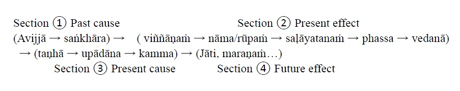

Dhamma Talks by Mogok Sayadaw
– Emptiness, Conditioned, and Unconditioned
第 7 部 (參考用譯文)
特別聲明：本參考用譯文疏漏、錯繆難免，讀者應慎思明辨。僅供法友參考；並祈藉此拋磚引玉，眾法友能共襄盛舉，共同圓滿此譯事。 Nanda 謹識。
目次
苦的造作者 2
苦的創造者 3
兩種邪見的起因 11
有情之始 17
眾生的起始 19
Ending of the Unwholesome Life 22
終止不善的生命 23
何為值得與不值得的人生？ 25
不善生命的終結 25
The Last Teaching of the Buddha 27
佛陀的最後教誨 29
緣起法與修行的關鍵 31
涅槃即是無常的終結 31
佛陀的最後教誨 32
隱藏的寶藏 37
隱藏的寶藏 39
Priceless Treasure of Mankind 42
人類的無價之寶 44
人類無價的寶藏 46
In Accordance with the Dhamma 48
依法而行 50
附註： 52
依循法 52
正確地行布施（Dāna） 57
布施的正確觀念 57
欲求有身，便是向「集諦（samudaya sacca）」祈求苦 58
十一種烈火（11種能毀滅財富的災難） 59
智慧的布施 vs. 盲目的布施 59
布施儀式——正確的迴向 60
正確地行布施 60
Dāna and the Ending of Dukkha 62
布施與苦的終止 64
布施與苦的終結 67
地獄的兩位守門者 72
那麼，觀掉舉有何利益？ 73
疑難以治療。 73
地獄的兩位守護者 75
Can’t Rely on the Outside Power 78
不能依賴外在力量 82
十二因緣之四段簡述： 82
正見與破疑： 83
智慧止息邪見與疑惑： 83
練習重點： 84
八種不善去處包括： 84
比喻與關鍵指引： 85
核心結語： 85
核心修行點： 86
不能依靠外力 86
Dukkha and the End of Dukkha 90
苦與苦的止息 91
修行與邪見的障礙： 92
涅槃＝苦的止息 93
知苦＝見法 94
核心總結： 95
苦與苦的終結 95
受與其重要性 100
🌿 真正的 satipaṭṭhāna bhāvanā： 105
感受的重要性 105
渴愛與業 111
📌 佛陀區分了「渴愛（taṇhā）」與「業（kamma）」 113
渴愛與業 116
Three Cups of Medicine and the Crazy Beings 119
三帖藥與癲狂眾生 122
👁️ 每當你觀察這個色身五蘊，它都在「生起—滅去」的過程中。 123
🔥 若證得道智，八大地獄與一百二十小地獄將完全瓦解！ 127
三杯藥和瘋狂的眾生 127
Stream‐Enterer and the Inversions 131
初果聖者與顛倒想 132
☸️ 即使在死亡中保持對「無常」的觀照，來世亦將導向「不死法」 133
🪷 如果你找到能教導「苦」的老師，就不會再渴望這種苦了 133
預流者與顛倒 136
掙脫項圈 139
最重要的是拯救自己，而非他人。 140
若你說：「我會照著貪愛的指使去做。」那就等同說：「我願墮入惡趣。」 140
你現在是一個被煩惱（kilesa）所逼的瘋子。 140
若貪愛告訴你：「人間、天界、梵天界都很好」——請千萬不要相信！ 141
在病痛發生之前，就要尋找解藥。 141
（尊者重提狗與柱子的比喻） 141
過去你是如何活著的？ 142
為何凡夫變成狗？ 142
掙脫項圈 142
可怖的邪見 147
可怕的邪見 149
如何償還你的債？ 154
如何償還你的債務？ 156
Do Buddhists Have Wrong Views? 160
佛教徒是否有邪見？ 162
佛教徒有邪見嗎？ 165
Compassion with Wrong View 167
慈悲與邪見 170
帶著邪見的慈悲 172
The Paths of the Wise and the Fool 175
智者與愚者之道 179
智者與愚者的道路 181
尋找根源 187
尋找源頭 188
The Three Knowledge in the Suttas 190
經典中的三種智慧 192
經文中的三種知識 195
The Doctrine of the Buddha 198
佛陀的教法 201
佛陀的教義 204
Unwise Attention and Sufferings 207
不正思惟與苦 209
不如理作意與苦難 211
渴愛主導業行 216
渴愛凌駕於行為之上 218
Conditioned and Unconditioned 220
有為與無為 221
有為與無為 223
21st October 1961
The Buddha said clearly that taints (āsava) were the dhamma oppressing living beings. Kāma‐taṇhā is desire for sensual pleasure. Bhava‐taṇhā is this life not good and desire for next life. Diṭṭhāsava is not knowing the five khandhas and taking it as me and mine. Avijjāsava is not knowing the four Noble truths.
These four murderers are the four āsava and killing living beings to become bones of mountain and fleshes of earth. Can it be oppressed to everyone? It can’t oppress to someone has the knowledge on the khandha. We should be very thankful for the Buddha’s attributes and service. We can’t do anything except only deaths with our own desire. Our worshipping of the Buddha are not reaching to the ñāṇa Buddha and instead on the form Buddha.
We don’t know the nature of the khandha and oppress by the āsava. We don’t let the ñāṇa knowing on the khandha existence that we are suffered up to their treatment. The Buddha said; “Someone who knows (jānāti) and sees (passati) the khandha existence with knowledge (ñāṇa—knowing) will be free from the āsava.”
Āsava are making living beings whirling around and sinking in saṁsāra. Ānāsava (no taints) is Nibbāna. Seeing impermanence in the khandha and taint of ignorance (avijjāsava) becomes knowledge (vijjā). It’s not mine that becomes vanishing and taint of wrong view falls off. It has the nature of vanishing that no desire for it. And then taint of sensuality (kāmāsava) falls away.
In this way and the desire for becoming is also useless. Āsava is like a mother. Why the ñāṇa knowing not fits in with the khandha existence together? Because of unwise attention (ayonisomanasikāra) and falls into the province of āsava. With wise attention (yonisomanasikāra) ñāṇa knowing and khandha existence are fit in together. Without practice and āsava is unshakable.
The perception of man and woman disappears and khandha appears, it is the emptiness dhamma (suññatā dhamma). Knowing about the five khandhas is becoming a knowing person (jānāti). Let us contemplate it and becoming a seeing person (passati). It’s just knowing and not including seeing yet.
Therefore you have to contemplate at it for the knowing and seeing. Āsava will cease by combining these two practices. For example, seeing a white colour object, knowing the white colour is the aggregate of consciousness (The five aggregates are working together. Here just talk about the knowing which is consciousness).
Contemplate this knowing is passati. Contemplate as, it exists or not exists and you’ll not find it. It’s existing and not existing dhamma.
So, it’s arising and passing away. Note it with jānāti and contemplate with passati, and seeing the characteristics of impermanence, dukkha, anatta, asubha and the truth of dukkha.
Does there any other thing exist? The four āsava cease and no khandha exists. No death exists without the khandha. There are no piles of bone, blood and flesh any more. Therefore with the way of jānāti, passati will be finished the PRACTICE.
1961年10月21日
佛陀明確指出，漏（āsava）是壓迫眾生的法。欲貪（kāma-taṇhā）是對感官享樂的渴求；有貪（bhava-taṇhā）是不滿足於此生，並渴望來世；見漏（diṭṭhāsava）是不知五蘊，並將其執取為「我」與「我所有」；無明漏（avijjāsava）是不知四聖諦。
這四個「殺手」就是四種漏，它們使眾生死去，化為山骨大地的血肉。它們能夠壓迫所有人嗎？不會壓迫對於蘊有正知的人。我們應當深深感念佛陀的功德與教導。若無此正知，我們除了在欲望驅使下走向死亡，別無他法。我們所敬拜的佛陀，未能觸及「智佛」（ñāṇa Buddha），僅止於「色佛」（rūpa Buddha）。
我們不了解蘊的本質，因而受漏所逼迫；我們不讓智慧（ñāṇa）照見蘊的存在，因此一直受其役使而受苦。佛陀說：「若有人以智慧（ñāṇa）知（jānāti）與見（passati）蘊之存在，便能解脫於漏。」
漏使眾生在輪迴中輾轉沉淪；無漏（ānāsava）即是涅槃（Nibbāna）。若能見蘊無常，則無明漏（avijjāsava）轉為智（vijjā）；「這不是我的」的體證使執取消融，邪見之漏亦隨之斷除；體悟其本質是無常，便不再生起對它的貪戀，欲漏（kāmāsava）亦隨之息滅。
如此，有漏的「求有」亦成無益。漏如同母親，為何智慧無法與蘊的存在相契合？因為不正思惟（ayonisomanasikāra），便落入漏的掌控之中；若具正思惟（yonisomanasikāra），則智慧與蘊的存在相契合。若無修行，漏便無法動搖。
當對「人」與「女人」的想法消失，而僅見五蘊，這便是「空法」（suññatā dhamma）。知五蘊者為「知者」（jānāti），觀照五蘊者為「見者」（passati）。然而，僅止於「知」尚未達到「見」。
因此，必須反覆觀照，以達「知」與「見」。當這兩者結合，漏便會止息。例如，看見白色之物，了知其白色，這是識蘊的作用（五蘊同時運作，此處僅指識蘊的「知」）。
觀照此「知」，即是「見」（passati）。再觀察它「存在」或「不存在」，便發現它既存在亦不存在。
故此，它是生滅法。以「知」（jānāti）來標記，以「見」（passati）來觀察，見無常、苦、無我、不淨以及苦諦之特性。
還有其他存在嗎？當四漏滅盡，五蘊亦不復存在。無蘊則無死，再無白骨、血肉的聚積。因此，以「知」（jānāti）與「見」（passati）之道，便能完成修行。
～～～～～～～～～～～～～～～～～～～～～～～～～～～～～～～～
1961年10月21日
佛陀清楚地說，漏（āsava）是壓迫眾生的法。欲愛（kāma‐taṇhā）是對感官樂趣的渴望。有愛（bhava‐taṇhā）是對此生不滿，以及對來世的渴望。見漏（diṭṭhāsava）是不了解五蘊，並將其視為「我」和「我的」。無明漏（avijjāsava）是不了解四聖諦。
這四個殺戮者就是四漏，它們殺害眾生，使其成為堆積如山的骨骸和遍佈大地的血肉。它們能壓迫所有人嗎？它們無法壓迫對五蘊有知見的人。我們應該對佛陀的德行和貢獻深懷感恩。除了在自己的欲望中走向死亡，我們無能為力。我們對佛陀的崇拜，並未到達智佛（ñāṇa Buddha），而是停留在形像佛（form Buddha）。
我們不了解五蘊的本質，因而受到漏的壓迫。我們不讓智（ñāṇa）了解五蘊的存在，因此我們在它們的擺佈下受苦。佛陀說：「知道（jānāti）並看見（passati）五蘊存在的人，將從漏中解脫。」
漏使眾生在輪迴中旋轉沉淪。無漏（ānāsava）即是涅槃。在五蘊中看見無常，無明漏（avijjāsava）轉為明（vijjā）。「非我」的觀念生起，錯誤見解的漏便會脫落。它具有消逝的本質，因此不會對其產生欲望。然後，欲漏（kāmāsava）也會消失。
如此一來，對「成為」的渴望也會失去作用。漏就像一位母親。為什麼智的知見無法與五蘊的存在相契合？因為不如理作意（ayonisomanasikāra），而落入漏的領域。透過如理作意（yonisomanasikāra），智的知見與五蘊的存在才能契合。沒有修行，漏是無法動搖的。
男女的感知消失，五蘊顯現，這就是空法（suññatā dhamma）。了解五蘊，就會成為一位知者（jānāti）。讓我們思惟它，成為一位見者（passati）。這只是知道，尚未包含看見。
因此，你必須思惟它，才能知見兼備。結合這兩種修行，漏就會止息。例如，看見一個白色物體，知道白色是識蘊的聚合（五蘊共同運作。這裡只談論作為知覺的識）。
思惟這個知覺，就是觀（passati）。思惟它的存在或不存在，你將無法找到它。它是存在又不存在的法。
因此，它是生滅的。以知（jānāti）來注意它，以觀（passati）來思惟它，並看見無常、苦、無我、不淨和苦諦的特徵。
還有其他事物存在嗎？四漏止息，五蘊不存在。沒有五蘊，就沒有死亡。不再有成堆的骨骸、血肉。因此，透過知（jānāti）的方式，觀（passati）的修行將完成。
23rd October 1961
Due to being afraid of dukkha, people are listening and practicing dhamma. In the Dhammacakka Discourse (the First Discourse, SN 56.11 Dhammacakkappavattanasuttaṃ), the Buddha mentioned some of the dukkhas. But among the many the most frightening to you all are dukkhas in the planes of misery. Dukkha is the resultant dhamma.
What is the cause you need to think about it? Taking the five khandhas as this is mine, this I am, this is myself. Diṭṭhi is the cause of it. If wrong view is abandoned the biggest root of dukkha to the planes of misery is destroyed. Even the Buddha said: Extinguish the head fire later but kill Diṭṭhi quickly. The chest pierced by a spear was also in this way. Piercing with a spear only dies once. You'll die for uncountable time if having wrong view.
(Sayadaw continued the story of Anāthapiṇḍika and the outsiders. They were discussion on dhamma.) Anāthapiṇḍika gave the answer to them on the causes of wrong view. ① Unwise attention (ayonisomanasikāra) ② Listening to the wrong teachings. There are many causes for diṭṭhi to arise.
These two causes are the most important points (There were eight causes, but he answered them used only 2) ① With the first cause, one falls into the planes of misery is by oneself ② With the second cause, one falls into the planes of misery by others. (In nature, there are two major causes, i.e. internal and external causes.)
The Buddha said; our homes were the four planes of misery. Let us deal with the first one. We'll get the 32 parts of it if we separate the body. Hair of the head, bodily hairs, teeth, bones, etc. And diṭṭhi becomes a little bit shaken. The perception of the pretty and beautiful body from the taṇhā dies out but diṭṭhi does not fall off.
If you ask whose hairs it is, diṭṭhi coming in as my hair, my teeth, etc. Then you still can’t do it with the 32 parts of the body (contemplation with bodily parts). It’s quite terrible. It will still come as my father’s bones, my father’s grave. Differentiate it into mind and form. We attach to the mind as me. Attach to the voice as me, etc.
This diṭṭhi is also very unshakable. Divide the five khandhas into the four satipaṭṭhāna and see the five khandhas as impermanent dukkha sacca, and then diṭṭhi is fleeing. Until not seeing impermanence diṭṭhi is sticking to it, and still not falls apart. It’s very difficult for diṭṭhi to fall off without the practice of vipassanā. (Just look at the Brahma gods. They attain jhānas but still have diṭṭhi.) Anicca (impermanence) and aniccānupassanā ñāṇa (knowledge of the contemplation of impermanence) join together only, diṭṭhi falls off.
People are looking into the mirrors and diṭṭhi arises. Using the mirrors is terrible. There was a story of a lion looking into a mirror and then died. If he showed its teeth, the shadow in the mirror also showed its teeth. If he was roaring at it, also the shadow there was roaring back.
Taking its shadow as another lion and ended up in death. Here also looking into the mirror wrongly that end up in the planes of misery. (Sayadaw’s talk became humorous). The mirror is reflecting on its own but you have the mind of a lion, unable to differentiate the shadow and the person.
Taking the great elements (the four great elements) as me, diṭṭhi arises. Don’t think that looking into the mirror is easy because of the mirror you will be in sorrow and lamentation. You have to look at the mirror in this way. Is the shadow in the mirror one oneself or other? If you say myself, then the one outside the mirror will be other. If it’s other, it should be not look like you.
The mirror has the clearness of the great elements that shadow appears. It’s difficult if you don’t know how to say about it. The second cause is listening to the wrong teaching. For an example, it was done by the permanent God (The Creator), etc. Also with the Buddhist view of kammassakatā ñāṇa,
I do it and I get it (kamma and kammic result), diṭṭhi not falls away. It becomes sassata diṭṭhi (view of eternalism); believing in the views that there were no wholesome and unwholesome dhammas and a country had been come into ruin. (Referred to a jātaka story of the wrong teaching and view which destroyed the country. We may find this kind of incidents in today's world.)
If you can look at the khandha and āyatana as suññatā (void or emptiness) diṭṭhi will fall away. I’ll give you the way of knowledge. Still not penetrate at suññatā and diṭṭhi will not fall off. Therefore suññatā dhamma is very important. The five khandhas only have the cause and effect of D. A. process. It only exists as dukkha and samudaya.
Diṭṭhi will fall away only listening to this kind of talks. (Anāthapiṇḍika answered to the outsiders in this way). “My view on the five khandhas is these are saṅkhata dhamma (conditioned phenomena). They have the characteristics of impermanence, dukkha and not‐self. Therefore I don’t take them as this is 'I', this is 'mine' and this is 'my self'.”
Someone who doesn’t practice is not knowing it. Someone discerns impermanence and taking them as this is mine, this I am and this is my self are impossible. You are not listening to wrong teachings, and don’t have unwise attention. So, contemplate impermanence with perseverance. It has the power of destroying the root to the planes of misery for you.
You should do this with satisfaction. What the meaning of just for eating and going to the planes of misery is! (This warning was hitting to the heart. Most living beings were born here as human beings and just doing for these. They are using their good kammas just for doing stupid things). Do the main work for the happiness of freeing oneself from the saṁsāric dukkha. Going downstream is not difficult.
Do you only concern for the stomach or want to end saṁsāric dukkha? For not becoming unwise attention you have to contemplate impermanence at any time. Also it is necessary for listening to suññatā dhamma. In this way you will be freed from the four planes of misery.
1961年10月23日
因畏懼苦（dukkha），人們聆聽與修習佛法。在《法輪經》（《相應部》56.11《轉法輪經》，Dhammacakkappavattanasuttaṃ）中，佛陀提及諸多苦，但在眾多苦中，最令你們恐懼的是惡趣中的苦。苦是果報法。
那麼，苦的因是什麼？應當思惟：執取五蘊為「這是我的、這是我、這是我自己」，此即邪見（diṭṭhi）的根本。若斷除邪見，導致墮入惡趣的最大根源便被摧毀。即便佛陀也曾開示：「寧可稍後才撲滅頭上烈火，當務之急是迅速斷除邪見。」即使胸口被長矛刺穿，也只會死一次；但若懷有邪見，將於無數劫中反覆死去。
（長老接著講述阿那邠邸（Anāthapiṇḍika）與外道論法的故事。）阿那邠邸對外道解釋邪見的成因：
① 不正思惟（ayonisomanasikāra）。
②
聽聞錯誤的教法。
邪見生起的因緣有許多，但這兩者是最關鍵的（雖有八因，他僅列舉了其中二者）：
①
由於第一種原因，人會因自身的錯誤而墮入惡趣。
②
由於第二種原因，人會因他人的誤導而墮入惡趣。
（從自然法則來看，這兩者即內因與外因。）
佛陀曾說：我們的「家」即是四惡趣（四種惡道）。現在來探討第一個原因。若將身體解析，可得三十二身分——髮、體毛、牙齒、骨骼等。此時，邪見會稍稍動搖，對於身體的美好與可愛之見解會因貪愛的減弱而消失，但邪見仍未徹底滅除。
若問：「這些頭髮是誰的？」邪見仍會生起：「這是我的頭髮、我的牙齒⋯⋯」由此可見，即便觀身三十二分，仍難破除邪見，這是極為嚴重的問題。邪見仍會執取：「這是我父親的骨骼、這是我父親的墳墓⋯⋯」進一步分析，當我們將五蘊區分為名與色（nāma-rūpa）時，仍然執取名法為「我」，執取聲音為「我」等。
此種邪見極為堅固。若能將五蘊分別納入四念住（satipaṭṭhāna），並見五蘊為無常、苦、苦諦（dukkha sacca），則邪見便會遠離。只要未能見到無常，邪見便會依附其中，難以消除。若不修習內觀（vipassanā），邪見極難斷除。（觀察梵天即知，他們雖證得禪那，仍存邪見。）唯有無常（anicca）與觀無常之智（aniccānupassanā ñāṇa）相結合，邪見方能斷除。
人們照鏡子時，邪見生起。使用鏡子是危險的，曾有獅子對鏡子怒吼，最終喪命的故事。獅子張牙，鏡中的影像也張牙；獅子怒吼，鏡中影像亦怒吼。獅子誤以為鏡中影像是另一頭獅子，最終因驚恐而死。此處亦如是，錯誤地看待鏡中影像，導致墮入惡趣。（長老的開示變得幽默）鏡子只是在反射影像，但我們卻如獅子一般，無法分辨影像與自身。
執取四大（地水火風）為「我」，邪見便會生起。別以為照鏡子是簡單的事，因鏡像生起愁苦與悲傷。應當如此觀察鏡像：「鏡中的影像是自己還是他人？」若說「是自己」，則鏡外之人便應是「他人」。若是「他人」，影像就不應該與自己相似。
鏡子只是依四大清淨度而顯現影像。若不知如何分析，便難以解釋此現象。
第二個邪見的成因是聽聞錯誤的教法。例如，認為一切皆由「造物主」（常住神）所創造；或即便接受佛教的業報法則（kammassakatā ñāṇa）——「我造業，我受報」，卻仍未斷除邪見，因而落入「常見」（sassata-diṭṭhi）。若相信世間沒有善法與惡法，國家亦將因此滅亡。（長老引用了一則本生故事，講述錯誤教法與邪見如何導致國家毀滅。這類事件在今日世界亦可見。）
若能觀五蘊與六處（āyatana）為「空」（suññatā），邪見便會滅除。現在我要傳授「智慧之道」：未能徹見「空」，邪見便無法滅除。因此，「空法」（suññatā dhamma）極為重要。五蘊唯有因緣和合而生，僅是緣起法，唯有苦與集（dukkha & samudaya）存在。
唯有聆聽此類法義，邪見方能滅除。（阿那邠邸便是如此回答外道的。）「我對於五蘊的看法是：這些皆為有為法（saṅkhata dhamma），具有無常、苦、無我之特性。因此，我不執取它們為『我』、『我的』或『我自己』。」
未曾修行者，不知此理。若已見無常，則不可能仍執取「這是我的、這是我、這是我自己」。你們未曾聽聞錯誤教法，亦無不正思惟，因此應當精進觀無常。此法具有摧毀墮入惡趣根源之力。
應當以喜悅心修行此法。若僅為溫飽而活，最終卻墮入惡趣，這有何意義？（這番警示直擊人心。眾生得人身，卻僅為飲食奔波，無明地消耗善業，實為愚行。）應當以修行解脫生死苦為首要之務。隨順輪迴的流轉並不困難，
你究竟只是為了果腹，還是想要解脫輪迴之苦？為了不落入不正思惟，應當時時觀照無常。此外，聆聽「空法」亦極為重要。如此修行，便能從四惡趣中解脫。
～～～～～～～～～～～～～～～～～～～～～～～～～～～～～～～～
1961年10月23日
由於害怕苦，人們聽聞並修行佛法。《轉法輪經》（初轉法輪經，SN 56.11《Dhammacakkappavattanasuttaṃ》）中，佛陀提到了一些苦。但在眾多苦中，對你們來說最令人恐懼的是惡道的苦。苦是果報之法。
你們需要思考的是什麼原因導致了苦？將五蘊視為「這是我的」、「這是我」、「這是我自己」。邪見（diṭṭhi）是其原因。如果捨棄邪見，通往惡道苦的最大根源就被摧毀了。即使佛陀也說：「先熄滅頭上的火，也要迅速殺死邪見。」胸口被矛刺穿也是如此。被矛刺穿只死一次。但若有邪見，你會死無數次。
（長老繼續講述給孤獨長者與外道的故事。他們正在討論佛法。）給孤獨長者回答了他們關於邪見起因的問題。①不如理作意（ayonisomanasikāra）②聽聞錯誤的教導。邪見產生的原因有很多。
這兩個原因是重點。（原本有八個原因，但他只回答了兩個）①第一個原因，人們自己墮入惡道。②第二個原因，人們因他人而墮入惡道。（本質上，有兩個主要原因，即內因和外因。）
佛陀說：「我們的家是四惡道。」讓我們處理第一個原因。如果我們將身體分解，我們會得到32個部分。頭髮、體毛、牙齒、骨頭等等。邪見會稍微動搖。對美麗身體的貪愛（taṇhā）的感知會消失，但邪見不會脫落。
如果你問這些頭髮是誰的，邪見會介入，認為是我的頭髮、我的牙齒等等。那麼，你仍然無法透過32個身體部分的觀照來解決問題。這相當可怕。它仍然會以我父親的骨頭、我父親的墳墓的形式出現。將其區分為身和心。我們執著於心，認為是「我」。執著於聲音，認為是「我」等等。
這種邪見也非常頑固。將五蘊分為四念處，並將五蘊視為無常、苦諦，然後邪見才會逃離。在沒有看到無常之前，邪見會緊緊抓住，仍然不會崩潰。沒有毘婆舍那的修行，邪見很難脫落。（看看梵天神。他們獲得禪定，但仍然有邪見。）只有無常（anicca）和無常隨觀智（aniccānupassanā ñāṇa）結合，邪見才會脫落。
人們照鏡子時，邪見會產生。使用鏡子很可怕。有一個獅子照鏡子然後死掉的故事。如果牠露出牙齒，鏡子裡的影子也會露出牙齒。如果牠對著鏡子咆哮，影子也會咆哮回去。
將影子視為另一隻獅子，最終導致死亡。這裡也是錯誤地照鏡子，最終導致墮入惡道。（長老的談話變得幽默。）鏡子反映的是它自己，但你有獅子的心，無法區分影子和人。
將四大元素視為「我」，邪見就會產生。別以為照鏡子很容易，因為鏡子你會感到悲傷和哀嘆。你必須這樣看鏡子。鏡子裡的影子是自己還是他人？如果你說是自己，那麼鏡子外面的人就是他人。如果是他人，就不應該和你長得一樣。
鏡子具有四大元素的清晰度，影子才會顯現。如果你不知道怎麼說，那就很困難。第二個原因是聽聞錯誤的教導。例如，永恆的上帝（造物主）等等。還有佛教的業果智（kammassakatā ñāṇa）。
我做，我得（業和業報），邪見不會脫落。它會變成常見（sassata diṭṭhi）；相信沒有善惡之法的觀點，導致國家毀滅。（指的是一個破壞國家的錯誤教導和觀點的本生經故事。我們可能會在今天的世界中找到這類事件。）
如果你能將五蘊和六入處視為空（suññatā），邪見就會脫落。我會給你知見的方法。在沒有洞察空之前，邪見不會脫落。因此，空法非常重要。五蘊只有緣起（D.A.）過程的因果。它只作為苦和集而存在。
只有聽聞這類談話，邪見才會脫落。（給孤獨長者這樣回答外道。）「我對五蘊的看法是，它們是有為法（saṅkhata dhamma）。它們具有無常、苦和無我的特徵。因此，我不將它們視為『我』、『我的』和『我自己』。」
不修行的人不知道。能夠辨別無常的人，不可能將它們視為「我的」、「我」和「我自己」。你不聽聞錯誤的教導，也沒有不如理作意。因此，堅持不懈地觀照無常。它有能力摧毀你通往惡道的根源。
你應該滿意地做到這一點。只為了吃飯而墮入惡道是什麼意思！（這個警告直擊人心。大多數眾生作為人類出生在這裡，只是為了這些而做。他們將他們的善業用於做愚蠢的事情。）做主要的工作，為了從輪迴的苦中解脫的快樂。順流而下並不困難。
你只關心肚子，還是想結束輪迴的苦？為了不產生不如理作意，你必須隨時觀照無常。聽聞空法也是必要的。這樣你才能從四惡道中解脫。
25th October 1961
[In Sāvatthi, Jetavana Monastery, the Buddha said to the monks. It couldn’t be discerned the beginning of a living being but knew the causes of it. Sayadaw said there were a lot of arguments about this problem.
The Buddha was said to be known everything and why didn’t he knows that? He quoted the Buddha’s saying that if he traced it backwardly, only his life span was finished and would never come to an end.
But he knew the causes of the khandhas. It was ignorance and craving. It was more important to know this and could end dukkha. It’s important to distinguish what is essential and what is not. Find out the cause only will solve the problem and not with the result.
The Buddha gave an example; the water in the ocean could be dry up when the time came for the end of the world. But the life of a living being would never end if he couldn’t destroy ignorance and craving. This was one of the reasons why a living being couldn’t discern directly in the beginning.
He gave two other examples again. Mt. Meru and the earth could be disappeared but without destroyed ignorance and craving dukkha would never end.
Sayadaw using D. A. described the continuation of the khandhas. Ignorance, volitional formation, craving, clinging, action (avijjā, saṅkhāra, taṇhā, upādāna, kamma) → consciousness, name and form, sense bases, contact, feeling (viññāṇaṁ, nāma‐rūpaṁ, saḷāyatanaṁ, phassa, vedanā—five khandhas) → ignorance…, etc. Saṁsāra is like this, on and on infinity. (This is very clear why the beginning of a living being is indiscernible.)
It’s also like a tree bears fruits. From the fruit a tree grows out, from a tree bear fruits, etc. The Buddha said we should first destroy diṭṭhi and later ignorance and then craving, because ignorance and craving were like the root of a tree. Diṭṭhi was like water supporting the root.
Supported by diṭṭhi, ignorance and craving became stronger and bigger. This is a very important point. After enter the stream and the advanced stages are not difficult anymore. With people experiences, the life of a sotāpanna is changing dramatically.
In this talk we can feel sayadaw’s concern and compassion for his two disciples who were leaving the place, after practising for sometimes. They were only at vipassanā ñāṇa, and like a young fruit easy to spoil. They should give their times for regular practice to be matured and reached the goal. Vipassanā ñāṇa is aniyata dhamma (unstable, it still may degenerate) and magga ñāṇa is niyata dhamma (stable, i.e., Nibbāna). ]
The Buddha said to the monks, it couldn’t see your own beginning. The beginning of this khandha saṁsāra was unknowable. This referred to the physical body saṁsāra (as living being). But he knew it causes. Even knowing of the body saṁsāra is not beneficial. It can bring saṁvega only and can’t lead to liberation. It’s beneficial to know the causes of its beginning.
By knowing the causes and has the benefit of stopping it. I will show the example of someone who can’t exterminate the beginning of the dhamma (i.e., ignorance and craving.) The third example is the great earth can be disappeared. Be without the ending of ignorance and craving, saṁsāra can’t end. It’s very fearful indeed.
So, practice hard for the ending of it. Even it’s not easy to know these dhamma. There are a lot of people who don’t know it. Even it is not easy to have the ability of ear for listening to these kinds of talk; for example, non‐Buddhist countries. With knowing and not practicing is like having the medicine and not taking it.
So, it can’t cure the illness. Before looking at other’s faults; at first you have to know if you are free from it? We can discern the three characteristics only without the darkness of ignorance. This girl is pretty but no morality. Is it good? Here it also, with the knowing but not do the practice. No cessation of ignorance is, because we take the khandha as this is mine, this I am and this is my self. Diṭṭhi is leading and joining with taṇhā and avijjā supporting them by not knowing the true nature. So, we are making it as me and mine. Three of them are together. Ignorance and craving are making the khandha. Again from the khandha, ignorance and craving arise. Again khandha arises; it’s on and on never end.
The five causes are: ignorance, volitional formation, craving, clinging, action. The five results are: consciousness, name and form, sense bases, contact, feeling → infinity (without practice). It’s similar to a tree: Tree → fruit → tree → fruit, etc.
With round of existence (vaṭṭa): kilesa vaṭṭa → kamma vaṭṭa → vipāka vaṭṭa (defilement → action → khandha) → kilesa vaṭṭa → kamma vaṭṭa → vipāka vaṭṭa, etc. (Something similar to eating → excreting → eating → excreting, etc. on and on. What a mess?! This is saṅkhāra dukkha).
There are two views: atta diṭṭhi (self view) and anatta diṭṭhi (not self view). By seeing not‐self view, ignorance and craving are not extinct yet. But you become a stream‐enterer (sotāpanna) and are free from the planes of misery. After killing diṭṭhi, continue to kill ignorance and craving. You must do the work of the right path factors (sammā maggaṅga) and look for a spiritual friend (kalyāna‐mitta).
The five wrong path factors (micchā maggaṅga) are: ignorance, volitional formation, craving, clinging, action. The right path factors couldn’t exist if the Buddha was not arsing. The right path factors can’t arise without associating with the disciples of the Buddha. The five path factors of insight right view are still young.
If it’s young, it could be spoiled like a fruit. Encountering with coarse objects, it becomes spoiled. It is similar to jhanic samādhi. With Path Knowledge (right view of the Path—magga sammā‐diṭṭhi), it becomes stable. (niyata). Are the five path factors and the eight path factors far from each other? For someone doing the practice is not for enough. Not doing the practice, even the five path factors (i.e., vipassanā ñāṇa) will disappear.
It becomes insight knowledge because of the objects of the five khandhas. If happening like this, it destroys the poison fruits of the five wrong path factors (i.e., avijjā, saṅkhāra, taṇhā, upādāna, kamma). The five path factors become eight factors and future khandha will not arise.
1961年10月25日
（佛陀在舍衛城祇樹給孤獨園對比丘們說：無法辨識有情的起始，但能知其因緣。禪師提到，此問題曾引發諸多爭論。）
有人質疑，既然佛陀被稱為無所不知，為何無法知曉有情的起始？禪師引用佛陀的話：「若回溯推尋，僅僅此生壽命便已耗盡，而輪迴仍無窮無盡。」然而，佛陀確實知曉五蘊的成因，即無明與渴愛。認識此二者更為重要，因為能藉此滅除苦。應當分辨何者為關鍵，何者非關鍵；唯有探尋其因，方能解決問題，而非執著於結果。
佛陀舉例說：當世界毀滅之時，海水終將乾涸，但若無法滅除無明與渴愛，有情的生命仍將無窮無盡地延續。這正是為何無法直接辨識有情之始的原因之一。
佛陀又舉出兩個例子：須彌山與大地都可能消失，然若無明與渴愛未滅，苦仍不會終結。
禪師運用緣起法（D.A.，paṭiccasamuppāda）解釋五蘊的延續：
無明、行、渴愛、取、業（avijjā,
saṁkhāra, taṁhā, upādāna, kamma）→
識、名色、六處、觸、受（viññāṁa,
nāma-rūpa, saṁāyatana, phassa, vedanā，即五蘊）→
無明……如此循環不息，輪迴無盡。（這正是為何無法辨識有情之始的明證。）
輪迴如同果樹：果實生樹，樹又結出果實，循環往復。佛陀說，應當先斷除邪見（diṭṭhi），再滅除無明與渴愛，因為無明與渴愛如同樹根，而邪見則如灌溉根部的水源。
邪見滋養著無明與渴愛，使之更加茁壯。這一點至關重要。若能證得初果，後續進展將不再困難。據經驗可知，須陀洹的生命會發生顯著轉變。
在這篇開示中，我們能感受到禪師對兩位即將離開道場的弟子的關心與慈悲。他們已達內觀智（vipassanā ñāṁa），卻仍猶如未成熟的果實，容易腐壞。他們應該堅持定期修行，以達到成熟，進而證得究竟目標。內觀智（vipassanā ñāṁa）是不穩定的（aniyata dhamma），仍可能退轉，而道智（magga ñāṁa）則是穩定的（niyata dhamma，即涅槃）。
佛陀告誡比丘們：
「汝等無法見自身之始，五蘊的輪迴起點不可知。」此指的是色身輪迴（有情之流轉），但佛陀知曉其因緣。然即便知曉五蘊輪迴的開始，亦無實際利益，僅能引發厭離心，卻無法導向解脫。相較之下，知曉其因緣才真正有益，因為唯有了解成因，方能止息輪迴。
若無法滅盡無明與渴愛，即便大地消失，輪迴仍無窮無盡，令人畏懼。因此，當勤修行，致力於滅除它們。即使能夠聽聞此法亦非易事，世間多數人從未得聞，甚至在非佛教國度中，連聆聽這類教法的機緣都難得。若知法卻不修行，如同擁有藥物卻不服用，無法治癒疾病。
故應先自省，莫忙於觀察他人之過失。
唯有無明的黑暗消除，方能覺知三相（無常、苦、無我）。若僅見色身美麗，卻無道德，這能算好嗎？同理，若僅知法義卻不實踐，亦無意義。無明未滅的原因在於執取五蘊為「我、我所、我自身」。邪見牽引渴愛與無明，支持著錯誤的認知，使我們執取五蘊為「我與我所」。
無明與渴愛造就五蘊，五蘊又生起無明與渴愛，如此循環不已。
五種成因：無明、行、渴愛、取、業。 五種結果：識、名色、六處、觸、受。 → 若無修行，將無窮無盡地持續。
此輪迴如同樹與果實：樹 → 果 → 樹 → 果，無止無休。 亦如輪迴之三相： 煩惱輪（kilesa vaṭṭa）→ 業輪（kamma vaṭṭa）→ 果報輪（vipāka vaṭṭa） （煩惱 → 行為 → 造作五蘊）→ 煩惱 → 行為 → 五蘊……無窮無盡。
（這如同進食與排泄的循環，令人厭惡！這便是行苦 saṅkhāra dukkha。）
有兩種見解： ① 我見（atta diṭṭhi） ② 無我見（anatta diṭṭhi）
即使見無我，無明與渴愛仍未滅盡，但此時已成為須陀洹，解脫於惡趣。斷除邪見後，應繼續滅除無明與渴愛，必須依循正道（sammā maggaṅga）並尋求善知識（kalyāṇa-mitta）。
五種錯誤之道（micchā maggaṅga）： 無明、行、渴愛、取、業。
若無佛陀出世，正道（sammā maggaṅga）便無法顯現。 若不與佛弟子為友，正道亦難生起。
五種正見之道（vipassanā ñāṇa）仍然稚嫩，猶如未成熟之果，容易腐壞。若遭遇粗重境界，便可能退失，猶如禪定仍不穩固。唯有道智（magga sammā-diṭṭhi）生起，方能穩定（niyata）。
修行者不應僅滿足於修行本身。 若不持續修行，即使五種正見（即內觀智）亦將消失。
內觀智依五蘊而生。
若如此修行，便能滅除五種錯誤之道的毒果（無明、行、渴愛、取、業）。 五種正見之道將轉為八正道，未來五蘊不再生起。
～～～～～～～～～～～～～～～～～～～～～～～～～～～～～～～～
1961年10月25日
[在舍衛城祇園精舍，佛陀對比丘們說，無法辨別眾生的起始，但知道其原因。長老說，關於這個問題有很多爭論。
有人說佛陀是全知的，為什麼他不知道呢？他引用佛陀的話說，如果他向後追溯，只會耗盡他的壽命，永遠不會有盡頭。
但他知道五蘊的原因。那就是無明和渴愛。知道這些更重要，可以結束苦。重要的是區分什麼是必要的，什麼不是。只找出原因才能解決問題，而不是結果。
佛陀舉了一個例子；當世界末日來臨時，海洋中的水可能會乾涸。但如果眾生無法摧毀無明和渴愛，生命永遠不會結束。這就是眾生無法直接辨別起始的原因之一。
他又舉了兩個例子。須彌山和大地可能會消失，但如果沒有摧毀無明和渴愛，苦永遠不會結束。
長老用緣起（D.A.）描述了五蘊的延續。無明、行、渴愛、取、業（avijjā, saṅkhāra, taṇhā, upādāna, kamma）→ 識、名色、六入處、觸、受（viññāṇaṁ, nāma‐rūpaṁ, saḷāyatanaṁ, phassa, vedanā—五蘊）→ 無明…等等。輪迴就是這樣，無窮無盡。（這非常清楚地說明了為什麼眾生的起始是無法辨別的。）
這也像一棵樹結出果實。從果實中長出一棵樹，從樹上結出果實，等等。佛陀說我們應該先摧毀邪見（diṭṭhi），然後是無明，最後是渴愛，因為無明和渴愛就像樹的根。邪見就像支持根的水。
在邪見的支持下，無明和渴愛變得更強大。這是一個非常重要的點。進入預流（sotāpanna）之後，進階的階段就不再困難。根據人們的經驗，預流者的生活會發生巨大的變化。
在這段談話中，我們可以感受到長老對他兩位弟子的關心和慈悲，他們在修行一段時間後即將離開。他們只停留在毘婆舍那智（vipassanā ñāṇa），就像容易腐爛的幼果。他們應該花時間定期修行，才能成熟並達到目標。毘婆舍那智是不定法（aniyata dhamma，不穩定，仍然可能退轉），而道智（magga ñāṇa）是定法（niyata dhamma，穩定，即涅槃）。]
佛陀對比丘們說，無法看見自己的起始。這個五蘊輪迴的起始是不可知的。這是指有情眾生的色身輪迴。但他知道其原因。即使知道色身輪迴也沒有益處。它只能帶來厭離（saṁvega），無法引導解脫。知道其起始的原因才有益處。
透過知道原因，才能停止它。我將舉一個無法消滅法（即無明和渴愛）起始的例子。第三個例子是大地可能會消失。如果沒有結束無明和渴愛，輪迴就無法結束。這確實非常可怕。
因此，努力修行以結束它。即使知道這些法並不容易。有很多人都不知道。即使有能力聽聞這類談話也不容易；例如，在非佛教國家。知道而不修行就像有藥而不吃。
因此，它無法治癒疾病。在看別人的缺點之前，首先要知道自己是否擺脫了這些缺點？只有在沒有無明黑暗的情況下，我們才能辨別三法印。這個女孩很漂亮，但沒有道德。這樣好嗎？這裡也是一樣，知道而不修行。沒有無明的止息，因為我們將五蘊視為「我的」、「我」和「我自己」。邪見引導並與渴愛和無明結合，透過不了解真實本質來支持它們。因此，我們將其視為「我」和「我的」。它們三者在一起。無明和渴愛製造五蘊。五蘊又產生無明和渴愛。五蘊再次產生；這樣無窮無盡。
五個原因是：無明、行、渴愛、取、業。五個結果是：識、名色、六入處、觸、受 → 無窮無盡（沒有修行）。這類似於一棵樹：樹 → 果實 → 樹 → 果實，等等。
輪迴（vaṭṭa）是：煩惱輪（kilesa vaṭṭa）→ 業輪（kamma vaṭṭa）→ 異熟輪（vipāka vaṭṭa）（煩惱 → 行 → 五蘊）→ 煩惱輪 → 業輪 → 異熟輪，等等。（類似於吃 → 排泄 → 吃 → 排泄，等等。無窮無盡。多麼混亂？！這就是行苦。）
有兩種見解：我見（atta diṭṭhi）和無我見（anatta diṭṭhi）。透過看見無我見，無明和渴愛尚未熄滅。但你成為預流者（sotāpanna），並從惡道中解脫。在殺死邪見之後，繼續殺死無明和渴愛。你必須做正道分（sammā maggaṅga）的工作，並尋找善知識（kalyāna‐mitta）。
五個邪道分（micchā maggaṅga）是：無明、行、渴愛、取、業。如果佛陀沒有出現，正道分就不會存在。如果沒有與佛陀的弟子交往，正道分也不會產生。五個觀智正道分仍然年輕。
如果它年輕，就像水果一樣容易腐爛。遇到粗糙的對象，它就會腐爛。這類似於禪定三摩地。透過道智（magga sammā‐diṭṭhi），它變得穩定（niyata）。五個道分和八個道分相距很遠嗎？對於修行的人來說，這還不夠。不修行，即使五個道分（即毘婆舍那智）也會消失。
由於五蘊的對象，它成為觀智。如果發生這種情況，它會摧毀五個邪道分（即無明、行、渴愛、取、業）的毒果。五個道分變成八個道分，未來的五蘊將不再產生。
31st October 1961
In the D. A. process, paṭiccasamuppāda is the cause of our khandha. And paṭicca‐samuppanna is the result of the khandha. In our khandhas only cause and effect exist. Beings are alive with these two phenomena going on and on. There are two kinds of life; wholesome and unwholesome lives.
A being is alive with feeling if feeling arises; so with craving if craving arises. We are alive with one mind. Without the insight contemplation towards whatever mind arises is alive with ignorance. It’s unwholesome life. Mind is a life faculty; without mind, it is dead. We were growing up from young until now by wasting the rice and increasing the earth.
Therefore all are alive with the unwholesome mind states, after their death, we don't need to make merits for the dead person. It’s only one way to go (to the planes of misery). By contemplation of impermanence of whatever mind arises is living with knowledge and it’s a wholesome life. Can’t contemplate the impermanence of whatever causes arise and will give the results. Don’t pretend to be a moral person.
Differentiate with the wholesome and unwholesome qualities of mind and it becomes clear. Have to differentiate with the types of mind. I’ll give you a vipassanā mirror. Knowing whatever wholesome and unwholesome mind is vipassanā. Don’t be afraid of greed and anger arising. You should be afraid of not knowing them when they arise. In the satipaṭṭhāna sutta, the Buddha did not say to not let them arise, instead to know when they arose.
It is impossible not to let them arise. It will arise as a worldling encounters with sense objects. They arise for the D. A. process. The process will not continue if you follow behind with knowing. You have to make friends with enemies (i.e. with contemplation). In this way the path factors send the dhamma of painful rebirths to Nibbāna (Apāya dhamma becomes Nibbānic dhamma.) So, it's unnecessary to talk about you don’t have anything to contemplate.
I am always reminding you of paying attention to the dhamma. It means contemplate the arising dhamma from behind. Contemplate the preceding mind with the following mind is dhamma attention. Impermanence and magga are paying attention. It’s the same as be mindful and contemplate with paññā. Before is impermanence and follow behind with magga.
If you ask me; “Why the preceding mind is passing away?” Saṅkhāra dhamma has the nature of passing away. If you have doubt why it’s vanishing and knowing it as saṅkhāra dhamma. In the five khandhas whatever arises has to be vanished. Therefore you have to cross into the province of asaṅkhata which is free from the province of saṅkhata.
The province of saṅkhata is always connection with others. With relations to others create mental and physical suffering. (It can be with human, animals and natural surroundings). Asaṅkhata Nibbāna is free from these things and always with happiness. Path factors send to the ending of saṅkhata dhamma.
Form (rūpa) is connection with kamma, mind, temperature and foods. And the mind is with sense objects and sense bases (ārammaṇa and dvāras). Totally being free from these things is without the suffering of mind and body. By seeing the impermanence of the saṅkhata dhamma, its disenchantment and must follow to its ending. And at the time of arriving to the province of asaṅkhata is alive with the asaṅkhata Nibbāna.
If you differentiate yourself as worthy or worthless; following with path factors is worthy and the noble period. And not follow with the path factors is an animal period (moha leads to animal). If you are living with the path factors is an ariyan (noble being).
1961年10月31日
在緣起法（paṭiccasamuppāda）中，緣起（paṭiccasamuppāda）是我們五蘊（khandha）生起的因，而緣生（paṭicca-samuppanna）則是五蘊的果報。在我們的五蘊之中，唯有因與果在相續運作。眾生的生命，便是依此二法流轉不息。生命可分為善業的生命與不善業的生命兩種。
若感受（vedanā）生起，則依感受而活；若渴愛（taṇhā）生起，則依渴愛而活。每個當下，我們都活在一個心念之中。若對於所生起的心不進行觀智的照察，那麼此生命便是在無明（avijjā）之中延續，這便是不善的生命。心即是生命的主導（即「命根」），若無心，則生命終結。
我們從小成長至今，皆是在浪費米糧、增長地界（即身體的增長），卻未曾遠離不善的心境。因此，當一個人死後，我們無須為其造福，因為這種不善業的生命，死亡後只會有一條路可走（即四惡趣）。
若能對當下所生起的心加以觀察其無常，則是以智而活，此即善業的生命。若無法觀察無常，那麼無論生起什麼因，都會招感相應的果報。因此，切勿假裝自己是一位有道德的人，而應當區分清楚善心與不善心，如此才能明白自己是活在善業之中，還是不善業之中。
現在，我將給予你們一面內觀的明鏡（vipassanā mirror）。能如實知曉當下的善心與不善心，便是在修行內觀（vipassanā）。不必害怕貪心或瞋心生起，真正該擔心的，是當它們生起時卻未能察覺。在《念住經》（satipaṭṭhāna sutta）中，佛陀並未說要防止煩惱生起，而是教導我們當它們生起時，要如實觀察。
要完全防止煩惱生起是不可能的，因為凡夫接觸外境時，必然會生起煩惱，這是緣起法的必然過程。然而，若能在煩惱生起時以正念（sati）緊隨其後觀照它們，則輪迴的流轉便會停止。修行者應當與敵人交朋友——即與煩惱共存，但以觀智來對治。如此一來，原本導向惡趣的法（Apāya dhamma），便會轉為導向涅槃的法（Nibbānic dhamma）。因此，不必擔心「沒有東西可觀」，因為只要心生起，就有觀察的對象。
我時常提醒你們要專注於法，這並非單純的囑咐，而是指當心生起時，應當立即以智慧去觀察它。這便是「法隨觀」（dhamma attention）。先觀察無常，然後以道智（magga）跟隨其後，這就是修行的次第。
你若問：「為何先前的心剎那間便滅去？」因為諸行法（saṅkhāra dhamma）的本性便是滅去。若對此有所疑惑，則應當觀察它：「凡屬五蘊所生之法，皆必然滅去」。因此，應當超越有為界（saṅkhata），進入無為界（asaṅkhata）——即涅槃。
有為界（saṅkhata）的範圍，總是與他物相連，因而帶來身心的痛苦（例如：與人、動物、環境等產生關係，而生起煩惱與苦）。而**無為界（asaṅkhata Nibbāna）**則是完全解脫於這一切束縛，唯有寂靜與安樂。
「道智（magga）便是引導我們超越有為界的引路人。」
色蘊（rūpa）依賴業力（kamma）、心（citta）、氣候（utu）與食物（āhāra）而存續；而心則依賴外境（ārammaṇa）與六根門（dvāras）而生起。若完全解脫於這一切依賴，則不再有身心的苦。因此，應當從觀察有為法的無常開始，進而對之生起厭離，最終超越它，抵達無為界，進入涅槃。
若你思考：「我的生命是否有價值？」那麼答案在於：
若能隨順於道智（即以正見觀察無常），則是值得的人生，這便是聖者的時期（Ariya period）。
若隨順於愚癡（moha），則是無價值的人生，這便是畜生的時期（animal period）。
修行於正道者，方為聖者；未修行者，猶如畜生。
～～～～～～～～～～～～～～～～～～～～～～～～～～～～～～～～
1961年10月31日
在緣起（D.A.）的過程中，緣起（paṭiccasamuppāda）是我們五蘊的起因。而緣起所生法（paṭicca‐samuppanna）是五蘊的結果。在我們的五蘊中，只有因果存在。眾生藉由這兩個現象的持續運作而活著。生命有兩種：善生命和不善生命。
如果感受生起，眾生就藉由感受而活著；如果渴愛生起，就藉由渴愛而活著。我們藉由一個心而活著。對於任何生起的心，如果沒有觀照其無常，就是藉由無明而活著。這是不善生命。心是生命機能；沒有心，就是死亡。我們從年輕時長大到現在，都在浪費米飯和增加大地。
因此，所有人都藉由不善心態活著，他們死後，我們不需要為死者做功德。只有一條路可走（通往惡道）。藉由觀照任何生起的心的無常，就是藉由知見而活著，這是善生命。無法觀照任何生起之因的無常，將會產生結果。不要假裝是道德的人。
區分心的善惡品質，就會變得清楚。必須區分心的類型。我會給你一面毘婆舍那之鏡。知道任何善惡心就是毘婆舍那。不要害怕貪婪和憤怒的生起。你應該害怕它們生起時卻不知道。在《念處經》（satipaṭṭhāna sutta）中，佛陀並沒有說不要讓它們生起，而是說要知道它們何時生起。
不讓它們生起是不可能的。當凡夫遇到感官對象時，它們就會生起。它們為了緣起過程而生起。如果你跟隨其後並知道它們，這個過程就不會繼續。你必須與敵人交朋友（即透過觀照）。如此一來，道分就會將痛苦再生的法送到涅槃（Apāya dhamma 變成 Nibbānic dhamma）。因此，不必說你沒有任何東西可以觀照。
我總是提醒你注意法。這意味著從後面觀照生起的法。以隨後的心觀照先前的心就是法注意。無常和道（magga）就是注意。這與正念和以智慧（paññā）觀照相同。先前是無常，隨後是道。
如果你問我：「為什麼先前的心會消失？」行法（saṅkhāra dhamma）具有消失的本質。如果你懷疑它為什麼消失，並知道它是行法。在五蘊中，任何生起的都必須消失。因此，你必須進入無為（asaṅkhata）的領域，才能擺脫有為（saṅkhata）的領域。
有為的領域總是與他人相關聯。與他人的關係會產生身心痛苦。（可以是人類、動物和自然環境。）無為涅槃（asaṅkhata Nibbāna）擺脫了這些事物，總是充滿快樂。道分引導到有為法的終結。
色（rūpa）與業、心、溫度和食物有關。心與感官對象和六入處（ārammaṇa 和 dvāras）有關。完全擺脫這些事物，就沒有身心痛苦。透過看見有為法的無常，對其感到厭離，並必須追隨其終結。當到達無為的領域時，就是藉由無為涅槃而活著。
如果你區分自己是有價值或無價值；追隨道分就是有價值，是神聖的時期。不追隨道分就是動物時期（無明導致動物）。如果你藉由道分而活，就是聖者（ariyan）。
3rd November 1961
According to the Buddha, the best way of worshipping to him was with Dhamma. It was not reciting Dhamma. By practicing Dhamma and the ending of dukkha was the realization of Nibbāna. This was the greatest worship. It’s also the same to a teacher.
I am teaching to you with saṅkhāra dhamma. And you are also listening to me with saṅkhāra dhamma. (Sayadaw was using the last words of the Buddha to teach vipassanā). This physical body exists by kamma, mind, temperature and foods. It’s conditioned, so end up in ageing, sickness and death. This is referring to the relative truth (sammuti sacca).
According to the ultimate reality, now in the khandha, dhammas are arising by conditions and seeing their impermanences. These are seeing with the five path factors. Vaya‐dhammā saṅkhārā appamādena sampādetha—Saṅkhāra dhamma are have the nature of vanishing. Don’t be forgetful!
After the Buddha had passed away, the following verses were recited by Sakka (King of the Tāvatiṃsa Heaven): Anicca vata saṅkhāra uppāda‐vaya—dhammino; Uppajjitvā nirujjhanti, Tesaṁ vūpassamo sukho—Saṅkhāra dhamma are impermanent. The ending of them is Nibbāna.
(In most of his talks, Sayadaw never translated the Pali, word by word. He took the main points for teaching. Here Sayadaw made a very important point of the last day of the Buddha. The Buddha reminded the monks on practice and Sakka pointed out the end of the practice, i.e., Nibbāna).
Sakka was already a sotāpanna. So, he talked about followed to the end of the saṅkhāra dhamma. But most of you, after a person dies and say it’s saṅkhāra dhamma. So, it’s unstable and use it for reflection on death (maraṇānussati).
[This point is true in Thai tradition. Thai monks always chant these verses in funerals.]
The right place to use is in one’s own khandha. You have to use it for yourself when still alive. It is not for after death. At the end of saṅkhāra is Nibbāna exists (He explained the saṅkhāra dhamma had the nature of vanishing. By clapping two hands and sound arose and vanished.) In a being whole life and the whole of saṁsāra was with conditioning and vanishing.
We are going like this without beginning and ending. In your daily life just searching and eating, searching and eating etc. and it will never end for the whole life. (It’s very important not to forget the true nature of dukkha; i.e., oppressive, conditioning, burning and changing. Need to reflect them very often with our own experiences in life. Then we can easily to let go of attachment.)
It becomes clearer by explaining with the D. A. process. It’s not killing the past ignorance and volitional formation. But to kill what is arising in the present of ignorance and volitional formation which are arising by causes. Because of ignorance and volitional formation the five khandhas of dukkha sacca are arising all the times.
A person contemplates impermanence is doing the work of abandoning avijjā and saṅkhāra. From ignorance and it becomes knowledge. Only ignorance arises that volitional formation comes into being. Vijjā (knowledge) is the contemplative right view of the path factor.
The Buddha said not to be forgetful was reminding us to do vipassanā. Asking you for the practice is to make avijjā and saṅkhāra cease. Only with practice and reach our goals. When the path knowledge is reaching to the khandha and taṇhā also ceases. Without practice is except developing dukkha and no other thing.
If you really look at this khandha, it does neither include any personal being nor an affectionate thing in it. You will only find out the arising and passing away of phenomena. Therefore the ending of impermanence is true happiness.
The reason I am asking you; “Do you see the ending of impermanence?” This is asking you of seeing Nibbāna or not. Don’t ask me what Nibbāna is. It means doesn’t has this khandha. This khandha is dukkha sacca. Therefore you know it as doesn’t has one’s dukkha.
That’s the real happiness. Are you satisfied with Nibbāna existing at the end of impermanence? The Buddha and I myself taught you to see impermanence, its disenchantment and its ending (i.e., Yathābhūta, NIbbida and Magga Ñāṇas). Dukkha covers up the process that can’t see Nirodha.
Consume the five khandhas with the five maggaṅga (path factors). After it becomes the eight path factors and the consuming process is finished. At this place Nibbāna arises. You can’t see head, body, hands and feet. The two armed length body does not exist. At the place of two armed length body Nibbāna appears. Therefore dukkha sacca khandha covers up Nibbāna.
Even a person can’t see impermanence is covering up with ignorance (i.e., ignorance or kilesa covers up impermanence or dukkha. Again dukkha covers up Nibbāna). Therefore wanting to become a sotāpanna it needs a teacher. I am giving you the way of removing ignorance. By listening the dhamma and know the way of uncovering. This duty is the teacher’s duty.
To remove dukkha is your duty (i.e., following to the end of the process). Nibbāna is connecting with the five khandhas (i.e., close to the khandha).
The five khandha disappear and Nibbāna appears. Condense the whole teaching; the Buddha asked for practice to develop insight knowledge (i.e., the last verses of the Buddha). Sakka urged the yogis following it to the ending (i.e., Path knowledge). If you combine the verses of the Buddha and Sakka, they were only vipassanā knowledge and the Path knowledge.
1961年11月3日
依據佛陀的教導，最殊勝的供養，即對佛陀的真正恭敬，不是透過誦念經典，而是透過修行佛法，滅除苦（dukkha），證悟涅槃。這才是最圓滿的供養。對於老師亦是如此。
現在，我正以「行蘊法」（saṅkhāra dhamma）教導你們，而你們也是以「行蘊法」來聽聞。（Sayadaw 以佛陀最後的遺言來講解內觀修行。）這個色身依賴業力（kamma）、心（citta）、氣溫（utu）與食物（āhāra）而存在。它是被條件所造作的，因此最終必然走向老、病、死。這是世俗諦（sammuti sacca）所指的相對真理。
從究竟法的角度來看，當下五蘊只是依因緣而生起，我們應當觀察它們的無常。這就是以**五種道支（maggaṅga）**來照見它們的本質。
「諸行法皆有壞滅之性，不可放逸！」（Vaya-dhammā saṅkhārā appamādena sampādetha）
佛陀圓寂後，**三十三天（Tāvatiṃsa）天王帝釋（Sakka）**誦念以下偈頌：
「諸行法無常，生起與滅去，既然生起便滅去，其寂滅乃至樂。」
（Anicca
vata saṅkhārā uppāda-vaya-dhammino; Uppajjitvā nirujjhanti,
Tesaṁ vūpassamo sukho.）
這段偈頌的關鍵在於：諸行法的終結，即是涅槃。
（Sayadaw 在大多數開示中，不會逐字逐句地翻譯巴利語，而是直接取其要義來講解。在這裡，他指出佛陀在最後一天的教誨是「提醒比丘們要修行」，而帝釋天則強調了修行的終點——涅槃。）
帝釋天已證初果（sotāpanna），因此他談及的是隨順觀察行蘊直到究竟涅槃。然而，許多人在他人往生後，才誦念這些偈頌，反思無常，以作為死亡隨念（maraṇānussati）。
在泰國傳統中，泰國僧侶常在喪禮上誦念這段偈頌。然而，這並非此偈頌的真正用意。它應當用於自身五蘊，趁活著的時候去修行，而非等到死後才思惟無常。
「行蘊的終結，即是涅槃的顯現。」
（Sayadaw 透過拍掌示範：「雙手一合，聲音生起；雙手一分，聲音滅去。」以此來說明行蘊的生滅本質。）
整個生命、乃至整個輪迴（saṁsāra），皆是依賴條件而生起，又隨即滅去。
我們在日常生活中，無非只是**尋找食物、進食、再尋找食物、再進食……**這個過程永無止境。（修行者應當時刻不忘苦的真相，即：逼迫性、條件性、灼熱性、變異性。若能經常從生活經驗中如實觀察，便能逐漸放下執取。）
這可以從緣起法（paṭiccasamuppāda）來解釋。修行不是去「消滅過去的無明與行蘊」，而是滅除當下生起的無明與行蘊。因為當無明與行蘊生起時，五蘊的苦諦（dukkha sacca）也會隨之生起。
一個觀照無常的人，就是在滅除無明與行蘊。當無明轉為智慧時，行蘊也隨之滅除。只有無明生起，造作才會生起；只有智慧生起，才能終止造作。
「覺知（vijjā）即是道支中的正見（sammā-diṭṭhi）。」
佛陀所說的「不可放逸」，即是在提醒我們修習內觀。催促我們實踐，是要我們令無明與行蘊止息。唯有透過修行，才能達成目標；若不修行，則只會不斷累積苦，除此之外毫無所得。
當你真正觀察這個五蘊，你會發現其中沒有「我」或「我所」，也沒有任何值得愛著的事物，你只會看到現象的生滅。因此，無常的終結，才是真正的安樂。
我時常問你們：「你是否見到了無常的終結？」這實際上是在問：「你是否見到了涅槃？」
不要問我：「涅槃是什麼？」
涅槃的意義，就是「此五蘊不復存在」。五蘊即是苦諦（dukkha
sacca），因此當五蘊滅去時，就沒有了「自身的苦」。
這才是真正的快樂！
你是否滿足於「無常的終結，即是涅槃」？
佛陀與我，都教導你們要觀察無常、對之生起厭離，最終導向解脫（即「如實知見」（yathābhūta ñāṇa）、「厭離智」（nibbida ñāṇa）、「道智」（magga ñāṇa））。
苦（dukkha）掩蓋了涅槃，使人無法見到滅諦（nirodha）。
以五種道支（maggaṅga）來滅除五蘊，最終成為八聖道（ariyo aṭṭhaṅgiko maggo），當這個「消耗過程」完成時，涅槃即在當下顯現。
當下不見頭、不見身、不見手足——這具兩臂長的身體消失，涅槃現前。
苦蘊掩蓋了涅槃，因此必須滅除五蘊，方能證得涅槃。
「無明掩蓋了無常」，以致於凡夫連無常都看不見；而苦又進一步掩蓋了涅槃。
因此，若想證得初果（sotāpanna），必須依靠善知識（kalyāṇamitta）指導。
我正在教導你們如何滅除無明。透過聽聞佛法，你們便能知道如何揭開無明的遮蔽。這是老師的職責。
然而，滅除苦，是你們的職責！
涅槃與五蘊相連（亦即：它並不遠離五蘊）。
當五蘊滅去，涅槃便現前。
佛陀的最後教誨，即是：「修習內觀，開發智慧！」
帝釋天的教誨則是：「修行到底，直至究竟！」
若將佛陀與帝釋天的話合併，便是內觀智與道智。
～～～～～～～～～～～～～～～～～～～～～～～～～～～～～～～～
1961年11月3日
根據佛陀的說法，對他最好的供養方式是透過法。並非背誦法。透過修行法和結束苦，就是涅槃的實現。這是最偉大的供養。對老師來說也是如此。
我正在用有為法（saṅkhāra dhamma）教導你們。你們也在用有為法聽我講課。（長老用佛陀的遺言來教導毘婆舍那。）這個色身是由業、心、溫度和食物所構成的。它是有條件的，因此最終會衰老、生病和死亡。這是指世俗諦（sammuti sacca）。
根據勝義諦，現在在五蘊中，諸法因緣生起，並看見它們的無常。這些是透過五個道分來觀察的。Vaya‐dhammā saṅkhārā appamādena sampādetha——有為法具有消逝的本質。不要忘失！
佛陀入滅後，帝釋（Sakka，忉利天王）誦念了以下偈頌：Anicca vata saṅkhāra uppāda‐vaya—dhammino; Uppajjitvā nirujjhanti, Tesaṁ vūpassamo sukho——有為法是無常的。它們的止息是涅槃。
（在他的大多數講課中，長老從未逐字翻譯巴利文。他擷取要點進行教學。在這裡，長老對佛陀的最後一天提出了一個非常重要的觀點。佛陀提醒比丘們要修行，而帝釋指出了修行的終點，即涅槃。）
帝釋已經是預流者。因此，他談論的是追隨有為法的終點。但你們大多數人，在一個人死後，都會說這是有為法。因此，它是不穩定的，並用它來反思死亡（maraṇānussati）。
[這個觀點在泰國傳統中是正確的。泰國僧侶總是在葬禮上誦念這些偈頌。]
正確的使用地方是在自己的五蘊中。你必須在活著的時候為自己使用它。它不是為死後準備的。有為法的終點是涅槃的存在。（他解釋說，有為法具有消逝的本質。透過拍兩下手，聲音生起並消失。）在眾生的一生和整個輪迴中，都是有條件的生滅。
我們就是這樣無始無終地行進。在你的日常生活中，只是尋找和吃飯，尋找和吃飯等等，這將永遠不會結束。（不要忘記苦的真實本質非常重要；即壓迫、有條件、燃燒和變化。需要經常以我們自己的生活經驗來反思它們。然後我們才能輕易地放下執著。）
透過緣起（D.A.）過程的解釋，它變得更清楚。並非殺死過去的無明和行。而是殺死現在因緣生起的無明和行。由於無明和行，苦諦的五蘊時刻都在生起。
一個人觀照無常，就是在做捨棄無明和行的工作。從無明轉為明。只有無明生起，行才會產生。明（vijjā）是道分的觀照正見。
佛陀說不要忘失，是提醒我們修毘婆舍那。要求你們修行，是為了使無明和行止息。只有透過修行，才能達到我們的目標。當道智到達五蘊時，渴愛也會止息。沒有修行，除了發展苦之外，沒有其他事情。
如果你真正觀察這個五蘊，它既不包含任何個人存在，也不包含任何令人喜愛的事物。你只會發現現象的生滅。因此，無常的終結才是真正的快樂。
我問你們：「你們看到無常的終結了嗎？」的原因是，這是在問你們是否看到了涅槃。不要問我涅槃是什麼。它的意思是沒有這個五蘊。這個五蘊是苦諦。因此，你知道它就是沒有自己的苦。
那是真正的快樂。你們對涅槃存在於無常的終點感到滿意嗎？佛陀和我自己教導你們看見無常、對其感到厭離及其終結（即如實知、厭離智和道智）。苦遮蓋了無法看見滅的過程。
用五個道分（maggaṅga）消耗五蘊。在它變成八個道分之後，消耗過程就完成了。在這個地方，涅槃產生。你看不到頭、身體、手和腳。兩臂長度的身體不存在。在兩臂長度身體的地方，涅槃顯現。因此，苦諦的五蘊遮蓋了涅槃。
即使一個人看不見無常，也被無明遮蓋（即無明或煩惱遮蓋了無常或苦。苦又遮蓋了涅槃）。因此，想要成為預流者需要老師。我正在給你們去除無明的方法。透過聽聞法，知道揭開遮蓋的方法。這個職責是老師的職責。
去除苦是你們的職責（即追隨這個過程的終結）。涅槃與五蘊相連（即接近五蘊）。
五蘊消失，涅槃顯現。濃縮整個教導；佛陀要求修行以發展觀智（即佛陀的遺言）。帝釋敦促瑜伽行者追隨到終點（即道智）。如果你將佛陀的偈頌和帝釋的偈頌結合起來，它們只是毘婆舍那智和道智。
16th November 1961
Nibbāna is cool and peaceful nature; stable and not perishable. It’s without form and shape. You have the view of annihilation (uccheda diṭṭhi) if you don’t understand Nibbāna. It is uccheda to take the peacefulness of the arahants as nothing existing.
(Some later Buddhists even taking the arahants as symbol of selfishness, it was totally wrong. They don’t know that even the Buddha was an arahant.)
You can’t realize Nibbāna with wrong view because it’s the dhamma rejected by Nibbāna. People don’t like it if nothing exists. But they like the heavenly world and mansions which are arisen by cause and effect relationship. Nibbāna is apaccaya—causeless phenomenon.
It doesn’t have any connection with kamma, mind, temperature and foods. If it has connection with them will also perish. There are two causes; the causes of becoming and arriving. So, Nibbāna is the cause of arriving there and not becoming. It’s apaccaya and asaṅkhata—free from conditions (from Dhammasaṅgaṇi).
Every day of your contemplation with the knowledge of impermanence is the cause for arriving there. Even the Buddha was not arising, Nibbāna exists anytime. It’s atthi—presence, ajataṁ—undying, abhūtaṁ—unmade, asaṅkhataṁ—uncondition (from Udāna Pali).
A person who wants to get out from the saṅkhata province can arrive to Nibbāna. If not, he will not arrive there. Nibbāna always exists as a natural phenomenon. Then, why could people arrive there only after the Buddha arose in this world? (except the Paccekabuddha).
Only the Buddha could teach the dhamma to arrive there. The Buddha taught about it, so people could practice and arrive there. You have to ride on the maggan train (with the path factors). There are different kinds of train: Trains to good destinations (sugati) and bad destinations (dugati).
Without the Buddha arising, living beings are riding these two trains in turn. Asking you to contemplate saṅkhata dhamma, it does want you to see impermanence, its disenchantment and freedom from it. The reason of wanting you to do vipassanā is to come out from saṅkhata, and the knowledge need to be sharper. I am asking you about the ending of impermanence which is the same as the ending of saṅkhata.
The asaṅkhata is close to the ending of saṅkhata. Therefore the Buddha in the Saṃyutta Nikāya said that Nibbāna was near (Nibbānaseva santike) (Sayadaw gave an example for this point). At first, pictures are arising and disappearing one by one on the movie screen. After the movie ends the white movie screen appears. Why can’t we see Nibbāna? Because you can’t overcome saṅkhata. Don’t talk about overcoming it. Even very few people are seeing impermanence.
Is it too far that not arriving to Nibbāna? Is it too close and don’t know how to find it? You don’t know how to find it. You are retreating because of too far. It’s too close and you don’t look for it. And then you turn towards pāramī—perfection for the reason. In the Pesakopedasa Text (a commentary) it was mentioned as, listening to the sacca dhamma (teachings on truth) and paying attention to sacca dhamma will realize it.
It is too close and it is very bad that you can’t reach there. Therefore spiritual friend (kalyāna‐mitta) is very important. You must get this maggan train for yourself. In the whole saṁsāra beings were riding the wrong trains and encountered sufferings. Don’t ride the downwards train (dugati) and upwards train (sugati). But you have to ride the middle train (i.e., maggan).
The Buddha taught three kinds of dhamma, but you have to take the best one. (Continued the six attributes of Dhamma). Ehi passiko is object (ārammaṇa) and sandiṭṭhiko is contemplative knowledge (ārammaṇika). That is seeing saṅkhata. Saṅkhata covers up Nibbāna. Again, ignorance covers up saṅkhata and not seeing it. Kilesa covers up dukkha and dukkha covers up Nibbāna. It can be also taken as kilesa covers up knowledge (ñāṇa).
With kilesa covering on knowledge, you are still not seeing impermanence. Therefore samādhi is important. It can push away kilesa for some time and seeing impermanence. If you still can’t contemplate disenchantment of impermanence and not wanting of them, saṅkhata (dukkha) still covers it. Therefore you have to practice and not by prayers to arrive Nibbāna.
So, kilesa and dukkha cover Nibbāna and we can’t see it. Only those who can uncover kilesa and dukkha become diṭṭhadhamma—Dhamma been seen by oneself. (Sayadaw mentioned sotāpanna’s qualities). You have not yet overcome kilesa if you still have not seen impermanence. Hence, you still can’t penetrate dukkha and see Nibbāna. But Nibbāna will be near if you have seen impermenace and penetrated dukkha.
1961年11月16日
涅槃的本質是清涼與寧靜的；它是穩固且不會毀滅的，沒有形狀與形式。如果你不理解涅槃，就會落入斷滅見（uccheda diṭṭhi）。若認為阿羅漢的寧靜狀態等同於不存在，那便是斷滅見。
（一些後來的佛教徒甚至認為阿羅漢是自私的象徵，這完全是錯誤的。他們不知道，即使是佛陀本身也是一位阿羅漢。）
如果存有邪見，就無法證悟涅槃，因為邪見正是與涅槃背道而馳的法。人們不喜歡「什麼都不存在」的概念，但卻喜愛因緣所生的天界與天宮。然而，涅槃是**無因（apaccaya）**之法，不是因果相續的產物。
涅槃不依賴於業力（kamma）、心識（citta）、氣溫（utu）或飲食（āhāra）。如果它與這些有所關聯，那麼它也會毀滅。但涅槃不同，它不屬於成住壞滅的範疇，而是「抵達之因」，而非「成就之因」。因此，涅槃是**無因（apaccaya）與無為（asaṅkhata）**之法（出自《法聚論》Dhammasaṅgaṇi）。
每天以觀察無常的智慧修行，便是邁向涅槃的因。即使佛陀未曾出世，涅槃也一直存在。它是存在的（atthi）、不生的（ajataṁ）、不滅的（abhūtaṁ）、無為的（asaṅkhataṁ）（出自《自說經》Udāna Pali）。
一個希望從**有為（saṅkhata）**的領域解脫出來的人，才能抵達涅槃；若不願意，他便無法到達。涅槃作為一種自然現象，始終存在。然而，為何只有在佛陀出世後，人們才得以證悟涅槃？（除辟支佛外 Paccekabuddha）
這是因為唯有佛陀能夠教導通往涅槃的法。佛陀指明了這條道路，使眾生得以修行並抵達涅槃。我們必須乘坐道列車（maggan train），這列車由**道支（maggaṅga）**組成。
然而，在沒有佛陀的時代，眾生只是來回乘坐「善趣列車（sugati）」與「惡趣列車（dugati）」，在輪迴中輾轉流轉。因此，佛陀要求我們觀察有為法（saṅkhata dhamma），以見無常、生起厭離，進而解脫。
修習內觀（vipassanā）的目的是為了超越有為法，而智慧則需要透過修行來銳利化。我問你們：「無常的終結是什麼？」這實際上就是在問：「有為法的終結是什麼？」
無為法（asaṅkhata）即接近於有為法的終結。因此，佛陀在《相應部》Saṃyutta Nikāya中說：「涅槃就在附近」（Nibbānaseva santike）。（尊者舉了一個比喻）
電影放映時，畫面一幀一幀地生起與消失；當電影結束時，幕布就會顯現。為什麼我們無法見到涅槃？因為我們無法超越有為法。不僅如此，甚至極少數人能夠如實見到無常。
是因為涅槃太遙遠，所以難以抵達嗎？或者它太接近，而我們不知如何尋找？實際上，是因為我們不懂得如何尋找它。我們認為它太遙遠而退縮，或因它太近而忽視。於是，許多人轉向培養波羅蜜（pāramī），認為這是必要條件。
在《Pesakopedasa 註釋》中提到：「聆聽四聖諦（sacca dhamma）並專注於聖諦，便能證悟涅槃。」
涅槃如此接近，卻仍然無法抵達，這是極其遺憾的。因此，善知識（kalyāṇa‐mitta）非常重要。我們必須親自搭上道列車（maggan train），否則，生生世世只會搭乘錯誤的列車，受盡輪迴的苦難。
不要選擇向下的列車（dugati），也不要選擇向上的列車（sugati），而是要選擇中道列車——道列車（maggan）。
佛陀教導了三類法門，但我們應該選擇最究竟的一種。（接著講解法的六種特質）
**「來！親自體驗吧」（ehi passiko）是對象（ārammaṇa）；「能親自證得」（sandiṭṭhiko）**是觀照的智慧（ārammaṇika）。這指的是見到有為法（saṅkhata）。
然而，有為法掩蓋了涅槃，無明又進一步掩蓋了有為法，使我們無法見到它。煩惱（kilesa）掩蓋了苦（dukkha），而苦又掩蓋了涅槃。換句話說，煩惱掩蓋了智慧（ñāṇa）。
當煩惱掩蓋智慧時，我們甚至無法見到無常。因此，禪定（samādhi）非常重要，它能暫時推開煩惱，使我們得以見到無常。
如果你無法進一步觀察無常生起厭離，並對其不再渴求，那麼有為法（苦）依然遮蔽著涅槃。因此，唯有透過修行，而非祈禱，才能抵達涅槃。
煩惱與苦掩蓋了涅槃，使我們無法見到它。唯有那些能夠破除煩惱與苦的人，才能成為現法見法者（diṭṭhadhamma），親證涅槃。（尊者接著提到初果聖者（sotāpanna）的特質）
如果你尚未見到無常，那麼你尚未克服煩惱。因此，你仍無法透徹苦諦，也無法見到涅槃。然而，如果你已經見到了無常，並透徹苦諦，那麼涅槃將會近在咫尺。
～～～～～～～～～～～～～～～～～～～～～～～～～～～～～～～～
1961年11月16日
涅槃是清涼和平靜的本質；穩定且不朽。如果你不了解涅槃，你就會有斷滅見（uccheda diṭṭhi）。將阿羅漢的平靜視為虛無，就是斷滅見。
（一些後來的佛教徒甚至將阿羅漢視為自私的象徵，這是完全錯誤的。他們不知道即使佛陀也是阿羅漢。）
你無法透過邪見證悟涅槃，因為它是被涅槃排斥的法。如果什麼都不存在，人們就不喜歡。但他們喜歡由因果關係產生的天界和宮殿。涅槃是無因（apaccaya）的現象。
它與業、心、溫度和食物沒有任何關聯。如果與它們有關聯，也會消逝。有兩種原因；成為的原因和到達的原因。因此，涅槃是到達那裡的因，而不是成為的因。它是無因且無為（apaccaya 和 asaṅkhata）的——擺脫條件（來自《法集論》）。
你每天透過無常的知見進行觀照，就是到達那裡的原因。即使佛陀沒有出現，涅槃也隨時存在。它是存在（atthi）、不生（ajataṁ）、不造（abhūtaṁ）、無為（asaṅkhataṁ）（來自《自說經》）。
想要擺脫有為領域的人可以到達涅槃。否則，他將無法到達那裡。涅槃始終作為一種自然現象存在。那麼，為什麼人們只能在佛陀出世後才能到達那裡呢？（除了辟支佛）
只有佛陀才能教導到達那裡的法。佛陀教導它，因此人們可以修行並到達那裡。你必須乘坐道（maggan）列車（透過道分）。有不同種類的列車：通往善道（sugati）和惡道（dugati）的列車。
沒有佛陀出世，眾生就會輪流乘坐這兩列列車。要求你觀照有為法，是希望你看到無常、對其感到厭離並從中解脫。希望你修毘婆舍那的原因是為了擺脫有為，並且知見需要更敏銳。我問你無常的終結，這與有為的終結相同。
無為接近有為的終結。因此，佛陀在《相應部》中說涅槃就在附近（Nibbānaseva santike）。（長老為此觀點舉了一個例子。）起初，圖片在電影螢幕上逐一出現和消失。電影結束後，出現白色電影螢幕。為什麼我們看不到涅槃？因為你無法克服有為。不要談論克服它。甚至很少有人看到無常。
看不到涅槃是因為太遠嗎？是因為太近而不知道如何找到它嗎？你不知道如何找到它。你因為太遠而退縮。它太近了，你卻不尋找它。然後你以波羅蜜（pāramī）——圓滿為理由轉向它。在《Pesakopedasa》註釋中提到，聽聞諦法（關於真理的教導）並注意諦法，就會證悟它。
它太近了，你卻無法到達那裡，這非常糟糕。因此，善知識（kalyāna‐mitta）非常重要。你必須為自己獲得這列道列車。在整個輪迴中，眾生都在乘坐錯誤的列車，並遭遇痛苦。不要乘坐向下的列車（dugati）和向上的列車（sugati）。但你必須乘坐中間的列車（即道）。
佛陀教導了三種法，但你必須選擇最好的。（繼續六隨念中的法隨念）。來見（ehi passiko）是所緣（ārammaṇa），自見（sandiṭṭhiko）是觀照知見（ārammaṇika）。那就是看見有為。有為遮蓋了涅槃。無明又遮蓋了有為，看不到它。煩惱遮蓋了苦，苦遮蓋了涅槃。它也可以被認為是煩惱遮蓋了知見（ñāṇa）。
由於煩惱遮蓋了知見，你仍然看不到無常。因此，三摩地很重要。它可以暫時推開煩惱，並看到無常。如果你仍然無法觀照無常的厭離，並且不想要它們，有為（苦）仍然會遮蓋它。因此，你必須透過修行而不是祈禱來到達涅槃。
因此，煩惱和苦遮蓋了涅槃，我們看不到它。只有那些能夠揭開煩惱和苦的人才能成為自見法（diṭṭhadhamma）——親自看見法。（長老提到了預流者的品質。）如果你還沒有看到無常，你就還沒有克服煩惱。因此，你仍然無法洞察苦並看到涅槃。但是，如果你已經看到無常並洞察了苦，涅槃就會很近。
16th November 1961
Your life span is between a mind arising and passing away; if next mind does not arise, it is dead. The Buddha was reminding us for many times as living with mindfulness and wisdom (sati and paññā). Mindfulness is being aware of what happening in the body.
Every time the body is talking to you must aware of it. Wisdom is making a decision on the arising phenomenon as what it will be? Be mindful and making a decision with paññā. A person with mindfulness knows the arising and passing away of a mind one by one in a series.
All what is happening is one’s own dying. One does not do this practice and then he doesn’t know that the body is becoming older; and doesn’t know the disintegration of it either. He doesn’t know these things due to not looking at it with mindfulness and wisdom. Not knowing is ignorance. Ignorant person will do and say what he wants.
In that way, he is turning towards avijjā paccaya saṅkhāra—ignorance conditions volitional formation. And then it ends up with ageing, sickness and death. Observe with mindfulness and wisdom, then ignorance ceases and becomes vijjā udapādi—knowledge arises. He will not encounter with ageing, sickness and death.
This is a very important matter. Therefore be always mindful in the body and make decision with paññā. For example, an itch arises in the body. Itching is dukkha and it is sukha after vanishing (unpleasant and pleasant). Pain is dukkha and its disappearing is sukha. In our bodies feelings are changing.
Does the body tell you man or woman, a person or a being? Or does it tell you feelings are changing? These are aggregate of feeling (vedanākkhandha), neither a person nor a being. So during the contemplation man or woman disappears in the body. From the young age parents taught us these were men or women all the times (with concepts). So we are clinging to a person or a being (Here I summarize what Sayadaw had said in his talk.)
Therefore, the disappearance of feeling and khandha is due to the concepts. They taught us the conventional truth. Therefore I have to teach you the ultimate truth (paramattha sacca). They were also right as concepts. It’s not truth because it does not really exist.
Be mindful and observe with paññā, and three types of feeling are arising in turn (i.e., sukha, dukkha and upekkhā vedanās). This is seeing the existing phenomenon, and knowing the ultimate truth before we end up with conventional truth. So you all are alive with the changing of feelings. There are feelings all the time. There are no places free from feeling if you are using a needle poking on the body because it’s vedanākkhandha. I am analyzing it how to be mindful and observe with paññā. (Sayadaw gave many examples for the three physical feelings, i.e., sukha, dukkha, and upekkhā in daily life).
Why I am talking so detail about it? I am concerning with the wrong view of why it happens to be like this come into your mind. (He also mentioned about mental feelings with examples)
Therefore at anytime we are never free from feelings. Every time feeling arises must know it. Every time feeling arises, observe with mindfulness and wrong view dies. These are aggregate of feeling, not a man nor a woman. After with mindfulness and decide with paññā. Only with paññā you get the knowledge.
Every time feeling arises and knowing is mindfulness. Sukha vedanā is passing away. Dukkha vedanā is passing away. And upekkhā vedanā is passing away. Making these decisions is paññā. Then it becomes insight knowledge. Paññā is making the decision of one by one vanishing. Mindfulness is seeing the arising process. The life span of a feeling is now arising and now vanishing.
Therefore it’s too short of life span. It has the life span of moment arising and moment vanishing. Be mindful and observe with wisdom and seeing impermanence. To get the Path Knowledge you have to do like this. Praying for the Path Knowledge is not only you can’t get it, but also craving arises. It’s because of the desire. By contemplation only get the insight knowledge.
Be mindful and observe with paññā. The things you can ask is ageing, sickness and death. Contemplation without asking is ending the ageing, sickness and death. There are five path factors in sati and paññā (three samādhi factors with two wisdom factors). These five path factors are cutting off kilesa and leading to NIBBĀNA.
1961年11月16日
你的生命僅存於一念的生滅之間；若下一念不再生起，生命便結束了。佛陀曾多次提醒我們，要以**正念（sati）和智慧（paññā）**來活在當下。正念是對身體內正在發生的現象保持覺察。
每當身體對你「說話」，你都必須覺知它。智慧則是對當下生起的現象作出判斷：「這是什麼？它將如何變化？」懷著正念，並以智慧作出判斷。具有正念的人，能清楚觀察到一念接著一念的生起與滅去。
一切發生的現象，都在顯示我們的死亡過程。若不修習這種觀察，我們便無法察覺身體正在老化，也無法察覺它的敗壞。我們之所以無知，是因為我們沒有以正念和智慧來觀察身心。無明者，將隨自己的欲望去行動與言說。
如此一來，他便落入**「無明緣行」（avijjā‐paccaya‐saṅkhāra）的輪轉之中，最終導致衰老、疾病與死亡。若以正念和智慧觀察身心，則無明便會止息，轉為「明生起」（vijjā‐udapādi）**——智慧生起，從而不再受老、病、死所束縛。
這是一個至關重要的問題。因此，請時刻以正念觀察身體，並以智慧作出抉擇。例如，當身體感到癢時，癢即是苦（dukkha），而癢消失後則是樂（sukha）；疼痛是苦，其消失則為樂。在我們的身體裡，感受（vedanā）不斷變化。
請問，身體曾告訴你，它是男人或女人？它曾告訴你，它是一個人或眾生嗎？還是它只是在顯示感受的變化？事實上，這些都是受蘊（vedanākkhandha），既非個人，亦非生命。在禪修觀察時，「男人」或「女人」的概念將會消失。
自幼以來，父母一直告訴我們：「這是男人，那是女人」，因此我們執著於「人」或「眾生」的概念。這些概念，使我們誤以為有「人」或「自我」的存在。因此，我必須教導你們究竟法（paramattha‐sacca），以破除這些錯誤的認識。概念只是一種習慣性的認知，但它不是真理，因為它並不真實存在。
若能以正念觀察，就能見到三種感受的交替生滅（樂受、苦受、捨受）。這就是看見存在的現象，先知究竟法，再棄捨世俗法（概念）。因此，我們的生命，其實是依靠不斷變化的感受而存在。
無論何時，身體的任何部位都不離開感受。如果用針刺身體，整個身體都能感受到刺痛，因為整個身體即是受蘊。我現在在分析如何以正念與智慧來觀察它。（接著，禪師舉了許多日常生活中樂、苦、捨三種感受的例子。）
為何我要這麼詳細地講解呢？因為我擔心你們會因「為何這種感受會發生？」的錯誤觀念，而生起邪見。（接著，他也舉例說明了心所感受到的樂受、苦受與捨受。）
事實上，我們從來沒有一刻脫離感受，每當感受生起時，都應當覺知它。每當感受生起，若能以正念觀察，則邪見將會止息。這些都是受蘊，既非男人，亦非女人。
觀察後，應以智慧作出判斷：樂受正在消逝，苦受正在消逝，捨受正在消逝。 這種判斷就是智慧（paññā）。如此一來，就能生起觀智（vipassanā‐ñāṇa）。
智慧的作用就是對每一個正在消逝的現象作出決斷，而正念則是見到現象的生起。因此，感受的生命週期即是「剛剛生起，立刻滅去」。
由此可知，感受的生命極為短暫。它只有剎那生起、剎那滅去的壽命。若能以正念觀察，並以智慧審視，即能見到無常（anicca）。若想證得道智（magga‐ñāṇa），就必須如此修行。
僅靠祈禱並不能證得道智，反而會增長貪欲。 因為這樣做，是基於渴望而生起的執取（taṇhā）。唯有透過禪修觀察，才能生起觀智。
時時刻刻保持正念，並以智慧觀察。你所能詢問的問題，只應該是：「如何遠離衰老、疾病與死亡？」 若能無問自修，則終能滅除老、病、死。
正念與智慧蘊含五種道支（maggaṅga）（三種定支與兩種慧支）。這五種道支，能斷除煩惱，並引領我們邁向涅槃（Nibbāna）。
～～～～～～～～～～～～～～～～～～～～～～～～～～～～～～～～
1961年11月16日
你的壽命介於一個心的生起和滅去之間；如果下一個心沒有生起，那就是死亡。佛陀多次提醒我們，要以正念和智慧（sati 和 paññā）生活。正念是覺察身體中發生的事情。
每次身體與你對話，你都必須覺察到它。智慧是對生起的現象做出決定，它會是什麼？保持正念，並用智慧做出決定。一個有正念的人知道一系列心中一個接一個的生起和滅去。
所有發生的事情都是自己的死亡。一個人不做這種修行，那麼他不知道身體正在變老；也不知道身體的崩解。他不知道這些事情，因為沒有用正念和智慧觀察。不知道就是無明。無明的人會隨心所欲地做和說。
這樣，他就會轉向無明緣行（avijjā paccaya saṅkhāra）——無明緣行。然後它以衰老、疾病和死亡告終。用正念和智慧觀察，那麼無明就會止息，並變成明生起（vijjā udapādi）——知見生起。他不會遇到衰老、疾病和死亡。
這是一件非常重要的事情。因此，始終對身體保持正念，並用智慧做出決定。例如，身體出現搔癢。搔癢是苦，消失後是樂（不愉快和愉快）。疼痛是苦，消失是樂。在我們的身體中，感受不斷變化。
身體告訴你是男人還是女人，是人還是眾生嗎？還是告訴你感受正在變化？這些是感受蘊（vedanākkhandha），既不是人也不是眾生。因此，在觀照過程中，男人或女人在身體中消失。從小時候起，父母就一直教導我們這些是男人或女人（透過概念）。因此，我們執著於人或眾生（這裡我總結了長老在他的講話中所說的）。
因此，感受和五蘊的消失是由於概念。他們教導我們的是世俗諦。因此，我必須教導你們勝義諦（paramattha sacca）。作為概念，它們也是正確的。它不是真理，因為它並非真實存在。
保持正念並用智慧觀察，三種感受會輪流生起（即樂受、苦受和捨受）。這就是看見現存的現象，並在我們以世俗諦告終之前，知道勝義諦。因此，你們都藉由感受的變化而活著。感受無時無刻都存在。如果你用針刺身體，就沒有沒有感受的地方，因為它是感受蘊。我正在分析如何保持正念並用智慧觀察。（長老舉了許多日常生活中三種身體感受的例子，即樂受、苦受和捨受）。
我為什麼要如此詳細地談論它？我擔心你們心中會產生錯誤的觀點，即為什麼會這樣。（他也舉例說明了心理感受）。
因此，我們從未擺脫感受。每次感受生起，都必須知道它。每次感受生起，都要用正念觀察，錯誤的觀點就會消失。這些是感受蘊，既不是男人也不是女人。用正念觀察之後，用智慧做出決定。只有透過智慧，你才能獲得知見。
每次感受生起並知道它，就是正念。樂受正在消失。苦受正在消失。捨受正在消失。做出這些決定就是智慧。然後它變成觀智。智慧正在做出一個接一個消失的決定。正念正在觀察生起的過程。感受的壽命是現在生起，現在消失。
因此，它的壽命太短。它的壽命是剎那生滅。保持正念並用智慧觀察，才能看見無常。要獲得道智，你必須這樣做。祈求道智不僅無法獲得，而且還會產生渴愛。這是因為欲望。只有透過觀照，才能獲得觀智。
保持正念並用智慧觀察。你可以詢問的是衰老、疾病和死亡。沒有詢問的觀照，就是結束衰老、疾病和死亡。正念和智慧中有五個道分（三個三摩地道分和兩個智慧道分）。這五個道分正在切斷煩惱，並引導到涅槃。
16th November 1961
There are five dullābha (Difficult to encounter/gain):
① Now you are all encountering of the Buddha’s Teachings
② Also meet a teacher who can teach sacca dhamma
③ You have the ear for listening the sacca dhamma.
④ Can discern impermanence by practice—Practice in accordance with the Dhamma—Dhammanudhammapatipatti. You have completed with these four points.
⑤ Can pay homage to the Buddha and teacher with Nibbāna which is the ending of impermanence.
Some has already fulfilled this point also. They are not so few. You all are my veneyya (enlighten by his instructions). The Buddha’s veneyyas were starting from the Pañcavaggi Bhikkhus (The first five‐group of disciples) to the last bhikkhu Subhadda. So, the other people have to fulfill the ④ and ⑤ points with perseverance in the practice.
I’ll talk about the practice in accordance with the Dhamma. Mind and form dhamma are in the body. You have to practice accordingly with them. You know its arising if it shows the arising. If, it shows the vanishing and you know its vanishing. The showing process is dhamma. Anupatipatti is practising accordingly.
Know its disenchantment if it’s showing disenchantment. Know its upekkhā if it’s showing upekkhā. These are anupatipatti. (from the Aṅguttara Nikāya). You all have the perfection (pāramī). Just fulfill this point (i.e., no. 4). This is important. To get it, you have to do the practice by yourself. With the practice, you’ll complete it. For example, sleepy mind arises and you know it as arising.
If, it’s vanishing and you know it as vanishing, etc. It takes longer time if kilesa comes in. If not coming in, it might take a week or seven days (to fulfill). Even you can achieve it by practice in the morning and realize in the evening. It can be fulfilled from ① to ③ by prayers. No. ④ is only with practicing by yourself.
It's sure for you to realize it if you can make your knowledge accordingly with impermanence. No. ④ is more important than no. ⑤. The reason is no. ④ the insight knowledge must be sharp for no. ⑤ Path Knowledge to arise. Have to contemplate as the arising is dukkha and the vanishing is dukkha. Their ending is the cessation of dukkha.
No. ④ has the five path factors and ⑤ has the eight path factors. The path knowledge, the fruition knowledge and the reviewing knowledge (Paccavekkhana Ñāṇa), all are seeing the cessation of dukkha (i.e., Nibbāna).
The body becomes light and the heart becomes cool. (Sayadaw continued the Sakka Pañha Sutta). Not being free from diseases and illnesses are the reason of issā and macchariya (envy and avarice). Craving, conceit and wrong view come from feeling.
[And then Sayadaw talked about living beings were oppressed and killed by the three feelings. Giving a simile of a fish, a fish is seeing a bait (upekkhā) and wants to eat it (sukha). It gulps the bait and pulls up by the fisherman and beats to death (dukkha)].
Note:
From the beginning of this talk, Sayadaw mentioned these words “Some have already fulfilled this point also. They are not so few. You all are my veneyya (enlighten by his instructions). These are referring to no. five point which is Nibbāna. This is inspiring and encouraging for us who study his talks. I have no doubt about the success of his teaching. The yogis he referred were the ones who often listened to his talks every day two or three times for many years at three places (Amarapura, Mandalay and Mogok). Some stayed at these centers and practiced under his guidance for a long retreat.
The three talks here: The Hidden Treasure, Priceless Treasure of Mankind and In Accordance with the Dhamma, all were delivered on 16th November 1961. In the Dhamma list of that year (i.e., November and December 1961) he gave two or three talks a day. The reason behind is some lay people led by U Tan Daing from Rangoon came to Amarapura and had a long retreat with Sayadawgyi. Mogok Sayadaw was a remarkable Dhamma workaholic and non-stop working for the Buddha Dhamma. There were some who had the misconception that Arahant Ideal was selfish. This is totally wrong and non-sense.
1961年11月16日
有五種**難得（dullābha，難以遇見或獲得）**的機緣：
① 現在你們都已經遇到了佛陀的教法（Buddha
Dhamma）。
②
你們也遇到了能夠教授聖諦法（sacca
dhamma）的善知識。
③
你們擁有能夠聆聽聖諦法的耳根，即具備學習法義的因緣。
④
透過修行，能夠親身體驗無常（anicca）——也就是依法而行（Dhammanudhammapaṭipatti）。這四項你們已經具足。
⑤
能夠以涅槃（Nibbāna）——無常的止息，作為對佛陀與善知識的最勝禮敬。
其中，有些人已經圓滿達成第五點，這樣的人並不少。你們都是我的「隨法者」（veneyya，即受其教導而開悟者）。佛陀的隨法者，從最初的五比丘（Pañcavaggī Bhikkhu）直到最後的比丘須跋陀羅（Subhadda）。因此，其他尚未圓滿④與⑤點的人，應當堅持不懈地修行，以達成這兩點。
接下來，我要講述如何依法而行。
「名」與「色」即是法（nāma-rūpa dhamma），它們存在於此身之中。你必須依照它們的本然來修行。
若它顯示「生起」，則知其生起。
若它顯示「滅去」，則知其滅去。
這個「顯示」的過程即是法（dhamma），而順法而行（anupatipatti），即是依照這一實相修行。
若它顯示「厭離（nibbidā）」，則知其厭離。
若它顯示「捨受（upekkhā）」，則知其捨受。
這些都是「依法而行」的修習內容（出自《增支部經》（Aṅguttara Nikāya））。
你們已經具備圓滿的波羅蜜（pāramī），現在只需努力圓滿第四點，這一點極為關鍵。要達成它，你們必須親自修行，透過修行才能圓滿。例如：
若昏沉的心生起，你便知其生起。
若昏沉的心滅去，你便知其滅去。
如果煩惱（kilesa）介入，達成此目標可能需要較長的時間。但如果煩惱沒有干擾，甚至可能在七天之內圓滿，甚至可以「早上修行，晚上便證悟」。
前三點（①至③）可以透過過去的善業與願力（如祈願）來達成，然而第四點唯有透過自身的修行才能實現。
如果你能讓你的智慧與無常相應，你就必然會證悟。第四點比第五點更為重要，因為只有當觀智（vipassanā-ñāṇa）足夠銳利時，才能生起第五點的「道智（magga-ñāṇa）」。
應當如是觀照：
「生起即是苦（dukkha）。滅去亦是苦。其終結，即是苦的止息（苦滅，Nirodha）。」
第四點的修行內涵涵攝五種道支（maggaṅga），而第五點則具足八正道（Ariya Magga）。
當證得道智（magga-ñāṇa）、果智（phala-ñāṇa）與「回觀智」（Paccavekkhana-ñāṇa）時，皆是親證苦滅（即涅槃，Nibbāna）。
屆時，身心皆變得輕安，內心清涼寂靜。（接著，禪師繼續講解《釋迦問題經》（Sakka Pañha Sutta））。
無法免於疾病與苦痛的根源，是「嫉妒（issā）與慳吝（macchariya）」。貪愛（taṇhā）、我慢（māna）與邪見（diṭṭhi）皆源自於感受（vedanā）。
（然後，禪師談到眾生如何被三種感受所壓迫與束縛。他以魚為喻——）
魚看見餌（捨受，upekkhā），
牠想吃餌（樂受，sukha），
牠吞下餌，被漁夫拉起，遭受敲擊而死（苦受，dukkha）。
在這場開示的開頭，禪師曾提及：「有些人已經圓滿達成這一點，這樣的人並不少。你們都是我的隨法者（veneyya）。」這是在鼓勵大家，這裡的「這一點」，即是第五點（涅槃）。這對我們研讀禪師的開示之人而言，極具啟發與鼓舞之意。
我對他的教法充滿信心，毫無懷疑。他所提及的禪修者，是那些多年來每日聆聽他開示兩至三次，並在**阿瑪拉普拉（Amarapura）、曼德勒（Mandalay）與摩谷（Mogok）**三地精進修行的禪者。其中，有些人更是長期住在這些禪修中心，在禪師的指導下閉關修行。
這三篇開示：《隱藏的寶藏》、《人類的無價之寶》與《依法而行》，皆於1961年11月16日當天所講。
在該年度（1961年11月至12月）的開示紀錄中，禪師每天講法兩至三次，這是因為仰光（Rangoon）的優坦定（U Tan Daing）居士帶領一群在家眾，前來阿瑪拉普拉進行長期禪修，因此禪師密集開示佛法。
摩谷禪師（Mogok Sayadaw）是一位不知疲倦、為佛法不斷精進的非凡法工，他從不間斷地弘揚佛法。
有些人誤以為「阿羅漢道」是自了漢，是自私的，這種觀點完全錯誤，毫無根據。
～～～～～～～～～～～～～～～～～～～～～～～～～～～～～～～～
1961年11月16日
有五種難得（dullābha）：
①現在你們都遇到了佛陀的教導。 ②也遇到了能夠教導諦法的老師。 ③你們有耳朵可以聽聞諦法。 ④能夠透過修行來辨別無常——依循法修行（Dhammanudhammapatipatti）。你們已經完成了這四點。 ⑤能夠以涅槃供養佛陀和老師，涅槃是無常的終結。
有些人也已經完成了這一點。他們並不少。你們都是我的應調伏者（veneyya，透過他的指示而開悟）。佛陀的應調伏者從五比丘（第一批五人弟子）開始，到最後的比丘須跋陀羅。因此，其他人必須透過堅持修行來完成④和⑤點。
我將談論依循法修行。身和心法都在身體中。你必須依循它們來修行。如果它顯示生起，你就知道它的生起。如果它顯示滅去，你就知道它的滅去。顯示的過程就是法。依循（anupatipatti）是依循修行。
如果它顯示厭離，你就知道它的厭離。如果它顯示捨，你就知道它的捨。這些是依循。（來自《增支部》）。你們都有圓滿（pāramī）。只需完成這一點（即第4點）。這很重要。要得到它，你必須自己修行。透過修行，你將完成它。例如，昏沉的心生起，你知道它的生起。
如果它消失，你知道它的消失等等。如果煩惱介入，需要更長的時間。如果沒有介入，可能需要一周或七天（才能完成）。即使你可以在早上修行並在晚上證悟。①到③點可以透過祈禱完成。第④點只能透過自己修行。
如果你能使你的知見依循無常，你一定會證悟它。第④點比第⑤點更重要。原因是第④點的觀智必須敏銳，才能使第⑤點的道智生起。必須觀照生起是苦，滅去也是苦。它們的終結是苦的止息。
第④點有五個道分，第⑤點有八個道分。道智、果智和省察智（Paccavekkhana Ñāṇa）都在看見苦的止息（即涅槃）。
身體變得輕盈，內心變得清涼。（長老繼續講述《帝釋所問經》）。無法擺脫疾病的原因是嫉妒和慳吝（issā 和 macchariya）。渴愛、我慢和邪見來自感受。
[然後長老談論了眾生如何被三種感受壓迫和殺害。他用魚做比喻，魚看到誘餌（捨），想要吃它（樂）。它吞下誘餌，被漁夫拉上來並被打死（苦）]。
註：從這次談話的開始，長老提到這些話：「有些人也已經完成了這一點。他們並不少。你們都是我的應調伏者（veneyya，透過他的指示而開悟）。」這些指的是第五點，即涅槃。這對我們這些研究他的談話的人來說是鼓舞和激勵。我對他的教導的成功毫不懷疑。他提到的瑜伽行者是在三個地方（阿馬拉布拉、曼德勒和抹谷）多年來每天兩三次經常聽他講課的人。有些人留在這些中心，在他的指導下進行長期閉關修行。
這裡的三次談話：《隱藏的寶藏》、《人類無價的寶藏》和《依循法》，都是在1961年11月16日進行的。在那一年的法談列表中（即1961年11月和12月），他每天講兩到三次。原因是仰光的吳丹丁帶領的一些在家居士來到阿馬拉布拉，與長老進行長期閉關。抹谷長老是一位傑出的法工作狂，為佛法不斷工作。有些人誤解了阿羅漢的理想是自私的。這完全是錯誤和荒謬的。
22nd November 1961
[This was a dhamma talk for the offering of a Sālā building before the water pouring ceremony. ]
[In the beginning Sayadaw mentioned not to share the merits made by others for the vaṭṭa dāna (for the becoming or round of existence) because these kinds of merit are truth of dukkha and not for ending of it. It’s important not to end up at what others believed and said.
He gave the story of Ven. Rāhula's (the Buddha’s only son) past life as a king. At that time he met an ascetic with psychic power. Every day the ascetic went to a Nāga Kingdom under the sea for day rest. So he asked him about the place: the ascetic praised about the place. Rāhula believed him and vowed to be born there. So next life after death he became a serpent king. ]
Whatever khandha you have it’s never good. All are truth of dukkha, disgusting and useless. In the body there are excrements, urine, phlegm, etc. Only foulness (asubha) exists. Nobody wants to come closer to you if you died. It’s the same as asking "May I get the disgusting and useless thing?" if you pray for the khandha.
The meaning of samudaya (craving is the cause of dukkha) is the dhamma creating bad things. Therefore you are asking with the bad dhamma of samudaya sacca. Asking with the bad dhamma, you get the bad thing. You might get the bad thing after using the money, even you can have the real happiness of ending dukkha. Actually, you are making friend with the dhamma, which is association with dukkha (i.e., craving—samudaya). It’s the deceivable and cunning dhamma. I am talking with the knowledge of truth (sacca ñāṇa). So you must listen with the truth of ear. (Most people don’t have it. They only have the defiled ear and like to hear defiled things).
You have to make the wise attention of with this ageing and decrepit khandha and exchange with the not ageing and not decrepit Nibbāna. You must exchange this burning body, burning with the 11 kinds of fire with the cooling Nibbāna.
This is the dāna of exchanging dukkha with sukha. If you are using the money for eating and spending and it’s burning into ashes by kilesa fire. Therefore, this kind of dāna is pulling it away from kilesa fire.
In the performing of dāna (giving away), if you ask: “How much money has been spent?” This is not a right question. The right question is: “How much you got from it?” Because you are taking away the money and wealth from the 11 kinds of fire (Here Sayadaw didn’t mention some of the dangers which can destroy people wealth and money.
Such as robbers, thieves, fire, water, natural disasters, family members, etc. There are a lot can be mentioned about it. The 11 kinds of fire are: raga, dosa, moha, jāti, jarā, maraṇa, soka, parideva, dukkha, domanassa, upāyāsa—lust, hatred, delusion, birth, ageing, death, sorrow, lamentation, pain, grief and despair.)
This is the day of exchanging heat with coolness; exchanging dukkha with nirodha. It is knowing the two truth (dukkha and nirodha) with the analytical knowledge today. This is the forerunner of the Path Knowledge. You will really get the Path Knowledge if you really practice.
You are offering dāna as a good worldling (kalyāṇa puthujjana) and not as a blind worldling (andha puthujjana). Knowledge (ñāṇa) knows the truth and not kamma. Therefore this is a dāna performed with knowledge, and will sure to reach Nibbāna. Dāna is not for prolonging the round of existence (saṁsāra). Not knowing the right way of doing it only prolongs the saṁsāra.
[After that Sayadaw was leading people to perform a short ceremony of prayer and sharing the merit. This short prayer was in Burmese, about dukkha and for the ending of it; not including anything like, good rebirth, wealth, beauty, long life etc. because these things were truth of dukkha. He talked about many dukkha starting from the mother’s womb during the pregnancy; from giving birth to the whole human life with ageing, sickness and death].
1961年11月22日
（本場開示是在舉行布施僧堂（Sālā）建築落成儀式前的灑水祝福法會。）
開示一開始，禪師提到：「不要分享別人所作的輪迴布施（vaṭṭa dāna）——即會導致生死輪迴的布施。因為這類福德屬於苦諦（dukkha sacca），並非通往苦的止息（苦滅）的途徑。」
最重要的是，不要盲目地接受他人的信念與話語，而應以正確的智慧來衡量。
禪師舉了一個故事：
過去世的尊者羅睺羅（Ven. Rāhula）曾是一位國王，當時他遇見了一位具有神通的苦行者。
這位苦行者每日入海，到**龍族王國（Nāga Kingdom）**靜修休息。國王詢問該地如何，苦行者大為讚嘆，描述它是美好的地方。於是，國王信以為真，發願來生轉生到龍族王國。結果，他下一世真的成為一條龍王（Nāga King）。
這個故事揭示了一個關鍵的道理——
無論你獲得什麼樣的「蘊身（khandha）」，都不可能是好的，因為它都是「苦諦（dukkha sacca）」，都是令人厭惡且無用的。
我們的身體內充滿著糞便、尿液、痰液等種種不淨物（asubha），只有穢物的存在。當人一旦死亡，甚至沒有人願意接近屍體。
因此，若你發願「願得此身」，就如同在祈求「願我獲得骯髒且無用的東西」。
「集諦」即是生起苦的因（貪愛，taṇhā），是一種導致惡果的法（dhamma）。
當你向「集諦」發願時，你是在用一種錯誤的法則來向未來祈求，最終只會得到錯誤的結果。
你或許花錢布施，但若發願錯誤，即使得到了「來生的福報」，你依然未能獲得真正的離苦之樂。
事實上，這等於是在與「苦法」（dukkha）為伍——因為**「貪愛（taṇhā）」便是導向苦的因**。
這是「欺騙人」的法，是「狡詐的法」。我所講的是「真理智（sacca ñāṇa）」，因此你們應當以「真理之耳」來聆聽。
（然而，大多數人並沒有這種智慧之耳，他們只喜歡聽世間充滿煩惱的話語。）
「以這具不斷衰老、腐朽的蘊身，交換不衰、不壞的涅槃。」
你必須用這具燃燒著「十一種火焰」的身體，來交換涼爽的涅槃。
這便是「用苦來換取樂」的布施（dāna）。
若將財物只用來吃喝揮霍，它最終只會被「煩惱火」燒為灰燼。
而透過正確的布施，則能夠使財富遠離「煩惱火」。
因此，當你行布施時，不應該問「這次布施花了多少錢？」
正確的問題應該是：「我從這次布施中獲得了多少？」
因為，布施的真正意義是「將金錢與財富從十一種烈火中解救出來」。
這裡禪師並未細數所有可能毀滅財富的因緣，例如盜賊、火災、水災、天災、人際糾紛等。但他提到了「十一種烈火」，即：
貪欲（rāga）
瞋恚（dosa）
愚癡（moha）
生（jāti）
老（jarā）
死（maraṇa）
憂愁（soka）
悲歎（parideva）
身苦（dukkha）
心憂（domanassa）
絕望（upāyāsa）
今日的布施，是用烈火換來清涼，是用「苦」來交換「滅」。
這是一種**「智慧的布施」——透過「苦諦」與「滅諦」的觀察，來培養智慧（分析智，vipassanā ñāṇa）**。這種觀察，便是「道智」的先行者（forerunner of the Path Knowledge）。
若你真正地修行，最終必定能證得「道智（magga ñāṇa）」。
今天，你們是以**「善智凡夫（kalyāṇa puthujjana）」的身份來布施，而不是「盲目凡夫（andha puthujjana）」**。
智慧（ñāṇa）能夠了知真理，而業（kamma）無法。
因此，這是以「智慧」行的布施，最終必能引領你走向涅槃。
若布施方式不正確，則只會延續輪迴（saṁsāra）。
（隨後，禪師帶領大眾進行簡短的祈禱與功德迴向儀式。）
這段祈禱文是以緬語誦念的，內容全然圍繞「苦諦」與「滅諦」，並不包含「來生得好報、財富、美貌、長壽」等願望，因為這些事物皆屬於「苦諦」。
禪師談到了苦的本質，從母親懷胎時的痛苦開始，一直到生產時的痛苦、整個人生中的衰老、疾病與死亡，以此來讓人們真正理解「四聖諦」的意義。
～～～～～～～～～～～～～～～～～～～～～～～～～～～～～～～～
1961年11月22日
[這是在灑淨儀式前，為供養僧房建築所做的法談。]
[一開始，長老提到不要分享他人為輪迴布施（vaṭṭa dāna，為了成為或輪迴）所做的功德，因為這些功德是苦諦，而不是為了結束苦。重要的是不要以他人的信仰和說法為終點。
他講述了羅睺羅尊者（佛陀唯一的兒子）前世作為國王的故事。當時他遇到一位有神通的苦行者。苦行者每天都會到海底的龍宮休息。因此，他詢問了那個地方：苦行者讚美了那個地方。羅睺羅相信他，並發誓要投生在那裡。因此，死後的來世他成為了龍王。]
無論你擁有什麼樣的五蘊，都永遠不好。一切都是苦諦，令人厭惡且毫無用處。身體裡有糞便、尿液、痰等等。只有不淨（asubha）存在。如果你死了，沒有人想靠近你。如果你祈求五蘊，就等於問「我可以得到令人厭惡且毫無用處的東西嗎？」
集（samudaya，渴愛是苦的原因）的意思是創造壞事的法。因此，你正在用集諦的壞法來祈求。用壞法祈求，你會得到壞事。即使你可以擁有結束苦的真正快樂，你也可能在使用金錢後得到壞事。實際上，你正在與與苦相關聯的法（即渴愛——集）交朋友。它是欺騙和狡猾的法。我正在用諦智（sacca ñāṇa）說話。因此，你必須用諦耳聆聽。（大多數人沒有。他們只有被染污的耳朵，喜歡聽染污的事物。）
你必須用智慧來注意這個衰老和破敗的五蘊，並用不衰老和不破敗的涅槃來交換。你必須用清涼的涅槃來交換這個被11種火燃燒的身體。
這是用樂交換苦的布施。如果你用金錢吃飯和花費，它會被煩惱之火燒成灰燼。因此，這種布施是將它從煩惱之火中拉出來。
在進行布施（給予）時，如果你問：「花了多少錢？」這不是正確的問題。正確的問題是：「你從中得到了多少？」因為你正在從11種火中拿走金錢和財富（在這裡，長老沒有提到一些會摧毀人們財富和金錢的危險。
例如，強盜、小偷、火災、水災、自然災害、家庭成員等等。有很多可以提到的。11種火是：貪（raga）、瞋（dosa）、癡（moha）、生（jāti）、老（jarā）、死（maraṇa）、愁（soka）、悲（parideva）、苦（dukkha）、憂（domanassa）、惱（upāyāsa）——貪欲、憎恨、迷惑、出生、衰老、死亡、悲傷、哀嘆、痛苦、悲傷和絕望。）
今天是將熱交換為涼爽的日子；將苦交換為滅的日子。今天是透過分析知見來了解兩個諦（苦和滅）的日子。這是道智的前兆。如果你真的修行，你就會真正得到道智。
你正在作為一位善凡夫（kalyāṇa puthujjana）而不是盲凡夫（andha puthujjana）進行布施。知見（ñāṇa）知道諦而不是業。因此，這是一次用知見進行的布施，一定會到達涅槃。布施不是為了延長輪迴。不了解正確的進行方式只會延長輪迴。
[之後，長老帶領人們進行一個簡短的祈禱和分享功德的儀式。這個簡短的祈禱是用緬語，關於苦以及結束苦；不包括任何像善趣、財富、美麗、長壽之類的東西，因為這些東西都是苦諦。他談論了許多從懷孕期間的母親子宮開始的苦；從出生到整個人類生活，包括衰老、疾病和死亡。]
22nd November 1961
[This was a dhamma talk at the ceremony of Kaṭhina Robes offering]
Offering with the desire for the becoming of human being or heavenly being is for the cause of dukkha (Samudaya Sacca). Even becoming the blissful khandha, it is still the truth of dukkha. (Dukkha Sacca). With the giving (dāna) still get lost in dukkha. The truth has to be based on the khandha for becoming the knowledge of seeing.
During the giving we have to enrich with insight. Wanting to be free from the direct experience of dukkha and make the offering must contemplate the khandha in this way. The precepts (5 here) have been established already.
No contemplation of the khandha and just giving is an ordinary dāna. It is not the best dāna. With much capital (investment) and get little profit we should not do this business. (The donors were business people). Let contemplate on the khandha for five minutes.
(Sayadaw was quite different from other teachers. If anyone wanted to perform a big dāna, such as building a sālā, dwellings, etc., Sayadaw asked them to practice vipassanā for some times before the offering; and with the offering ceremony transformed into a vi‐vaṭṭa dāna—Dānas transcend the round of existence).
Do you see the impermanence of dukkha sacca? Without the path factor of samādhi you can’t see it. And also without the path factor of wisdom (paññā) you can’t see it. Now, you already completed with samādhi and paññā. (Sayadaw asked the disciples to follow him as he recited the Pali and translation for the vipassanā dāna offering. Before the water pouring ceremony, he asked disciples to observe the khandha at the same time by listening to the talk; if the hindrances come in, also observe them.)
(Sayadaw talked about the beginning of human being, starting from the combination of sperm and ovum, with them together were nāma (mind) dhamma.) You should offer things with the desire of ajāti Nibbāna ("no rebirth" Nibbāna) and with the fear of birth. It is for vi‐vaṭṭa dāna, so it's not the main point for which kinds of things to offer. It is important to have a noble mind.
(And then continue to talk about old age and sickness.) From the past life with ignorance, volitional formation conditioned this present life, starting from birth to ageing, sickness and death. Now, I am not talking about apuññabhisaṅkhāra yet (demeritorious deed). Even puññabhisaṅkhāra is very bad indeed (meritorious deed).
The situation in sickness is taking off the good clothes (when people are oppressing by sickness and disease, they can’t wear any good clothes). It’s also in the state of hunger. (Because can’t eat good foods or no desire to eat). The state in sickness is disgusting by others (Because the disease has bad or disgusting smell)
Are these things given to you by others? Or you make it for yourself (by kamma and prayer)!? Ignorance → volitional formation → rebirth consciousness. These situations are known by others and it becomes a shame and without any benefit. Those who lives with a bad life till death will have a bad dying. The sick person sees hell and other bad destinations and in crying at dying.
This offering is for fear of dukkha sacca and it becomes offer with knowledge. Let us do the water pouring ceremony. Our job is already completed even we don’t do this. We do this just for sharing the merit with others. We are afraid and disenchanted of ageing, sickness and death of the saṁsāra and perform this offering.
You also should have the three qualities from your side: you must have strong volition (cetanā) before, during and after the offering. From the side of the monks, we should receive these offerings with the spirit of practicing to be free from lust, hatred and delusion. The results are unspeakable if it’s in accordance with these six points. Offering without any clinging to personality, then it frees from wrong view. This is the kaṭhina ceremony of killing taṇhā and diṭṭhi—so it has a lot of benefit and is leading to NIBBĀNA.
[Note on the conception of a human embryo:
The beginning of human being starts with the combination of sperm, ovum and the rebirth consciousness. We should not take it literally because some doubt about these three combine together at the same time. This is not important for a yogi but he should not take them as a soul or a self, otherwise it becomes wrong view. To understand the real picture, we can consult the information in the suttas, stories in the texts, modern stories (yogis' experiences) and medical science. We can have the right answer by research, investigation and contemplation.
In Burma, most Abhidhamma teachers who talked about rebirth started with the combination of these three together: sperm, ovum and rebirth consciousness. But story in the Pali texts were different. One of the Dhammapada Stories was about a gem‐polisher. He killed his pet crane which died and conceived by his wife. It meant the sperm and ovum were combined before the crane death.
In Ajahn Mun's biography, it mentioned an old nun who sat in meditation and had the following experience. A white thread came out from her heart and went into her niece's womb. She told Ajahn Mun about this experience. He suggested her to cut off this white thread with her samādhi power next time. She did it what he said. Later she asked her niece whether she had any pregnancy before. She gave the positive answer and now it was aborted.
According to the embryology, the being in the womb starts breathing after two or over two months (I don't know the exact time). This can be counted as the rebirth consciousness arises at that time. It also make reasonable because mind and matter are changing in different rates. Mind is seventeen times faster than matter. ]
1961年11月22日（布薩袈裟供僧儀式開示）
若以欲望投生為人或天人之心而行布施，是造作苦的因（集聖諦
Samudaya
Sacca）。
即使投生為安樂的色身（blissful
khandha），它本身依然是苦聖諦（Dukkha
Sacca）。
因此，僅以布施之力，仍難出離苦海。
要證得真理（四聖諦），必須依五蘊為基礎，發起現觀之智（vipassanā
ñāṇa）。
在行布施時，應當融入觀智，
若想從現前苦（dukkha
sacca）中解脫，則在布施當下應觀照五蘊。
五戒（此處指五戒）已建立完備，
若未觀五蘊而單純布施，即為世俗布施（lokiya
dāna），
這並非最殊勝的布施。
如以龐大資本、換得微薄利潤，這生意不值得做。（聽眾多為商人）
現在，讓我們觀五蘊五分鐘。
（尊者的開示不同凡響：若有人發心供建大寮、僧房等，尊者通常會先要求他們修習一段時間的毘婆舍那，
如此一來，布施行為即轉化為**出離輪迴的布施（vi‐vaṭṭa
dāna）。）
你是否見到「苦諦的無常性（dukkha
sacca anicca）」？
若無定（samādhi）之道支，則無法見到。
若無慧（paññā）之道支，亦無法見到。
而今，你們已備足定與慧。（尊者請弟子隨他誦巴利文與意譯，一邊聽法一邊觀五蘊。若五蓋生起，也要觀它。）
（尊者談到人類生命的起始：來自精子與卵子結合，並與之同時的是心法（nāma
dhamma）的生起。）
你應以「不生之涅槃（ajāti
Nibbāna）」為目標，並以畏懼生起的心布施。
如此，這就是出離的布施（vi‐vaṭṭa
dāna）。
此時，「供什麼」已非重點，重點是「供養時的心志是否尊貴」。
（接著談到老與病的苦。）
從前生的無明與行，條件成就了今生的色身，自出生至老、病、死。
我現在還未談到不善造作（apuññābhisaṅkhāra）。
即使是善行（puññābhisaṅkhāra），也實在可怕。
生病之時，無法穿戴整齊（好衣服脫下），無法進食（無法或不欲進食），
身體充滿異味，使人退避。
這一切，是別人送給你的嗎？
還是你自己造作、自己祈求來的？
無明 → 行 →
有分識（rebirth
consciousness）。
這些景象被旁人知曉，變得羞愧而無意義。
**凡人一生作惡至死，臨終景象必為惡趣所現，**悲哭哀號。
此布施是源於對苦諦的畏懼，是一種具觀智的布施。
讓我們進行「灌水迴向儀式」。
**即便不做此儀式，功德已圓滿，**灌水僅是為了與他人分享此善業。
我們因為對輪迴中的老、病、死心生怖畏與厭離，才發起此布施。
你們也應具備三種心志：
布施前的強烈意願（cetanā）
布施當下的正念與正知
布施後的隨喜與迴向
出家僧團方面，應以為滅除貪、瞋、癡之修行心態來接受布施。
若雙方都依此六項來完成布施，其果報不可思議。
布施若無我執，即能脫離邪見。
這場布薩袈裟供養法會，是為「斷除貪愛與邪見」而設，
因此，其功德廣大，直通涅槃。
附註：關於人類胚胎的生成
人類生命的開端，始於精子、卵子與有分識的結合。
但我們不應執著於三者是否「同時」結合——這不是禪修者該執著的點。
若執取此為「靈魂」或「實我」，便墮入邪見。
欲了解真相，可從以下幾方面深入觀察：
巴利經典
古德傳記故事
禪修者自身體驗
現代醫學科學
在緬甸，多數《阿毘達摩》老師皆主張三者同時結合。
但在巴利故事中則有所不同。
如《法句經》中的故事：
一位寶石匠人殺了他的寵物鶴，其妻之後受孕——表示精子與卵子先結合，再由意識投生。
《阿姜曼傳》中記載：
一位老比丘尼打坐時感覺從心中抽出一道白線，投入姪女的子宮。
阿姜曼告訴她：下次應用定力將白線截斷。
她照做後詢問姪女，姪女坦言曾懷孕，但後來流產。
根據胚胎學，胎兒約在兩個月左右才開始「呼吸」，這可推測為有分識進入之時。
這亦合理，因為心法變化速度為色法的17倍，兩者生起非同步。
～～～～～～～～～～～～～～～～～～～～～～～～～～～～～～～～
1961年11月22日
[這是在迦絺那袈裟供養儀式上的法談。]
以渴望成為人類或天人的欲望進行供養，是苦的原因（集諦）。即使成為快樂的五蘊，它仍然是苦諦（苦諦）。透過給予（布施）仍然會迷失在苦中。必須以五蘊為基礎，才能成為看見的知見。
在給予的過程中，我們必須豐富觀智。想要擺脫直接體驗的苦，並進行供養，必須以這種方式觀照五蘊。戒律（這裡指五戒）已經建立。
沒有觀照五蘊，只是給予，是普通的布施。這不是最好的布施。投入大量資本（投資）卻獲得少量利潤，我們不應該做這種生意。（捐贈者是商人）。讓我們觀照五蘊五分鐘。
（長老與其他老師截然不同。如果有人想進行大型布施，例如建造僧房、住所等，長老會要求他們在供養前修行毘婆舍那一段時間；並將供養儀式轉變為離輪迴布施（vi-vaṭṭa dāna）——超越輪迴的布施。）
你看見苦諦的無常了嗎？沒有三摩地道分，你看不到它。沒有智慧（paññā）道分，你也看不到它。現在，你們已經完成了三摩地和智慧。（長老要求弟子們跟隨他背誦巴利文和翻譯，進行毘婆舍那布施供養。在灑淨儀式之前，他要求弟子們在聽講時同時觀察五蘊；如果障礙出現，也要觀察它們。）
（長老談論了人類的起源，從精子和卵子的結合開始，它們結合在一起就是名（心）法。）你們應該以渴望無生涅槃（ajāti Nibbāna，“無再生”涅槃）和恐懼出生來供養。這是為了離輪迴布施，因此供養什麼樣的東西並不是重點。重要的是要有高尚的心。
（然後繼續談論衰老和疾病。）從過去世的無明、行緣起今生，從出生到衰老、疾病和死亡。現在，我還沒有談論非福行（apuññabhisaṅkhāra，不善行）。即使是福行（puññabhisaṅkhāra，善行）也非常糟糕。
生病時的情況是脫掉好衣服（當人們被疾病壓迫時，他們無法穿任何好衣服）。也處於飢餓狀態。（因為不能吃好食物或沒有食慾）。生病時的情況是被人厭惡（因為疾病有難聞或令人厭惡的氣味）。
這些東西是別人給你的嗎？還是你自己製造的（透過業和祈禱）！？無明→行→再生識。這些情況被別人知道，變成一種恥辱，沒有任何益處。那些過著糟糕的生活直到死亡的人，會死得很糟糕。病人會看到地獄和其他惡道，在臨終時哭泣。
這種供養是為了恐懼苦諦，因此成為用知見進行的供養。讓我們進行灑淨儀式。即使我們不做這個，我們的工作也已經完成。我們做這個只是為了與他人分享功德。我們害怕並厭離輪迴的衰老、疾病和死亡，並進行這種供養。
你們也應該從你們那邊具備三種品質：你們必須在供養之前、期間和之後都有強烈的意願（cetanā）。從僧侶的角度來看，我們應該以修行擺脫貪欲、憎恨和迷惑的精神接受這些供養。如果符合這六點，結果是不可言喻的。不執著於人格的供養，才能擺脫邪見。這是殺死渴愛和邪見的迦絺那儀式——因此它有很多益處，並引導到涅槃。
[關於人類胚胎的概念的註解：
人類的起源始於精子、卵子和再生識的結合。我們不應該字面上理解它，因為有些人懷疑這三者是否同時結合。這對瑜伽行者來說並不重要，但他不應該將它們視為靈魂或自我，否則就會變成邪見。要了解真實情況，我們可以查閱經文中的資訊、文本中的故事、現代故事（瑜伽行者的經驗）和醫學科學。我們可以透過研究、調查和觀照得到正確的答案。
在緬甸，大多數談論再生的阿毘達摩老師都從這三者的結合開始：精子、卵子和再生識。但巴利文本中的故事卻不同。其中一個《法句經故事》是關於一位寶石拋光師。他殺死了他的寵物鶴，鶴死後被他的妻子懷孕。這意味著在鶴死之前，精子和卵子已經結合。
在阿姜曼的傳記中，提到一位老尼姑在禪定中經歷了以下經驗。一根白線從她的心中出來，進入她侄女的子宮。她告訴阿姜曼這個經驗。他建議她下次用她的三摩地力量切斷這根白線。她照他所說的做了。後來她問她的侄女之前是否有過懷孕。她給出了肯定的回答，而現在已經流產了。
根據胚胎學，子宮內的生命在大約兩個月或兩個月以上後開始呼吸（我不知道確切的時間）。這可以算作再生識在那時產生。這也合理，因為身心以不同的速度變化。心的速度比物質快十七倍。]
23rd November 1961
Restlessness (uddhacca) means the mind is not staying with the impermanent object. It’s an intervening mind. For example, during the contemplation of the impermanent of feeling, it ceases and restlessness comes in a blip. Instead of staying with the object of contemplation, the mind was going out to the external object. Sense object of the mind comes in as a substitute in the place of impermanence.
This is only known by the yogi. If not and you don’t know it. You don’t know the mind state because it’s floating around in a delusive state. Someone contemplates of feeling and contemplate the restless mind as upekkhā (neither pleasant nor unpleasant or neutral feeling) or just as restless mind.
It’s very important because you can take it as so many disturbances which will let you give up the practice. Don’t take it as disturbances. Take it as ehi‐passiko—it’s inviting the yogi to come and contemplate. Don’t forget this point. It comes as an object of contemplation.
During the sitting, you should have the mind state that I’ll contemplate whatever comes to me. Everything is good for contemplation. Restlessness is delusion (moha). It comes to tell you that, it will start the D. A. process in the beginning.
It’s ignorance which conditions to volitional formation and turns towards worldly matter. Without the satipaṭṭhāna there are no other dhamma arriving to Nibbāna. Satipaṭṭhāna is sati and sampajāna—mindfulness and clear comprehension.
Sati and paññā are going together. This becomes path factors (maggaṅga). It becomes knowledge by the contemplation of ignorance. Delusion (moha) dies then doubt (Vicikicchā) also dies. Wrong view also dies with doubt dying. Even we can contemplate on Nibbāna. Everything can be contemplated.
What is the benefit of contemplating restlessness? It can cut off the beginning of saṁsāra. (Because restlessness connects with moha or delusion) Avijjā→saṅkhāra.
Let us continue on doubt. It’s the mind of delusion. As a feeling, it’s upekkhā vedanā (neither pleasant nor unpleasant; or neutral). One doesn’t know his and others’ benefits if it comes in.
Doubt is difficult to cure. It exists and then wrong view does not fall away. Therefore the path knowledge of the stream‐entry (sotāpatti magga) has to exterminate it. If, it’s existing and wrong view will not fall away. Doubt also exists if wrong view exists.
Therefore the Path Knowledge of the stream‐entry has to exterminate both of them. They are more fearful than greed (lobha). There is also greed not falls into the planes of misery. These dhamma are (i.e., diṭṭhi and Vicikicchā) sending beings to the planes of misery.
These are dhamma of delusion and leading the D. A. process from the beginning. (avijjā→saṅkhāra) These are two leaders of dhamma send beings to the lower saṁsāra of existence. These are the seeds of hells and the seeds of painful rebirths.
Some Buddhists have doubts on their religion and change to other religion because they have wrong views. The wrong view arises with doubt. They are born together and associate together. I am teaching you daily on D. A. which is killing wrong view and doubt for you.
Without D. A. and the practice is becoming useless insight practice. It can’t realize the Dhamma because it is practising with wrong view and doubt. Take the example of Ven. Anurādha. He had doubt and couldn’t answer the question of the outsiders. He stayed near the Buddha and practiced and still not realized Nibbāna. It was sure as a hindrance for him (Sayadaw told the story).
You will see impermanence (anicca) if you contemplate. But you will have doubt and can’t get it if you don’t clear it up at the base, for example, as like Ven. Channa. "Where did I come from?" and "Where will I go?", all these are wrong view and doubt. The “I” does not exist. Without the existence of “I”, where does the “I” come from and where will it go?!
Living being does only exist in speech and doesn’t have any form at all. Only the five khandhas exist. Without stripping away wrong view and doubt with the intellectual knowledge (ñāta pariññā) and contemplation you can’t get it.
Only with the help of the teacher and you can clear it away. Every day you are listening on the D. A. process that wrong view and doubt are not a resistance to you. Without the resistance the disease is easy to cure.
1961年11月23日
掉舉（uddhacca），意指心未停留在無常所緣上，是一種介入性的心狀態。
例如：在觀受（vedanā）無常時，感受滅了，一剎那之間掉舉入侵，
原本應觀受無常的心，轉而落入外境，被其他心所緣佔據，取代了「無常」的對境。
這只有禪修者（yogi）自己才會知道。
若不是親身體驗，你根本不會知道心在做什麼，因為心浮動在妄念之中。
當你原本在觀受，突然發現有掉舉時，可以將它當作是中性的受（upekkhā
vedanā），
或單純當作「掉舉心」來觀。
這非常重要，因為你可能會把它當作妨礙修行的雜念，進而產生退失心。
切記！不要將掉舉當作干擾，而是將它當作「邀請你觀照的法」（ehi-passiko）。
它來，是為了讓你修觀。
在禪坐時，你應抱持一種心態：「無論什麼法生起，我都將觀照它。」
一切皆是觀行的材料（meditation
object）。
掉舉即是痴（moha）。
它來，是要讓你落入緣起十二支的第一支——無明（avijjā），進而啟動整個輪迴鏈。
沒有四念處（satipaṭṭhāna），沒有任何法能導向涅槃。
四念處的根本即是正念與正知（sati
+ sampajañña），而正念與智慧（paññā）必須同時運作，
這就是八正道的道支（maggaṅga），也就是觀智（ñāṇa）。
當你觀照無明時，就開始消除痴（moha）。
痴滅，疑（vicikicchā）亦滅；疑滅，邪見（diṭṭhi）也隨之止息。
你甚至能觀照到涅槃。一切皆可觀。
它能截斷輪迴之初的根源。
因為掉舉與無明（moha）連結——avijjā
→ saṅkhāra，
所以從根部破斷它，就不再啟動整個緣起鏈。
接下來談到第二個守門者：疑（vicikicchā）。
它也是痴的一種心態。
就感受而言，它屬於中性受（upekkhā
vedanā）。
一旦它升起，你將不知自身與他人的真實利益。
只要它存在，邪見就不會滅。
所以，**初果道智（sotāpatti
magga）**必須徹底斷除它。
只要它存在，邪見也存在；反之亦然。
因此，入流道智一次斷除兩者：邪見與疑。
它們比貪欲（lobha）更可怕。
有貪而不墮惡趣者仍有，但只要有疑與邪見，就一定導向苦趣（地獄、惡趣）。
它們是痴（moha）系統中的法，
直接啟動十二因緣的起始（avijjā→saṅkhāra）。
它們是導向下三道的領頭法，是地獄與惡趣的種子。
一些佛教徒會對自己宗教產生懷疑，最後改信他教，
正是因為他們心中藏有邪見與疑惑。
邪見與疑是孿生的——它們一起生起、一起存在。
我每日為你們講解緣起法（D.A. process），就是為了替你們剷除邪見與疑惑。
若離開緣起法修行，那麼你的禪修就淪為無果的觀行，
因為你的修行仍夾帶著邪見與疑惑，無法證得聖法。
舉一例子：阿那律尊者（Ven.
Anurādha）曾經面對外道的質問而起疑，
儘管他常伴佛陀身側並修行，卻尚未證果，
很可能就是因為內心潛藏疑惑成為障礙。
再舉一例：闍那尊者（Ven.
Channa）也曾陷入困惑——「我從哪裡來？我要去哪裡？」
這些想法其實全是邪見與疑惑，
因為「我」根本不存在，哪來的「從哪裡來、去哪裡去」？
「眾生」只是語言上的約定（世俗諦），實相上根本無有「人」、「我」，
唯有五蘊的生滅。
若你不以**知見（ñāta
pariññā）與修觀（vipassanā）**剝除這些錯誤認知，
便永遠無法理解實相。
唯有透過善知識（kalyāṇa-mitta）指導，才能剷除這些錯誤。
如今，你每日都在聽聞緣起教法，
因此，邪見與疑惑不會再成為你修行上的障礙。
沒有障礙，病就容易治癒。
這篇開示讓我們深刻理解——
掉舉與疑，是兩位引導眾生墮入地獄的守門者。
它們表面上看似「小小的雜念」與「無害的懷疑」，
實則是十二因緣的開端、輪迴的根源、修行的絆腳石、證道的屏障。
尊者指出了清除它們的關鍵：
✅ 正念 +
正知（satipaṭṭhāna）
✅
修習觀智（vipassanā
ñāṇa）
✅
破除概念我執（nāma-rūpa
paññatti）
✅
深入緣起，得入四聖道
～～～～～～～～～～～～～～～～～～～～～～～～～～～～～～～～
1961年11月23日
掉舉（uddhacca）意味著心沒有停留在無常的對象上。它是一種干擾的心。例如，在觀照感受的無常時，它停止了，掉舉突然出現。心沒有停留在觀照的對象上，而是跑到外在的對象上。心的感官對象作為替代品進入無常的位置。
這只有瑜伽行者才知道。如果不是，你就不知道。你不知道心的狀態，因為它在迷惑的狀態下漂浮。有人觀照感受，並將掉舉的心觀照為捨（既不愉快也不不愉快，或中性感受）或僅僅作為掉舉的心。
這非常重要，因為你可能會認為它有很多干擾，讓你放棄修行。不要將其視為干擾。將其視為來見（ehi-passiko）——它邀請瑜伽行者前來觀照。不要忘記這一點。它作為一個觀照的對象出現。
在坐禪時，你應該有這樣的心理狀態，即我會觀照任何來到我身邊的事物。一切都適合觀照。掉舉是迷惑（moha）。它來告訴你，它會在開始時啟動緣起（D.A.）過程。
它是無明，導致行，並轉向世俗事物。沒有念處（satipaṭṭhāna），就沒有其他法到達涅槃。念處是正念和明瞭（sati 和 sampajāna）。
正念和智慧（paññā）一起運作。這成為道分（maggaṅga）。透過觀照無明，它變成知見。迷惑（moha）消失，疑（Vicikicchā）也消失。隨著疑的消失，邪見也消失。即使我們可以觀照涅槃。一切都可以觀照。
觀照掉舉有什麼好處？它可以切斷輪迴的開始。（因為掉舉與迷惑有關）無明→行。
讓我們繼續談論疑。它是迷惑的心。作為一種感受，它是捨受（upekkhā vedanā，既不愉快也不不愉快；或中性）。如果它出現，人們不知道自己和他人的利益。
疑很難治癒。它存在，邪見就不會脫落。因此，預流道（sotāpatti magga）的道智必須消滅它。如果它存在，邪見就不會脫落。如果邪見存在，疑也存在。
因此，預流道的道智必須消滅它們兩者。它們比貪婪（lobha）更可怕。也有貪婪不會墮入惡道。這些法（即邪見和疑）將眾生送到惡道。
這些是迷惑的法，並從一開始就引導緣起過程。（無明→行）這兩個法是引導眾生進入較低輪迴的領導者。這些是地獄的種子和痛苦再生的種子。
一些佛教徒對他們的宗教產生懷疑，並轉向其他宗教，因為他們有邪見。邪見隨著疑產生。它們一起出生並相互關聯。我每天都在教你們緣起，它會為你們殺死邪見和疑。
沒有緣起和修行，觀智修行就會變得毫無用處。它無法證悟法，因為它是在邪見和疑中修行。以阿那律陀尊者為例。他有疑，無法回答外道的問題。他住在佛陀附近修行，仍然沒有證悟涅槃。這對他來說肯定是一個障礙。（長老講述了這個故事）。
如果你觀照，你會看到無常（anicca）。但是，如果你沒有從根本上清除它，你就會有疑，無法得到它，例如，像闡陀尊者一樣。「我從哪裡來？」和「我要去哪裡？」，所有這些都是邪見和疑。「我」並不存在。在沒有「我」存在的情況下，「我」從哪裡來，又要去哪裡！？
眾生只存在於語言中，根本沒有任何形式。只有五蘊存在。如果沒有透過智遍知（ñāta pariññā）和觀照剝除邪見和疑，你就無法得到它。
只有在老師的幫助下，你才能清除它。你每天都在聽緣起過程，邪見和疑對你來說不是阻力。沒有阻力，疾病就容易治癒。
23rd November 1961
[This talk was based on the 12 links of D. A. process to explain the teaching. So you need to use the D. A. chart to understand the explanation.]
S ection ①: Past cause, Avijjā → saṅkhāra →
Section ②: Present effect, viññāṇaṁ → nāma/rūpaṁ → salāyatanaṁ → phassa → vedana →
Section ③: Present cause, taṇhā → upadānā → kamma) →
Section ④: Future effect, Jati, maraṇaṁ…
D. A. is the cause and effect connection of one’s own khandha process from one life to one life. It’s neither the connection of a person nor a being. These present results arose from the past causes. Avijjā and saṅkhāra do not follow to this side (from ① to ②).
We are taking with these five results as man or woman (i.e., no②). From the past life of no. ①, nothing came to this side of no. ②. Carefully note this point. It’s important. The doubt of "Where did I come from?" was solved. Doubt is called Vicikicchā.
In the cause and effect process, neither person nor being exists and identify view is falling away (sakkāya diṭṭhi). Doubt dies away by knowing the connection between cause and effect. You will not fall into the planes of misery if doubt falls away. The dhamma sending beings to the planes of misery is temporary falling away.
For one or two lives times not falls in there. These are unwholesome mind. These two also fell away from a sotāpanna. Yours fall away with intellectual knowledge is the same thing. For a sotāpanna it fell away from the heart with its root. Therefore you have to practice hard for them to fall away with the root. For example, you can’t practice and dies instantly.
But don’t be afraid and you can’t fall into the planes of misery. Even with the intellectual knowledge you can’t fall into the planes of misery for one or two lives. But you have to work hard to make it fall away by practice because wrong view and doubt will come back again if you meet with wrong parents and teachers in next life.
It’s better to be none of them exist in the heart. With these five (i.e., section ②, five khandhas or mind/body), seeing the impermanence of the mind/body process it will fall away. This is by practice. After entering the stream never fall into the planes of misery.
After that, continue again for the practice with impermanence and seeing three times (i.e., Nibbāna), the practice is finished. Wrong view falls off with intellect is a cūḷa‐sotāpanna and with practice a Mahā‐sotāpanna.
If you prefer form (rūpa) and contemplate form; prefer feeling, mind and dukkha sacca (i.e., dhamma) and contemplate them respectively. You will see impermanence by contemplating one of them, and then comes disenchantment and later see as real dukkha sacca. With these, the impermanence of dukkha sacca ceases. Then you become a sotāpanna. You don’t need my help again. You will continue to work for the higher level of Path Knowledge without anyone’s encouragement. After your becoming sotāpanna, my duty as a teacher is ended. You all are afraid of falling into the planes of misery. For the matter of consuming of foods, you have to search for here and there. These are making you in exhaustion.
This practice does only need watching and observing the khandha. With great respect and compassion for yourself, do the job of seeing impermanence. I am urging you for the practice. And after you’ll never fall into the four planes of misery with the eight faulty destinations and can be relaxed
(The eight faulty destinations are: the four planes of misery—hells, animals, petas (ghosts), asuras; a place where the Buddha’s teaching can’t reach, born into a family with wrong views, born as disable person, such as blind, deaf and dumb etc.)
Now you are an untouchable golden bowl and with a little bit slanting off will fall into the planes of misery. (We should not forget the Buddha’s warning of our permanent homes were these miserable planes. It was very rare we came to human world).
I am urging you to practice for the unchanging and stable Path Knowledge. With the short human life span, don’t be in a relax situation. It will be without any benefit if you die earlier. There are too many personal matters. Don’t seek pleasure in dukkha. Even dāna matters are hindrances for the Path and Fruit.
(Sayadaw referred to most Buddhists just doing dāna and other merits for the enjoyments in saṁsāra. Instead of using the times and chances for transcend dukkha).
You are searching and spending, and times are consuming in this way. Don’t want to be free from dangers are very bad indeed. Tomorrow you may be died, but with happiness in the present is quite a crazy person. Thing can save you are only the Path Knowledge. You have to do it regularly just like eating foods.
Every day you are eating for 3–4 times. For the practice you are saying no time for it. Section ② is the objects for practice (from consciousness to feeling).
Practicing with it is developing insight. You can contemplate anyone of them. The Buddha also not making a rule for contemplating all of them (the five khandhas are like the five lemons. Impermanence or the three characteristics is like the sour taste of the lemon.
You eat one of them and know about the other four also the same. If you continue to eat more and more lemons become disenchanted with it. And at the breaking point you let go all of them. Then there is peace. Combine all of them we get the five khandhas. If you discern impermanence is seeing dukkha sacca. Disenchantment to impermanence is disenchantment of dukkha.
Ending of impermanence is ending dukkha. The ending is Nibbāna. It’s important to see the impermanence of one of them in section ②. It cut off the process to section ③. For the saṁsāric traveller ② and ③ → are connecting.
If not a saṁsāric traveller between ② and ③ are cutting off. Vedanā nirodha taṇhā nirodho—with the cessation of feeling and taṇhā ceases. Someone who can cut off it will arrive to Nibbāna. Path factors can cut off from one life to another life. It cut off kilesa and khandhas.
Cut off kilesa is samudaya dies (craving). Cut off the khandha is dukkha sacca ceases. If you still can’t cut off between ② and ③ and don’t take it on the safe side. Don’t be in sleep. The important place to practice is cutting off between ② and ③. If you are busy, it’s busy with crossing from ② to ③.
If you contemplate one of their impermanence and you don’t need to ask anyone what will happen to you. This dhamma can be observed by oneself. Don’t say blindly I am happy to die (Some Buddhists had done a lot of practice on merits in their lives and to rely on them).
You have to check at ② it connects to ③ or not. If you are connecting to ③ even the Buddha couldn’t help you. (Later Buddhists rely on Buddhas and bodhisattas, but not on the Dhamma.) If ② not connects with ③ then it’s in safety. Saṁsāra is cutting off. After becoming a sotāpanna and not continues for contemplation, ② and ③ are still connecting. But only connect with the blissful existence (sugati bhava) and not to painful births. It gives you a lot of ease.
The Buddha gave the example of sotāpanna’s dukkha as the soil on his finger nail. But dukkha abandoned by sotāpanna were as much as the soil on the earth. Can you get it by prayers? The Buddha couldn’t save you. (He was not a Saviour). You have to save yourself. If the Buddha could save Devadatta and he couldn’t fall into the Great Hell (Mahā Avīci).
He was the brother‐in‐law of the Buddha. Because of his unwholesome kamma painful birth appeared for him. So don’t continue the process. If you continue it, then you have kinship with Devadatta. Are you afraid of taṇhā or kamma? Taṇhā connects it, and kamma quite far from it. You have to be afraid of taṇhā. Without taṇhā and no kamma arises.
You are not afraid of the root, but the tip. You have to afraid of the cause, but instead to the result. It’s like a dog not afraid of the thrower, but to the stone. If you cut off taṇhā and kamma cut off by itself. You have to check yourself for how many times a day you are connecting with it. You can cut off only by practice (Not by outside power).
1961年11月23日
（本開示根據**十二因緣（D. A. process）**說明佛陀的教法，因此需要配合緣起圖來理解。）
第①段：過去因
無明（avijjā）→
行（saṅkhāra）
第②段：現在果
識（viññāṇaṁ）→
名色（nāma-rūpaṁ）→
六入（salāyatanaṁ）→
觸（phassa）→
受（vedanā）
第③段：現在因
愛（taṇhā）→
取（upādāna）→
有（kamma）
第④段：未來果
生（jāti）→
老死（maraṇaṁ）
十二因緣是「五蘊（khandha）」從一世到一世的因果流轉。
它不是「人」與「眾生」之間的連接。
現在的果報（②）來自於過去的因（①），
但無明與行（①）不會傳送到這一世來。
然而，我們卻將這五個現前果（②）錯認為是男人、女人、自我。
從前世（①）並無實體傳來，此點必須小心記住，非常重要！
這可解開「我從哪裡來？」的疑惑——這疑名為**「疑（Vicikicchā）」**。
在因果流程中，「人」與「眾生」並不存在，
如此觀見時，身見（sakkāya-diṭṭhi）便會止息，
疑（vicikicchā）也會隨之滅除。
若疑滅，將不墮惡趣（地獄、畜生、餓鬼、阿修羅）。
雖然是暫時止息（以聞思智），但仍具有保護力，
能保證一兩世不墮惡趣。
即使僅以聞慧（intellectual
knowledge）止息疑見，
也有如初果者（sotāpanna）對疑的斷除。
但初果者是連根拔除，
若只是聞思智慧所斷，是「暫時壓制」。
若此生來不及修行（臨終突死），
不用害怕，不會墮惡趣；
但仍需努力從根本拔除，
因為未來若遇到邪見父母與錯誤導師，
疑與邪見又會回來。
所以，最好是從心中完全根除。
你觀照名色、受等的無常，邪見與疑即止息。這需要修行來完成。
證入初果（sotāpanna）者，永不再墮惡趣。
之後繼續觀照無常三次，便證得更高階道智，修行完成。
若你喜歡觀色，就觀色；
喜歡觀受，就觀受；
觀心或觀法亦可。
五蘊中取一而觀無常，皆能通達。
接著生起厭離（nibbidā），
再進一步如實見苦（dukkha
sacca），
無常的苦滅，即是苦的滅——即是涅槃（Nibbāna）。
你不需要我再幫忙。
若你證初果，我這位導師的責任已結束。
之後你會自然修行，不需鼓勵。
你們現在都怕墮惡趣。
為了吃喝、衣住奔波，搞得精疲力竭。
但修行僅需觀照五蘊現象（②）。
對自己要有慈悲與尊重，去做「觀無常」這件事。
若如此，你將不會再墮入八種惡趣之境，能真正放下。
四惡趣（地獄、畜生、餓鬼、阿修羅）
生於佛法不及之處
生於邪見之家
生為殘障者（瞎、聾、啞等）
你就像一只黃金碗，現在邊緣已微微傾斜，隨時會掉進惡趣。
人道極為稀有，佛陀曾提醒我們：惡趣才是我們「長久的家」。
不要尋求常樂我淨，
不要說「我快樂死也無妨」。
你應該檢查：「我的受是否連接到渴愛（taṇhā）？」
若②段接到③段（愛→取→有），
即使是佛陀，也無法救你。
（佛不是救世主，祂給予的是「道」，非「神力」）
若②與③切斷，輪迴也隨之終止。
若你證初果，但不繼續修行，②與③仍有連結，但只通往善趣，不墮惡趣。
佛陀比喻說：
初果者所斷之苦，如手指甲上的塵；
未斷之苦，如大地之土。
這樣的成就，你能靠祈禱得來嗎？
不能！佛陀都救不了提婆達多（Devadatta），
他是佛陀的姐夫，因惡業而墮入無間地獄。
你若繼續讓②接③，就與提婆達多有親戚關係。
你害怕的是業（kamma），
但真正應該害怕的是渴愛（taṇhā）。
無渴愛，無業行。
你怕的是「果」，卻不怕「因」，
如同狗怕石頭，不怕丟石頭的人。
檢查你每天連結②與③的次數，並以修行切斷它。
這不是靠外在力量能做到的。
唯一的依靠是「道智（Magga
Ñāṇa）」！
這篇開示清晰揭示佛法修行的根本原則：
✅ 不能依賴外力（佛、菩薩、祈願）
✅ 必須自力修行，觀照五蘊無常
✅ 唯一能切斷輪迴鏈的，是自己的觀智與道果
～～～～～～～～～～～～～～～～～～～～～～～～～～～～～～～～
1961年11月23日
[這次談話以緣起（D.A.）的12個環節為基礎來解釋教導。因此，你需要使用緣起圖表來理解解釋。]
第一部分：過去的因，無明 → 行 → 第二部分：現在的果，識 → 名色 → 六入處 → 觸 → 受 → 第三部分：現在的因，渴愛 → 取 → 業 → 第四部分：未來的果，生，死…
緣起是個人五蘊過程從一生到一生的因果聯繫。它既不是人也不是眾生的聯繫。這些現在的果報是由過去的因產生的。無明和行不會跟隨到這一邊（從第一部分到第二部分）。
我們將這五個果報視為男人或女人（即第二部分）。從過去世的第一部分，沒有任何東西來到第二部分這一邊。仔細注意這一點。這很重要。「我從哪裡來？」的疑惑已經解決。疑惑被稱為疑（Vicikicchā）。
在因果過程中，既沒有人也沒有眾生存在，身見（sakkāya diṭṭhi）就會脫落。透過了解因果之間的聯繫，疑就會消失。如果疑消失，你就不會墮入惡道。將眾生送到惡道的法暫時脫落。
一兩世不會墮入惡道。這些是不善心。預流者也會脫落這兩個。你們透過智遍知脫落它們也是一樣的。對於預流者來說，它從內心連根拔起。因此，你必須努力修行，才能使它們連根拔起。例如，你無法修行，立即死亡。
但不要害怕，你不會墮入惡道。即使透過智遍知，你也不會在一兩世墮入惡道。但你必須努力修行，才能使它們透過修行脫落，因為如果你在來世遇到錯誤的父母和老師，邪見和疑會再次出現。
最好是內心沒有它們存在。透過這五個（即第二部分，五蘊或身心），看見身心過程的無常，它們就會脫落。這是透過修行。進入預流之後，永遠不會墮入惡道。
之後，繼續修行無常，看見三次（即涅槃），修行就完成了。透過知性脫落邪見是小預流，透過修行是大預流。
如果你喜歡色（rūpa）並觀照色；喜歡感受、心和苦諦（即法）並分別觀照它們。透過觀照其中之一，你會看到無常，然後產生厭離，最後看到真正的苦諦。有了這些，苦諦的無常就會止息。然後你成為預流者。你不再需要我的幫助。你將在沒有任何人鼓勵的情況下，繼續為更高層次的道智工作。在你成為預流者之後，我作為老師的職責就結束了。你們都害怕墮入惡道。為了食物的問題，你必須到處尋找。這些都會讓你疲憊不堪。
這種修行只需要觀察和觀察五蘊。帶著對自己的極大尊重和慈悲，做觀察無常的工作。我敦促你們修行。之後，你們永遠不會墮入四惡道和八種錯誤的去處，可以放鬆。
（八種錯誤的去處是：四惡道——地獄、畜生、餓鬼、阿修羅；佛陀的教導無法到達的地方，出生在有錯誤見解的家庭，出生為殘疾人，例如盲、聾、啞等。）
現在你是一個不可觸摸的金碗，稍微傾斜就會掉入惡道。（我們不應該忘記佛陀關於我們永久的家是這些悲慘的惡道的警告。我們來到人類世界非常罕見。）
我敦促你們修行，以獲得不變和穩定的道智。在短暫的人類壽命裡，不要處於放鬆的狀態。如果你早逝，將毫無益處。個人事務太多了。不要在苦中尋求快樂。即使是布施事務也是道和果的障礙。
（長老提到大多數佛教徒只是為了在輪迴中享受而做布施和其他功德。而不是利用時間和機會來超越苦。）
你們正在尋找和花費，時間就是這樣消耗的。不想擺脫危險是非常糟糕的。明天你可能會死，但現在的快樂卻是一個相當瘋狂的人。能拯救你的只有道智。你必須像吃飯一樣定期做這件事。
你們每天吃3-4次。對於修行，你們卻說沒有時間。第二部分是修行的對象（從識到受）。
透過修行它，就是發展觀智。你們可以觀照它們中的任何一個。佛陀也沒有規定要觀照所有這些（五蘊就像五個檸檬。無常或三法印就像檸檬的酸味。
你們吃其中一個，也知道其他四個都是一樣的。如果你們繼續吃越來越多的檸檬，就會對它感到厭離。在臨界點，你們會放下所有這些。然後就會有平靜。將它們全部結合起來，我們得到五蘊。如果你們辨別無常，就是看見苦諦。對無常的厭離就是對苦的厭離。
無常的終結就是苦的終結。終結就是涅槃。看見第二部分其中之一的無常很重要。它切斷了到第三部分的過程。對於輪迴的旅行者來說，第二部分和第三部分是相連的。
如果不是輪迴的旅行者，第二部分和第三部分之間就會被切斷。受滅則愛滅（Vedanā nirodha taṇhā nirodho）——隨著感受的止息，愛就會止息。能夠切斷它的人將到達涅槃。道分可以切斷從一生到另一生。它切斷了煩惱和五蘊。
切斷煩惱就是集滅（渴愛）。切斷五蘊就是苦諦止息。如果你們仍然無法切斷第二部分和第三部分之間的聯繫，就不要認為它是安全的。不要睡著。修行的重點是切斷第二部分和第三部分之間的聯繫。如果你們很忙，那就是忙於從第二部分過渡到第三部分。
如果你們觀照它們其中之一的無常，就不需要問任何人你們會發生什麼。這個法可以自己觀察。不要盲目地說我很高興死去（一些佛教徒一生中做了很多功德，並依靠它們）。
你們必須檢查第二部分是否與第三部分連接。如果你們與第三部分連接，即使佛陀也無法幫助你們。（後來的佛教徒依靠佛陀和菩薩，而不是依靠法。）如果第二部分不與第三部分連接，那就是安全的。輪迴就會被切斷。在成為預流者之後，如果沒有繼續觀照，第二部分和第三部分仍然連接。但只與善趣（sugati bhava）連接，而不是與惡道連接。它給你們帶來很多輕鬆。
佛陀將預流者的苦比作指甲上的泥土。但預流者捨棄的苦卻像大地上的泥土一樣多。你們可以透過祈禱得到它嗎？佛陀無法拯救你們。（他不是救世主）。你們必須自救。如果佛陀可以拯救提婆達多，他就不會墮入大阿鼻地獄（Mahā Avīci）。
他是佛陀的妹夫。由於他的不善業，痛苦的再生為他出現。因此，不要繼續這個過程。如果你們繼續下去，那麼你們就與提婆達多有親緣關係。你們害怕渴愛還是業？渴愛連接它，業離它很遠。你們必須害怕渴愛。沒有渴愛，業就不會產生。
你們不害怕根，而是害怕尖端。你們必須害怕因，而不是果。這就像一隻狗不害怕投擲者，而是害怕石頭。如果你們切斷渴愛，業就會自行切斷。你們必須每天檢查自己連接它的次數。你們只能透過修行來切斷它（而不是透過外力）。
24th November 1961
[Sayadaw told the story of Acela Kassapa, a wanderer. He met the Buddha and asking question with wrong views. The four wrong views which the naked ascetic asked to the Buddha were:
① Is suffering created by oneself?
② Is suffering created by another?
③ Is suffering created both by oneself and another?
④ Has suffering arisen by chance or without any cause.]
One has done dukkha and one has suffered for it. This is the view of eternalism (sassata diṭṭhi) because it continues as the same one person. Due to ignorance and volitional formation (avijjā and saṅkhāra), dukkha arises.
You do it so you suffer for it. This is Buddhist sassata diṭṭhi. Buddhist religion in name, and internally it’s sassata. Most people die with sassata diṭṭhi. With wrong view, contemplation of vipassanā will get insight knowledge (i.e., you will see impermanence) but you can’t get the Path Knowledge (a good example was Ven. Channa and Ven. Yamaka).
The actor is one person and the sufferer is another person, it means cause and effect do not connect. It becomes uccheda diṭṭhi (view of annihilationism). If you can answer both questions as it’s not in this way, then you are free from sassata and uccheda views. Without a teacher’s explanation, all have wrong views.
You practice but can’t get the Path and Fruition Knowledge if you have wrong views because it’s resisted by wrong views. The fourth question was, “Is dukkha arisen by chance?” It was ahetuka diṭṭhi (view of noncausality). All wrong view will fall away if you know these four points clearly.
And then by practicing hard can realize Path and Fruition Knowledge. If not I can’t guarantee you. Also the Buddha said that it couldn’t be. If you ask: “Is there any dukkha existing?” The answer is dukkha exists. In this khandha whatever arising is dukkha arising.
This body is all dukkha. If you don’t believe just observe it. It’s arising and vanishing, arising and vanishing, etc. to infinity. When it will stop? If you can answer dukkha exists, and you get sacca ñāṇa. He asked the Buddha as did he know dukkha? The Buddha answered as he knew it.
You can’t get Nibbāna if the changing and perishing are not extinct. In your vipassanā practice, I am asking you of does the khandha disappear? It’s the same as does dukkha disappear? Nibbāna appears if dukkha disappears. The whole khandha is the assemblage of dukkha.
Dukkha khandhassa samudayo hoti—the whole dukkha khandha is arising. By following to the end of dukkha and its ending is Nibbāna. Just practice vipassanā and you can realized the ending of dukkha. Dukkhassa antaṁ karissati—Will realize the end of dukkha. If you really and truly know dukkha and dukkha will end.
Dukkha existing is the khandha and the knowing is ñāṇa. In you dukkha sacca and magga sacca arise. And then you get the mundane path factors (lokiya maggan). You will get the supermundane knowledge if you continue the contemplation. Without the understanding of D. A. process and you have diṭṭhi (wrong views).
1961年11月24日
（本開示由阿致羅・迦葉（Acela Kassapa）的故事展開。他是一位裸形外道，遇見佛陀並以四種邪見發問：）
苦是自己造作的嗎？
苦是由他人造作的嗎？
苦是由自己與他人共同造作的嗎？
苦是偶然發生的嗎？（沒有因緣的嗎？）
若說：「自己造了苦，然後由自己受報。」
這是常見（sassata
diṭṭhi），
因為認為同一個人從前造，現在承受，延續不變。
但事實是：因無明與行（avijjā、saṅkhāra）故，苦生起。
這種說法：「是我造的，所以我要承受」——
看似佛教說法，實則是佛教中的「常見」（名為佛教，實含常見）。
大多數人臨終時都死於常見中。
若懷抱邪見來修習毘婆舍那（vipassanā），
雖然能觀無常，但無法證得道果智（Path
Knowledge）。
（典型例子：闍那尊者（Ven.
Channa）與耶摩迦尊者（Ven.
Yamaka））
他們在觀行中生起見解錯誤，
認為「人死後什麼都沒有」或「是我受苦」等。
說：「行為者是一人，受苦者是另一人」，
即是將因果分離，是斷見（uccheda
diṭṭhi）。
若你能對這四種見解皆答「不是這樣的」，
就能離開常見與斷見的兩邊。
但若無善知識指導，你必然會落入邪見之中。
你若帶著邪見修行，
無法證得道與果智，
因為這些正見的道支被邪見所抵制。
第④個問題：「苦是偶然生起的嗎？」
這是無因論見（ahetuka
diṭṭhi），
否定因果法則。
若你能正確了解這四個問題與錯誤見解，
所有的邪見將會瓦解。
接下來只要努力修行，即可證得道與果智。
若不如此修習，我無法保證你能得解脫，
佛陀也說過：「這是不可能的。」
若你問：「是否有苦存在？」
答案是：苦存在！
在此五蘊身心之中，凡是生起的現象，皆是苦的生起。
這具色身，整體都是苦（dukkha）所構成。
若你不相信，請觀察它：它只是無止盡地生起與消失。
那它何時會止息？
若你能回答：「苦存在」，
即得苦諦的智慧（sacca
ñāṇa）。
阿致羅・迦葉問佛陀：「您知道苦嗎？」
佛陀答：「我知道苦。」
若你無法讓這個「變化與敗壞的現象」止息，
你就無法得證涅槃。
因此，我在你修毘婆舍那時問你：
「五蘊是否已止息？」
這與問「苦是否止息了？」是一樣的。
若苦止息了，涅槃就現前。
因為整個五蘊就是苦的總和（dukkha-khandha）。
dukkha-khandhassa
samudayo hoti
——
整個五蘊苦的生起，若你觀行至苦的盡頭，那其終點就是涅槃。
你只需修習毘婆舍那，
你就能實證苦的止息：
dukkhassa antaṁ karissati ——
你將成就苦的終止。
若你真實且如實地知道苦，
苦就會止息。
五蘊即是苦的存在，
能知此即是觀智（ñāṇa）。
在你身上，苦諦（dukkha
sacca）與道諦（magga
sacca）同時生起。
此時你已有世間道支（lokiya
maggan）。
若你繼續修觀，將會進入出世間智（lokuttara ñāṇa）。
若你對十二因緣（D.A.
process）沒有了解，
你就仍然存有邪見（diṭṭhi）。
苦是實有，存在於五蘊流轉生滅之中。
所謂「我苦、我受報、他害我、我投生」等皆是錯見。
若不破除「常見、斷見、無因見」，修行將遭阻礙。
觀照五蘊為苦，至極處即是苦的止息——涅槃。
唯有正見引導的觀行，才能證得道與果。
～～～～～～～～～～～～～～～～～～～～～～～～～～～～～～～～
1961年11月24日
[長老講述了遊行者阿遮羅迦葉的故事。他遇見佛陀，並帶著錯誤的見解提出問題。這位裸體苦行者向佛陀提出的四個錯誤見解是：
①苦是由自己創造的嗎？ ②苦是由他人創造的嗎？ ③苦是由自己和他人共同創造的嗎？ ④苦是偶然產生或沒有任何原因的嗎？]
一個人做了苦，一個人為此受苦。這是常見（sassata diṭṭhi）的觀點，因為它延續為同一個人。由於無明和行（avijjā 和 saṅkhāra），苦產生。
你做了，所以你為此受苦。這是佛教的常見。名義上是佛教，內在卻是常見。大多數人帶著常見死去。帶著錯誤的見解，毘婆舍那的觀照會獲得觀智（即你會看到無常），但你無法獲得道智（闡陀尊者和閻摩迦尊者是很好的例子）。
行為者是一個人，受苦者是另一個人，這意味著因果不相連。這就變成了斷滅見（uccheda diṭṭhi）。如果你能回答這兩個問題都不是這樣，那麼你就擺脫了常見和斷滅見。沒有老師的解釋，所有人都有錯誤的見解。
如果你有錯誤的見解，即使你修行也無法獲得道智和果智，因為它被錯誤的見解所阻礙。第四個問題是：「苦是偶然產生的嗎？」這是無因見（ahetuka diṭṭhi）。如果你清楚地了解這四點，所有錯誤的見解都會消失。
然後透過努力修行，才能證悟道智和果智。否則我無法保證你。佛陀也說這是不可能的。如果你問：「有苦存在嗎？」答案是苦存在。在這個五蘊中，任何生起的都是苦的生起。
這個身體全是苦。如果你不相信，就觀察它。它是生滅的，生滅的，等等，無窮無盡。它什麼時候停止？如果你能回答苦存在，你就會獲得諦智（sacca ñāṇa）。他問佛陀是否知道苦？佛陀回答說他知道。
如果變化和消逝沒有熄滅，你就無法獲得涅槃。在你的毘婆舍那修行中，我問你五蘊消失了嗎？這與苦消失了嗎相同？如果苦消失，涅槃就會顯現。整個五蘊都是苦的集合。
苦蘊的集起（Dukkha khandhassa samudayo hoti）——整個苦蘊都在生起。透過追隨苦的終點，它的終點就是涅槃。只需修行毘婆舍那，你就能證悟苦的終結。將證悟苦的終結（Dukkhassa antaṁ karissati）。如果你真正知道苦，苦就會結束。
苦存在是五蘊，知道是智（ñāṇa）。在你身上，苦諦和道諦產生。然後你獲得世間道分（lokiya maggan）。如果你繼續觀照，你將獲得出世間知見。如果不了解緣起過程，你就會有邪見（diṭṭhi）。
25th November 1961
In the Vedanāsaṃyutta, the monks asked the Buddha; “We want to know the differences between how the worldling (puthujjana) and noble person (ariya) react to feeling.” If you contemplate feeling and mind also are included together (sahajatā).
In the worldling, if the unpleasant feeling (dukkha vedanā) of pain and aches arise and follow with displeasure (domanassa vedanā). This is normal. Domanassa is mind of anger.
For example, with the mosquito bites and it becomes itchy. And then you slap the mosquito. A worldling hits by an arrow has suffered twice. It means internal and external sufferings. It is not only that much. Also he follows with desire (taṇhā) for the unpleasant feeling to go away.
In this way the worldling doesn’t know the impermanence of unpleasant, displeasure and joy feelings (dukkha, domanassa and somanassa vedanā). The unknowing latent disposition of ignorance (avijjānusaya) is latent in the mind. Therefore for a worldling unpleasant feeling arising is terrible for him.
Most people are taking this as normal. A person without any knowledge is following with all the three latent defilements (i.e., lobha, dosa and moha). According to the D. A. process, it follows in the beginning, middle and the end (see twelve links).
The D. A. process continues. Bitten by a mosquito, three of the D. A. processes arise. Mosquito bites me but I can’t do anything for it. It means you want to go to the plane of misery. Is it good with a mosquito biting and going there? Those who has no experience without a mosquito bite is very rare indeed.
(Some teachers observed their yogis who could stay in the fruition states didn’t see mosquitoes bite them. But instead normal yogis were bitten by mosquitoes. Kilesa smells attract mosquitoes).
The Buddha mentioned that after about 100,000 people's death, there was not one of them born in the blissful existences (sugatis). This was not an exaggeration (You can check your mind with the D. A. process and will know it). A lot of people don’t know what’s happening.
So don’t perform the transferring of merits for the dead person. It’s only just for a show. D. A. process will drag him down there. People without knowledge have to be followed this path.
(In the great religions of the world, Buddhists are small group. Again very few Buddhists know these things. Therefore it will be very frightening for wandering in the rounds of existence).
Samāhito yathābhūtaṁ pajānāti. Understand it as it really is with Samādhi. No Samādhi and paññā, you don’t know it. It’s very clear that without understanding of feeling it becomes quite difficult. Even I have to teach you how to deal with mosquito bite? The mosquito comes and disturbs you or you go to the plane of misery (apāya).
Without the knowledge and you take it as a disturbance. It happens here and has to solve the matter here. Don’t get up and run away. Die with greed (lobha) become hungry ghosts (peta). Die with delusion (moha) become animals. Die with anger (dosa) become hell beings (These are generally happening to living beings when they die).
Therefore knowledge is very important. So, vipassanā has to be done later (i.e. after the learning knowledge). Only by knowing it, you can practice properly (i.e., ñāta‐pariññā). For a noble being (ariya), when a feeling strikes him and he strikes it back (i.e., feeling arises and he contemplates its impermanence).
Those three kinds of D. A. process can’t follow behind you if you become the disciple of the ariyas. Only you contemplate impermanence, it'll become vipassanā if you are patient with painful feeling and only in the stage of sīla.
You have to be patient with it or contemplate impermanence. If you can contemplate feeling and just contemplate feeling. If you can’t overcome it and the desire arises for it to go away. Then you contemplate the desire (taṇhā). With knowledge three types of latent defilement cease.
By doing the job of sutavā ariya sāvaka (a learned disciple of noble beings) one will become ariya. The process is: from worldling (puthujjana) to → disciple of ariya (ariya sāvako) to → ariya (noble being). With the contemplation of feeling is also connection with mind and form (i.e., physical sensation—kayika vedanā, bodily consciousness—kāya viññā and bodily sensitivity—kāyapasada).
Contemplation of impermanence is also dhamma‐nupassanā. Feelings arise by conditions and saṅkhata dhamma. Therefore it ends up with anicca. The Buddha also said that feeling was like a bubble. Feeling is paṭicca‐samuppanna dhamma—resultant phenomena and vaya dhamma—vanishing phenomena.
So it must become the assemblage of dukkha—Dukkhakhandhassa dhamma. Therefore, it also can be contemplated as truth of dukkha (dukkha sacca).
Today I am teaching feeling and mind together. Why the Buddha taught them separately in four groups? (i.e. the four Satipaṭṭhāna). It's because of human characters. A person with strong taṇhā and contemplates feeling has the quick result. In the end whatever you are contemplating, converging at samudaya and vaya—arising and vanishing.
Therefore the Buddha in the Saṃyutta Nikāya divided insight contemplation into three stages. ① Satipaṭṭhāna ② Satipaṭṭhānabhavana ③ The end of Satipaṭṭhānabhavana. Knowing the arising is satipaṭṭhāna. Seeing the arising and vanishing become Satipaṭṭhānabhavana. The ending of bhavana is—it comes to the end after the Path Knowledge arises by not wanting of the impermanence.
In sati sampajañña—mindfulness and clear comprehension, sampajañña comes later. In the satipaṭṭhāna sutta, the Buddha taught that when feeling arises just know its arising. There is not impermanence included, so identity view did not fall away.
(Therefore he continued to talk about samudaya and vaya (anicca) to strip off Sakkāya diṭṭhi.) There is nothing of me and mine exist. It is only the existing of impermanent phenomena. After that it develops into truth (sacca). Then contemplate it as dukkha sacca. It’s bhāvetabba—have to contemplate for many times. This refers to mundane knowledge (lokiya magga).
Real knowledge arises is satipaṭṭhāna bhavana. Sati steps back and led by paññā in the series of bhavana. There are three stages of development of satipaṭṭhāna at what I have taught today: worldling → ariya sāvaka → ariya. All of these teachings are according to the Saṁyutta Nikāya.
以下是《受與受的意義（Importance of Feeling）》1961年11月25日的繁體中文直譯版，完整還原本篇以《受相應》（Vedanāsaṁyutta）為根據，對「受與解脫之關係」的深入開示：
1961年11月25日
在《受相應經》中，比丘們問佛陀：
「世間凡夫（puthujjana）與聖者（ariya）對於受（vedanā）的反應有何差別？」
佛陀指出：
若你觀受，心也同時包含在內，因為心與受是同生法（sahajatā）。
當苦受（dukkha
vedanā）如痛苦、生病等生起，
凡夫會隨之而生起不樂受（domanassa
vedanā），即是心中的瞋恚。
例如：被蚊子叮咬而發癢，便拍打牠。
此即是凡夫之苦：一箭雙傷。
第一箭：身體的痛苦（物理性苦）
第二箭：心的苦與煩惱（心理性苦）
這還不止，接著又起了「希望痛苦消失」的欲望（taṇhā）。
在這樣的經驗中，
凡夫未見苦受、不樂受、樂受（dukkha,
domanassa, somanassa）皆為無常（anicca），
因此，**無明的潛在習氣（avijjānusaya）**潛伏於心中。
因此，對於凡夫而言，苦受的出現極為痛苦與困擾。
大多數人都把這樣的反應視為「正常」。
但其實，缺乏知見之人，隨時隨地都在隨著三毒運作（貪、瞋、痴）。
在十二因緣中，這就是起於起點（無明）、中段（受→愛）、結尾（有→生→死），不斷延續。
一隻蚊子咬了你，三支十二因緣的過程就發動了。
若你說：「牠咬我，我卻無能為力。」
那你其實是在說：「我要墮入惡趣（apāya）了。」
想想看，一隻小蚊子的咬傷，就把人推向三惡道，值得嗎？
（有些老師觀察到，能入果定的修行者不被蚊子叮咬，反之，一般禪修者常被叮咬。
因為煩惱氣息（kilesa
smell）吸引蚊子。）
佛陀曾說過：
「十萬人死後，沒有一個投生於善趣（sugati）。」
這並非誇張。
你可以用十二因緣檢查自己的心，你就知道這話的真實。
因此，對亡者的迴向若沒有實質正見，常淪為形式，
因為死者早已被十二因緣的力量牽引入惡道。
知見不足之人，終究會走上這條道。
Samāhito yathābhūtaṁ pajānāti：
「有定者，如實知見。」
沒有定與慧，就無法如實知見受。
若我現在還得教你「如何面對蚊子叮咬」，
你就知道知見的缺乏會多嚴重地障礙修行。
你若視它為「干擾」，那你將入惡道。
當下生起，就得當下解決。
不要「起身逃走」，要「當下覺察」。
死於貪，轉生為餓鬼（peta）；
死於痴，轉為畜生（tiracchāna）；
死於瞋，墮入地獄（niraya）。
所以，「知見」是至關重要的！
毘婆舍那應在學習知見後進行（即：ñāta-pariññā
→ tīraṇa-pariññā → pahāna-pariññā）。
當受觸及聖者時，
聖者反過來觸及受，觀其無常。
因此，三個十二因緣的環節不能追隨聖者。
若你觀受的無常，這就是vipassanā。
即便只是持戒階段，也需忍受苦受或觀苦受無常。
若你無法忍受，而起了「希望它消失」的欲望，
那就去觀這個欲望（taṇhā）本身。
透過這樣的練習，三種潛在煩惱（lobha, dosa, moha）得以止息。
行如sutavā ariya sāvaka（聞法之聖弟子）者，終將成為真正的聖者（ariya）。
此過程為：
凡夫（puthujjana）→ 聖弟子（ariya sāvaka）→ 聖者（ariya）
觀受即觀心與色（感官觸受、身識、身根）。
觀無常也是法隨觀（dhamma-anupassanā）。
受由因緣生，是有為法（saṅkhata dhamma），所以終將無常（anicca）。
佛說：
「受如泡沫（如水泡一般）」。
它是緣起生法（paṭicca-samuppanna），也是壞滅法（vaya
dhamma）。
所以受是苦蘊的聚合體（dukka-khandhassa
dhamma），
也可作為**苦諦（dukkha
sacca）**來觀。
是因為眾生根性的差異。
對於貪欲較重者，觀受能快速產生果效。
最終，無論觀何法，皆歸於：
生起與滅去（samudaya & vaya）。
Satipaṭṭhāna（四念處）：知道它的生起
Satipaṭṭhānabhāvanā（四念處修習）：見其生滅
結束的階段：當道智生起，對無常不再執取
在正念與正知（sati-sampajañña）中，
**sampajañña（清楚知）**出現在後段。
佛在《四念處經》中說：
「受生起時，知道它生起。」
但此處並未講無常，故不能斷身見（sakkāya-diṭṭhi）。
所以佛接著說：觀其生起與滅去，
此即是「去我我所化」。
接著發展成為四聖諦中的苦諦（dukkha
sacca），
須反覆修習（bhāvetabba），這就是世間道支（lokiya
magga）。
此時，正念（sati）退居，智慧（paññā）為先導。
這就是
satipaṭṭhāna
三階段的演化歷程：
凡夫 → 聖弟子 → 聖者
所有這些皆出自《相應部》（Saṁyutta Nikāya）。
～～～～～～～～～～～～～～～～～～～～～～～～～～～～～～～～
1961年11月25日
在《相應部》的感受相應中，比丘們問佛陀：「我們想知道世俗凡夫（puthujjana）和聖者（ariya）對感受的反應有何不同。」如果你觀照感受，心也會一起包含在內（sahajatā）。
在世俗凡夫中，如果痛苦的苦受（dukkha vedanā）產生，就會隨之而來不悅的憂受（domanassa vedanā）。這是正常的。憂受是憤怒的心。
例如，被蚊子叮咬，它會發癢。然後你拍打蚊子。世俗凡夫被箭射中，遭受了兩次痛苦。這意味著內在和外在的痛苦。不僅如此。他還會隨著渴望（taṇhā）而來，希望不愉快的感受消失。
這樣，世俗凡夫不知道不愉快、不悅和喜悅感受（dukkha、domanassa 和 somanassa vedanā）的無常。無明的潛在傾向（avijjānusaya）潛伏在心中。因此，對於世俗凡夫來說，不愉快感受的產生對他來說是可怕的。
大多數人都認為這是正常的。一個沒有任何知識的人會跟隨所有三種潛在的煩惱（即貪、瞋、癡）。根據緣起過程，它會從開始、中間到結束（參見十二個環節）。
緣起過程繼續進行。被蚊子叮咬，三個緣起過程產生。蚊子叮咬我，但我對此無能為力。這意味著你想去惡道。被蚊子叮咬然後去那裡好嗎？沒有被蚊子叮咬的經驗的人非常罕見。
（有些老師觀察到他們的瑜伽行者可以停留在果位，沒有看到蚊子叮咬他們。但普通的瑜伽行者卻被蚊子叮咬。煩惱的氣味會吸引蚊子。）
佛陀提到，在大約10萬人死亡之後，沒有一個人投生到善趣（sugatis）。這並不是誇大（你可以用緣起過程檢查你的心，就會知道）。很多人不知道發生了什麼。
因此，不要為死者進行功德迴向。這只是一種表演。緣起過程會把他拉到那裡。沒有知識的人必須遵循這條路。
（在世界上的各大宗教中，佛教徒是一個小群體。同樣，很少有佛教徒知道這些事情。因此，在輪迴中徘徊會非常可怕。）
如實正知（samāhito yathābhūtaṁ pajānāti）。用三摩地如實了解它。沒有三摩地和智慧（paññā），你就不會知道它。很明顯，如果不了解感受，就會變得非常困難。我甚至要教你如何應對蚊子叮咬嗎？蚊子來干擾你，還是你去惡道（apāya）？
沒有知識，你就把它當作一種干擾。它發生在這裡，必須在這裡解決問題。不要站起來逃跑。帶著貪婪（lobha）死去，變成餓鬼（peta）。帶著迷惑（moha）死去，變成畜生。帶著憤怒（dosa）死去，變成地獄眾生（這些通常發生在眾生死亡時）。
因此，知識非常重要。因此，毘婆舍那必須在之後進行（即在學習知識之後）。只有了解它，你才能正確地修行（即智遍知）。對於聖者（ariya）來說，當感受襲擊他時，他會反擊它（即感受產生，他會觀照它的無常）。
如果你成為聖者的弟子，這三種緣起過程就無法跟隨你。只有你觀照無常，如果你對痛苦的感受有耐心，並且只在戒律的階段，它才會變成毘婆舍那。
你必須對它有耐心或觀照無常。如果你可以觀照感受，就只觀照感受。如果你無法克服它，並且渴望它消失。然後你觀照渴望（taṇhā）。有了知識，三種潛在的煩惱就會止息。
透過做多聞聖弟子（sutavā ariya sāvaka）的工作，一個人將成為聖者。這個過程是：從世俗凡夫（puthujjana）到→聖弟子（ariya sāvako）到→聖者（ariya）。觀照感受也與身心（即身體感覺——kayika vedanā，身體意識——kāya viññā 和身體敏感度——kāyapasada）有關。
觀照無常也是法隨觀（dhamma-nupassanā）。感受由條件產生，是有為法（saṅkhata dhamma）。因此，它以無常（anicca）結束。佛陀也說感受就像泡沫。感受是緣起法（paṭicca-samuppanna dhamma）——結果現象和壞滅法（vaya dhamma）——消逝現象。
因此，它必須成為苦的集合——苦蘊法（Dukkhakhandhassa dhamma）。因此，它也可以被觀照為苦諦（dukkha sacca）。
今天我一起教感受和心。為什麼佛陀在四念處中將它們分開教導？這是因為人類的性格。一個貪愛強烈的人觀照感受，會有快速的結果。最後，無論你觀照什麼，都會匯聚在集和壞滅（samudaya 和 vaya）——生起和消逝。
因此，佛陀在《相應部》中將觀智觀照分為三個階段。①念處（Satipaṭṭhāna）②念處修習（Satipaṭṭhānabhavana）③念處修習的終結。知道生起是念處。看見生起和消逝成為念處修習。修習的終結是——在道智產生後，因為不想要無常，它就結束了。
在正念和明瞭（sati sampajañña）中，明瞭（sampajañña）稍後出現。在《念處經》中，佛陀教導說，當感受產生時，只需知道它的產生。沒有包含無常，因此身見沒有脫落。
（因此，他繼續談論集和壞滅（無常），以剝除身見。）沒有我和我的存在。只有無常現象的存在。之後，它發展成諦（sacca）。然後將其觀照為苦諦。這是應該修習的（bhāvetabba）——必須多次觀照。這指的是世間道（lokiya magga）。
真正的知見產生是念處修習。在修習的系列中，正念退後一步，由智慧（paññā）引導。我今天教導的念處有三個發展階段：世俗凡夫→聖弟子→聖者。所有這些教導都符合《相應部》。
28th November 1961
[Sayadaw based this talk on the Simile of the six Animals Discourse. The six animals are a snake, a crocodile, a bird, a dog, a jackal and a monkey. They represent the six internal sense bases—eye, ear, nose, tongue, body and mind respectively. ]
If we are dragging away by the six animals, can you see yourself will come up from the planes of misery. Taking the six ropes of the animals, bind together making a knot and bind them to a strong post. And then you can’t pull away by them.
The mind can concentrate thoroughly on an object and becomes absorption (jhāna). Jhānapaccayo—jhāna conditions are talking about samādhi. Which can concentrate thoroughly on an object is jhāna (not let the mind go away); binding the wild animal of the mind to the strong post of in‐breath and out‐breath (ānāpāna) with the rope of mindfulness (sati). And then this mind can’t run away to anywhere.
Therefore the Buddha taught the way of mindfulness of breathing (ānāpānasati). You'll have a bad living and dying if you can’t herd the six animals (six sense bases). If you know how to herd them, they lay down quietely at the foot of the strong post. I’ll talk about the way how to do it.
Contemplation of the mind is the best one. (Sayadaw usually emphasized on cittānupassanā. I don’t understand the reason why before. He gave one or two reasons for these objects of the mind and didn’t explain it in details. But after listening many times of his talks with contemplation, many things emerged from them themself.
So it’s very important to read the suttas and teachings of some very wise teachers for many times and with contemplation develops wisdom faulty). Contemplate the impermanence of the seeing mind. It goes up to feeling. Noting the nature of why it so? The seeing (eye consciousness), contact (phassa) and feeling (vedanā) are arising together.
If you can contemplate the impermanence of seeing consciousness and it becomes just seeing only. As a feeling it’s a neutral feeling (upekkhā vedanā). After seeing in this way, affection (taṇhā and clinging (upādānaṁ) does not arise because you can make it lay down at the base of the mind (mano) post.
Insight practice is contemplation with the mind (mana). D. A. process is not cutting off without the contemplation (for example, in the samatha practice). It is Nibbāna that raga (lust), dosa (anger) and moha (delusion) are cut off.
So it’s cutting off the D. A. process. With the contemplation of the seeing mind, hearing mind, etc. and D. A. process cut off in the beginning. If you can’t contemplate the thinking mind, with more thinking and more arriving to the planes of misery (For worldly thoughts and thinking).
The Buddha differentiated between taṇhā and kamma. Kamma does not arise if taṇhā does not arise. Therefore taṇhā becomes samudaya sacca—the cause of suffering. The Buddha also said: ragakkhayo, dosakkhayo, mohakkhayo nibbānaṁ. The destruction of lust, anger and delusion is Nibbāna. So destruction of taṇhā is Nibbāna.
It is not by destruction of kamma. What is taṇhā look like? In the Aṅguttara Nikāya, the Buddha said that taṇhā was like a tailor, connecting the pieces of cloth together. Therefore, taṇhā will connect this life to next life if it exists. It is cut off without taṇhā. You might think kamma connects it. (Sayadaw gave an example of a man and a woman because of taṇhā, they marry to each other and two families become having connection).
Arahants without taṇhā can’t connect it (Later Buddhists have the view of without taṇhā and a noble being can come and go as he likes. Nibbāna is not a being, not a person, not an atta, not one is all and not all is one). But kamma is closer to the result. Kamma paccaya jāti—kamma conditions birth.
Therefore taṇhā is more fearful than kamma. Taṇhā has the power of connecting dukkha.. Do kammas become nullified? Kammas do not become nullified if taṇhā does not cease because taṇhā is similar to someone collecting of kammas. When a being life comes to the end and taṇhā releases another kamma and then lives are connected without ending.
Therefore taṇhā is more powerful than kamma. So the Buddha said that the destruction of taṇhā was Nibbāna. He did not say "the destruction of kammas". Taṇhā governs and controls over kammas. Kammas will never finish with taṇhā existing. After the destruction of taṇhā, kammas become defunct kammas (ahosi kamma).
I’ll give you the evidence (Sayadaw told the story of Bodhisatta Vessandra whose perfections had been reached the highest levels). Lust (raga) had destroyed and Siddhattha became a Buddha. If not the results of his good kammas as Bodhisatta Vessandra would not finish. Therefore with the destruction of taṇhā kammas are destroyed.
If you are in fear of kamma and this is a fear of an animal. It’s like throwing a stone to a dog. You have to afraid of the cause and not the result. Taṇhā is the cause and kamma is the result. Cutting off the birth to the planes of misery is also cutting off the great‐taṇhā (wrong view is called Mahā‐taṇhā).
To cut off the blissful rebirths (sugati) is to cut off small‐taṇhā (cūḷa‐taṇhā is representing all the lust and greed). Throwing a stone to a dog is also with taṇhā (i.e., dosa and it comes from taṇhā). You have to correct yourself as the most fearful thing for me is taṇhā. It is not right if you complain about kamma when you are in dukkha. For example, a pearl diver dies in the sea is the cause of taṇhā or kamma? Therefore taṇhā is King of the Death. But you all are making friend with taṇhā. Making friendship with the murderer is very idiotic.
Therefore many kinds of dukkha arise by taṇhā (Samudaya). Insight meditation is for the cessation of taṇhā or kamma? In the sutta it mentioned as kilesemarinto—let kilesa dies. If you are condemning on the wrong person and kilesa will smile.
The mind has the nature of wanting to go anywhere. You will not become a bad living and dying if you can make the animal of the mind to lie down at the base of the post. Whatever mind arises, contemplate its impermanence.
Ven. Sāriputta said that could observe one’s own mind would arrive to Nibbāna. Mind in sleep (i.e., bhavaṅga citta) doesn’t have the result of good or bad. We have to contemplate all the active minds; if not, they will give the results. Change the worldly mind into the noble mind (ariya mind).
By seeing impermanence and becomes ariya mind. Practice vipassanā is for the merits or changing the mind? These words are very important. If you can’t contemplate and only the worldly mind process is going on. Vipassanā mind arises is the ariya mind.
Contemplating the sotāpanna’s mind will become once‐returner (sakadāgāmin). Contemplating the sakadāgāmin’s mind will become non‐returner (anāgāmin), etc.; so changing the mind is important. Therefore one will never become an ariyan without practicing vipassanā.
1961年11月28日
（本講開示依據《六獸譬喻經》（Saṁyutta Nikāya：Simile of the Six Animals Discourse）。六種動物分別象徵六根：蛇（眼根）、鱷魚（耳根）、鳥（鼻根）、狗（舌根）、狐（身根）、猴子（意根））
佛陀說明：將這六種動物各繫一條繩，然後將六條繩打結，再繫於一根堅固的樁上。
這樣牠們就無法四散奔逃。
這根「堅固的樁」象徵「禪定（jhāna）」，即定能牢牢繫住六根。
那根繩是「正念（sati）」，樁則是「出入息（ānāpāna）」。
若心能不被外境牽引，即是入定。
因為若你不能馴服這六根，
你將會「死得不好、活得更苦」。
若能調伏六根，牠們就會像伏獸一樣安靜地躺在「心柱」之下。
我將告訴你如何達成這件事。
**觀心（cittānupassanā）**是最佳修行方式之一。
若你能觀見「見心」的無常，它會連帶上升至「受」的層次。
為何會如此？
因為眼識（seeing）、觸（phassa）與受（vedanā）是同時生起的（sahajāta）。
當你能觀「見識」的無常，它便只是「看」而已。
作為受來說，那是「中性受」（不苦不樂受，upekkhā
vedanā）。
這樣看後，貪愛（taṇhā）與執取（upādāna）不會生起。
因為你的「心獸」已安伏於「意根的柱子」下了。
觀察的主體是「意根」（mano）。
若不觀察，十二因緣（D.A.）不會斷（例如：只有止禪時，並未切斷因緣流轉）。
斷貪、瞋、痴即是涅槃（Nibbāna），
故觀心等就是從源頭處切斷十二因緣。
若你不能觀思心（思考的心），你將愈想愈遠，走向惡趣。
因為世俗思維的心路，都是造業的心路。
若無 taṇhā，kamma
便不會生起。
因此
taṇhā
是「苦的因」（samudaya
sacca）。
佛陀說過：
「貪盡、瞋盡、痴盡，即是涅槃。」
Ragakkhayo, dosakkhayo, mohakkhayo—nibbānaṁ.
不是「業的終結」帶來涅槃，
而是「渴愛的終結」。
佛在《增支部》中說，渴愛就像裁縫師，將一塊塊布縫接起來。
若渴愛還在，它就會把此生與來生縫接在一起。
若渴愛斷了，它就斷了連結。
有人或以為：「是業使我們轉生。」
但事實上，taṇhā
才是觸發業力連結的主要驅動。
正如：一對男女因為貪愛（taṇhā）結合，兩個家族因此有了聯繫。
阿羅漢無
taṇhā，便無法再接上來生。
所以後期有說「菩薩可來去自如」是與佛教教義不符的。
kamma 是近因（proximate cause）
taṇhā 是遠因，也是更強的因（chief cause）
kamma
若無
taṇhā的推動，是不會啟動結果的。
taṇhā
是累積業的根源。
一旦
taṇhā
存在，它就會釋放新業來繼續輪迴。
因此，佛陀說「滅除 taṇhā 即是涅槃」，而非「滅除業」。
害怕業，就像狗怕石頭，而不是怕丟石頭的人。
你應該怕的是「因」不是「果」。
taṇhā
是因，kamma
是果。
斷惡趣的生，是斷大渴愛（mahā-taṇhā）（即錯見）
斷善趣的生，是斷小渴愛（cūḷa-taṇhā）（如貪愛福報）
丟石頭傷人的動作也來自
taṇhā（例如瞋）。
你應下定決心：「我最應該畏懼的是渴愛，而非業。」
苦報來時責怪業，是錯將責任推給果。
潛水者在海中喪命，是因
taṇhā
還是業？
是taṇhā（對財寶的渴望）。
所以說：
taṇhā 是死亡之王（King of Death）。
與 taṇhā 為友，是與兇手為友，極為愚蠢。
當然是為了滅渴愛。
佛經說：「kilesā
marinto」——令煩惱死亡。
若你責怪錯對象，taṇhā 在旁會「偷笑」。
心有到處奔跑的天性，
若你能使這隻「心獸」伏在柱下，則你的生死安穩。
任何心生起，觀其無常。
「若能觀自己之心者，將證得涅槃。」
入睡的心（bhavaṅga
citta）沒有善惡果。
我們須觀察活動心（有意識的心），否則它們會帶來果報。
若你能觀無常，這顆心就是「聖者之心（ariya
citta）」。
那麼請問你修毘婆舍那，是為了培福？還是為了改變你的心？
——這個問題非常重要！
若你不能觀，一直只是凡夫心的流動；
若你能觀，一剎那的毘婆舍那心，就是聖者心。
觀「初果心」可轉為「二果（斯陀含）心」；
觀「二果心」可轉為「三果（阿那含）心」…依此類推。
所以說：
「改變心」即是修行的正軌。
若不修毘婆舍那，永遠不會成為聖者。
～～～～～～～～～～～～～～～～～～～～～～～～～～～～～～～～
1961年11月28日
[長老以六獸譬喻經為基礎進行這次談話。六獸分別是蛇、鱷魚、鳥、狗、狐狸和猴子。它們分別代表六個內在的感官基礎——眼、耳、鼻、舌、身和意。]
如果我們被六獸拖走，你能看到自己從惡道出來嗎？拿六條獸繩，把它們打結綁在一起，然後把它們綁在一根堅固的柱子上。這樣你就不能被它們拉走了。
心可以徹底專注於一個對象，並變成入定（jhāna）。入定緣（jhānapaccayo）是在談論三摩地。能夠徹底專注於一個對象的是入定（不讓心跑掉）；用正念之繩（sati）將野獸般的心綁在入息和出息（ānāpāna）的堅固柱子上。這樣，這顆心就無法跑到任何地方。
因此，佛陀教導了安般念（ānāpānasati）的方法。如果你不能駕馭六獸（六個感官基礎），你就會過著糟糕的生活和死亡。如果你知道如何駕馭它們，它們就會安靜地躺在堅固的柱子腳下。我將談論如何做到這一點。
觀心是最好的。（長老通常強調觀心。我不明白為什麼以前。他給出了這些心對象的一兩個原因，並沒有詳細解釋。但是在多次聽他的談話並觀照之後，許多事物從它們自身中浮現出來。
因此，多次閱讀經文和一些非常明智的老師的教導，並透過觀照來發展智慧是非常重要的。）觀照見心的無常。它一直到感受。注意為什麼會這樣的本質？見（眼識）、觸（phassa）和受（vedanā）一起產生。
如果你能觀照見識的無常，它就會變成只有見。作為一種感受，它是中性感受（upekkhā vedanā）。以這種方式看見之後，愛染（taṇhā）和執取（upādānaṁ）不會產生，因為你可以讓它躺在心（mano）柱子的底部。
觀智修行是觀心（mana）。如果沒有觀照（例如，在止禪修行中），緣起過程就不會被切斷。切斷貪（raga）、瞋（dosa）和癡（moha）的是涅槃。
因此，它切斷了緣起過程。透過觀見心、聽見心等的觀照，緣起過程從一開始就被切斷。如果你不能觀照思維的心，隨著更多的思維，就會更多地到達惡道（對於世俗的想法和思維）。
佛陀區分了渴愛和業。如果渴愛不產生，業就不會產生。因此，渴愛成為苦的原因（samudaya sacca）。佛陀也說：貪欲的毀滅，瞋恚的毀滅，愚癡的毀滅就是涅槃（ragakkhayo, dosakkhayo, mohakkhayo nibbānaṁ）。因此，渴愛的毀滅就是涅槃。
它不是透過業的毀滅。渴愛是什麼樣子的？在《增支部》中，佛陀說渴愛就像一個裁縫，將布料的碎片連接在一起。因此，如果渴愛存在，它會將今生連接到來生。沒有渴愛，它就會被切斷。你可能會認為是業連接它。（長老舉了一個男人和女人的例子，因為渴愛，他們結婚了，兩個家庭之間產生了聯繫。）
沒有渴愛的阿羅漢無法連接它。（後來的佛教徒認為，沒有渴愛，聖者可以隨心所欲地來去。涅槃不是眾生，不是人，不是自我，不是一是全部，也不是全部是一。）但業更接近結果。業緣生（kamma paccaya jāti）——業緣生。
因此，渴愛比業更可怕。渴愛有連接苦的力量。業會變成無效嗎？如果渴愛不停止，業就不會變成無效，因為渴愛類似於收集業的人。當一個眾生的生命走到盡頭時，渴愛會釋放另一個業，然後生命就會無休止地連接起來。
因此，渴愛比業更強大。因此，佛陀說渴愛的毀滅就是涅槃。他沒有說「業的毀滅」。渴愛統治和控制業。如果渴愛存在，業永遠不會結束。在渴愛被毀滅之後，業就會變成無效業（ahosi kamma）。
我會給你證據（長老講述了菩薩韋桑達拉的故事，他的波羅蜜已經達到最高水平）。貪欲（raga）被毀滅了，悉達多成為了佛陀。如果不是，他作為菩薩韋桑達拉的善業的結果就不會結束。因此，隨著渴愛的毀滅，業也被毀滅。
如果你害怕業，這就是對動物的恐懼。這就像向狗扔石頭。你必須害怕原因，而不是結果。渴愛是原因，業是結果。切斷到達惡道的出生也是切斷大渴愛（邪見被稱為大渴愛）。
切斷善趣的再生（sugati）就是切斷小渴愛（cūḷa-taṇhā 代表所有的貪欲）。向狗扔石頭也是因為渴愛（即瞋恚，它來自渴愛）。你必須糾正自己，對我來說最可怕的是渴愛。如果你在苦中抱怨業，那是不對的。例如，一個採珠人在海裡死去，是渴愛還是業的原因？因此，渴愛是死亡之王。但你們都在與渴愛交朋友。與兇手交朋友是非常愚蠢的。
因此，許多種苦都是由渴愛（集）產生的。觀智禪修是為了止息渴愛還是業？在經文中提到讓煩惱死亡（kilesemarinto）。如果你譴責錯誤的人，煩惱就會微笑。
心有想要去任何地方的本性。如果你能讓野獸般的心躺在柱子的底部，你就不會過著糟糕的生活和死亡。無論什麼心產生，都要觀照它的無常。
舍利弗尊者說，能夠觀察自己的心就會到達涅槃。睡眠中的心（即有分心 bhavaṅga citta）沒有好壞的結果。我們必須觀照所有活躍的心；否則，它們會產生結果。將世俗的心轉變為聖者的心（ariya mind）。
透過看見無常，就會變成聖者的心。修行毘婆舍那是為了功德還是改變心？這些話非常重要。如果你不能觀照，只有世俗的心過程才會繼續進行。毘婆舍那的心產生就是聖者的心。
觀照預流者的心會變成一來者（sakadāgāmin）。觀照一來者的心會變成不還者（anāgāmin）等等；因此，改變心很重要。因此，如果沒有修行毘婆舍那，一個人永遠不會成為聖者。
29th November 1961
I’ll talk about the differences between wise attention and unwise attention (yoniso and ayoniso). By the parental traditions, mostly we were taught with the unwise attention. New unwholesome things arise from unwise attention which increase the old ones.
Whenever you are looking at this khandha, it’s arising and passing away. It’s the dukkha khandha and oppressed by ageing and sickness. It is anatta khandha and out of our controlling.
It’s asubha khandha (foulness) which excrement, urine, etc. are coming out from it. In daily life we are greeting and serving each other with impermanence as permanence, dukkha as sukha, anatta as atta and asubha as subha (we are doing all these with unwise attention).
In the world inversions (vipallāsa) are overwhelming. (Therefore in the world we encounter with a lot of unwholesome matters.) With unwise attention beings are far from Nibbāna, which is the ending of dukkha. Because of that all will fall into the planes of misery, is becoming evident.
Therefore in the world is there anything more frightful than unwise attention? Unwise attention includes inversions of perception, mind and view dhammas. (Perceive, know and view things wrongly.) Therefore the crazy worldlings of the world are opposed to the Buddha.
The Buddha seemed to be arisen among the crazy people. All are crazy with taṇhā, māna and diṭṭhi. The worldly dhamma and Buddha’s dhamma are opposite. All the dead ones are the funerals of the crazy people because no one dies by curing their craziness.
Therefore going to the planes of misery are too many. These dhammas will always resist to the insight knowledge. You can’t reach towards Nibbāna if you can’t get the insight knowledge. Craziness for lust and diṭṭhi is the outcome of unwise attention.
Only clear away all these will arrive to Nibbāna. With entering of the stream and inversion of wrong view is cured. These are twelve inversions that I have to teach for more days. Unwise attention is covering up the three dhammas of anicca, dukkha and anatta to Nibbāna.
If you practice vipassanā and craziness becomes lighter. If you are only doing merits and craziness will not cure. There are four cups of medicine for the cure of craziness. These are anicca, dukkha, anatta and asubha medicines. Without taking them craziness for lust and diṭṭhi are not cured. In reality there are three types of craziness; lust, wrong view and delusion (raga, diṭṭhi and moha).
The Buddha had arisen in the world for giving us the three cups of medicine; i.e., anicca, dukkha and anatta medicines. Therefore he was called Satthādevamanussānaṁ—teacher of gods and humans. The medicines let the poisons of nicca (permanence), sukka (happiness) and atta (self) to vomit out. You are choosing and changing the time for taking these medicines.
If I urge you to practice vipassanā and the response is let me continues to be in craziness, or I’ll do it later. Your thinking is not different from a crazy person and taking the fire as gold and excrement as rice. This is psychotic—mental illness. Natural craziness or global craziness is craziness of lust, anger and delusion.
In the whole saṁsāra nobody is a good one. The Buddha was using many ways, sometime in soft way, by force and in normal, etc. to give the medicine for the treatments.
Even people are worshipping the Buddha, they ask in prayers with craziness; asking in prayers with lust for blissful existences (sugatis). It’s the craziness of lust (raga). Don’t know them as dukkha is the craziness of delusion (moha). I do it so I get it; this is the craziness of wrong view (diṭṭhi).
Therefore they will never end of the craziness. They are developing their inversions in front of the Buddha image. You couldn’t even find the beginning of when living beings were becoming crazy. It time span of craziness was quite a long time now. With the unwise attention the twelve inversions come in.
(Sayadaw gave some examples in the daily life, how the three inversions of perception, knowing and viewing are arising continuously).
In this way craziness is not cure only but increasing like a disease. There is nothing more valuable than the three cups of medicine for curing craziness. The Buddha himself offered his bones, blood and flesh to fulfill the perfections (pāramīs) for four incalculable aeons (4 asaṅ kheyya kappa) and 100,000 eons (kappa) and discovered these three cups of medicines.
Now, you are getting it very easily and should drink it or not? The Buddha told us that after seeing, hearing, etc. not to continue forwards. You become crazy if you do it. Just stop at seeing, hearing, etc. or contemplate their impermanence. Except these three cups of vipassanā medicine, there is no other refuge.
The Buddha himself was arisen with these three cups of medicine. Seeing the impermanence is vomiting the poisons of inversion. Don’t think that you are not developing in your practice. If you are seeing fewer impermanence and the poison are vomiting in fewer.
If you want to vomit a lot, then drink it a lot (practicing a lot). You are vomiting the dhamma of craziness. The Buddha’s medicines were sure for its cure. They are sure for the cure if you really take it. It doesn’t like the worldly medicines.
He himself had been cured with it that gave it to living beings. He was not hearing it from what other people had said. If you drink little will better little and with more will get well. Don’t look for the medicine in other places (from other faiths). You’ll not find it.
I am only worry that you don’t know your craziness. Then you’ll not look for the medicine. After you are taking the medicine and will know that you are crazy (by seeing impermanence). Who constructs the four planes of misery? Unwise attention builds them. Are you unlucky? Or simply you built it by you yourself.
If you make a mistake and a home is built there. It’s quite frightening. Human beings are using the twelve inversions of tools and machines to build their homes. They go and live in the homes built by them themselves; from where they build the hells.
It is from the human world. You understand it now (This point is interesting. When living beings are still alive doing all sorts of kamma and it already starts taking form. During the dying moment one of them is making the decision).
Nandiya upāsaka built monastery and dwellings in the human world and started taking form in the celestial world. Is it not sure to build these things from the human world? (He told the story). After you were born, parents were teaching you the inversion dhamma.
You also have to go and stay there where you build your homes (Dwellings of hell, hungry ghosts and animals). But don’t become in low spirit. And also don’t make a show of nothing will happen to you. There is still have time. Medicine and teacher still exist, and you have time.
Don’t waste this time. Unwise attention is like a manager and the twelve inversions are like carpenters. With the Path Knowledge arises, the Great Eight Hells and the 120 small hells are disappeared.
1961年11月29日
我今天要談的是**正思惟（yoniso manasikāra）與不正思惟（ayoniso manasikāra）**的差別。
我們從小依照父母的習慣學來的，多半是不正思惟。
新生的惡法不斷從不正思惟而生，舊有的惡法也因它而增長。
這是「苦蘊」（dukkha
khandha），受老病壓迫；
是「無我蘊」，無法掌控；
是「不淨蘊」，不斷排出屎尿等污物。
然而，在日常生活中，我們卻互相以「常」代「無常」、以「樂」代「苦」、以「我」代「無我」、以「淨」代「不淨」來迎接、招呼彼此——這些，都是出自不正思惟。
因此世間充斥著種種惡法，眾生與涅槃的距離很遠。
因為不正思惟，眾生墮入惡道已成為明顯的事實。
還有什麼比不正思惟更可怕的事呢？
想的顛倒（saññā vipallāsa）
心的顛倒（citta vipallāsa）
見的顛倒（diṭṭhi vipallāsa）
結果就是——顛倒的眾生與佛陀的教法背道而馳。
佛陀如同降生於一群瘋子之間。
世俗的法與佛法完全相反。
所有死者都死於發狂，從未痊癒過自己心中的狂亂。
因此，墮入惡趣的眾生是極多的。
你若無法得到「觀智（vipassanā
ñāṇa）」，就不可能到達涅槃。
對貪欲與邪見的發狂，正是不正思惟所致。
若要抵達涅槃，必須斷除這些狂亂。
我將再花幾天來講解十二種顛倒法。
不正思惟如同罩住「三法印」與涅槃的遮蔽。
但若只做布施等善業，並不會治癒這種狂亂。
有四帖藥能治癒癲狂：
無常（anicca）
苦（dukkha）
無我（anattā）
不淨（asubha）
不服藥，就無法治癒貪欲與邪見之狂亂。
因此佛陀被尊為「天人之師」（Satthā devamanussānaṁ）。
這三帖藥能讓「常、樂、我」的毒素從體內嘔吐出來。
但你們卻遲疑：「我稍後再練習」、「等一下再喝藥」。
這就如同一位瘋子說：「火是黃金、大便是米飯」，
這已經是精神錯亂。
貪、瞋、癡之瘋狂，是自然瘋、人類瘋、宇宙瘋。
佛陀用各種方式：柔和的、強硬的、中性的…
想讓我們服藥治病。
若你祈求的是來生的富貴快樂、升天轉世，這是「貪的瘋狂」；
不知這些快樂本質是苦，是「癡的瘋狂」；
認為「我做功德，我就會得福報」是「見的瘋狂」。
他們甚至在佛像前加深顛倒見，製造自己的惡趣。
人的一生幾乎沒有一刻不是在發狂。
這十二顛倒法就像毒素不斷擴散，疾病加劇。
佛陀為求證這三法印，捨身捨命、捨血捨骨，修四阿僧祇劫與十萬大劫的波羅蜜。
如今你卻能輕易獲得，請問你要喝嗎？
看見、聽見……就止於當下。
若你「繼續推演、繼續連想」，你就繼續發狂。
只要停止於感官當下，或觀其無常，就能遠離發狂。
佛陀出現於世，正是帶來這三帖藥。
看到無常，就像把顛倒毒素嘔出。
別以為修行沒進步。你看到的無常越少，表示吐毒越少；
若你想吐更多，就多修行——這是佛藥的療效。
這些藥只要服下，必定見效——
不比世間的藥物靠機率，這是確定的解藥。
不要在外道裡找藥，你找不到的。
我唯一擔憂的是：你不知道自己在發狂，所以不會去尋藥。
你還問：「我怎麼這麼倒楣生在這裡？」
其實是你自己「建」了那個家！
犯了一個錯，就蓋了一棟苦屋。
人類用「十二顛倒」的工具與機器蓋地獄的房子。
然後他們就搬進去住了——地獄從人間蓋起。
像南迪亞長者供養精舍與僧伽——
就在供養的當下，人間建物的善果，在天界已開始顯現。
所以從人間也可以造天堂。
你從出生以來，就被教導顛倒法。
所以你也不得不住進你自己建造的苦屋。
但別喪志、也別裝作沒事。
現在還來得及，藥還在、老師還在、時間也還有。
不要再浪費這個機會。
～～～～～～～～～～～～～～～～～～～～～～～～～～～～～～～～
1961年11月29日
我將談論如理作意和不如理作意（yoniso 和 ayoniso）之間的差異。根據父母的傳統，我們大多被教導不如理作意。新的不善事物從不如理作意中產生，增加了舊的不善事物。
每當你看著這個五蘊，它都在生起和滅去。它是苦蘊，被衰老和疾病壓迫。它是無我蘊，超出我們的控制。
它是穢惡蘊（asubha khandha），糞便、尿液等從中排出。在日常生活中，我們用無常為常、苦為樂、無我為我、不淨為淨來互相問候和服務（我們用不如理作意做所有這些）。
在世間，顛倒（vipallāsa）是壓倒性的。（因此，在世間我們遇到很多不善的事物。）由於不如理作意，眾生遠離了涅槃，涅槃是苦的止息。因此，所有人都會墮入惡道，這變得顯而易見。
因此，世間有什麼比不如理作意更可怕的嗎？不如理作意包括感知、心和見解法的顛倒。（錯誤地感知、知道和看待事物。）因此，世間瘋狂的世俗凡夫反對佛陀。
佛陀似乎是在瘋狂的人群中產生的。所有人都被渴愛、慢和邪見所瘋狂。世間的法和佛陀的法是相反的。所有死者都是瘋狂的人的葬禮，因為沒有人透過治癒他們的瘋狂而死去。
因此，去惡道的人太多了。這些法總是會抵抗觀智。如果你無法獲得觀智，你就無法到達涅槃。對貪欲和邪見的瘋狂是不如理作意的結果。
只有清除所有這些，才能到達涅槃。進入預流，邪見的顛倒就會被治癒。我必須花更多天來教導這十二種顛倒。對不如理作意的覆蓋，就是蓋住了無常、苦和無我這三個通往涅槃的法。
如果你修行毘婆舍那，瘋狂就會減輕。如果你只做功德，瘋狂就不會治癒。有四杯藥可以治癒瘋狂。這些是無常、苦、無我和不淨的藥。如果沒有服用它們，對貪欲和邪見的瘋狂就無法治癒。實際上，有三種瘋狂；貪欲、邪見和迷惑（raga、diṭṭhi 和 moha）。
佛陀在世間出現，是為了給我們三杯藥；即無常、苦和無我的藥。因此，他被稱為天人師（Satthādevamanussānaṁ）——天人和人類的老師。這些藥使常（nicca）、樂（sukka）和自我（atta）的毒素嘔吐出來。你正在選擇和改變服用這些藥的時間。
如果我敦促你修行毘婆舍那，你的回應是讓我繼續瘋狂，或者我稍後再做。你的想法與瘋子沒有什麼不同，把火當作金子，把糞便當作米飯。這是精神病——精神疾病。自然的瘋狂或全球性的瘋狂是貪欲、憤怒和迷惑的瘋狂。
在整個輪迴中，沒有人是好的。佛陀用了很多方法，有時用溫和的方式，有時用強迫的方式，有時用正常的方式等，來給予藥物進行治療。
即使人們崇拜佛陀，他們也在瘋狂中祈禱；用貪欲祈禱善趣（sugatis）。這是貪欲（raga）的瘋狂。不知道它們是苦，是迷惑（moha）的瘋狂。我做了，所以我得到了；這是邪見（diṭṭhi）的瘋狂。
因此，他們的瘋狂永遠不會結束。他們在佛像前發展他們的顛倒。你甚至找不到眾生何時開始瘋狂的起點。瘋狂的時間跨度現在已經很長了。由於不如理作意，十二種顛倒產生。
（長老舉了一些日常生活中的例子，說明感知、知道和看待這三種顛倒是如何不斷產生的。）
這樣，瘋狂不僅沒有治癒，反而像疾病一樣增加。沒有什麼比這三杯治癒瘋狂的藥更有價值了。佛陀自己獻出他的骨頭、血液和肉體，以圓滿波羅蜜（pāramīs），經歷四阿僧祇劫（4 asaṅ kheyya kappa）和十萬劫（kappa），並發現了這三杯藥。
現在，你很容易得到它，應該喝還是不喝？佛陀告訴我們，在看見、聽見等之後，不要繼續前進。如果你這樣做，你就會變得瘋狂。只需停在看見、聽見等，或觀照它們的無常。除了這三杯毘婆舍那藥，沒有其他避難所。
佛陀自己就是帶著這三杯藥出現的。看見無常就是嘔吐顛倒的毒素。不要認為你的修行沒有進步。如果你看見的無常較少，毒素的嘔吐也較少。
如果你想大量嘔吐，那就大量飲用（大量修行）。你正在嘔吐瘋狂的法。佛陀的藥肯定能治癒。如果你真的服用，它們肯定能治癒。它不像世間的藥。
他自己就是透過它治癒的，然後才給予眾生。他不是從別人說的話中聽到的。如果你喝得少，就會好一點，喝得多就會好起來。不要在其他地方（從其他信仰）尋找藥物。你找不到它。
我只擔心你不知道自己的瘋狂。那麼你就不會尋找藥物。在你服用藥物之後，你就會知道自己是瘋狂的（透過看見無常）。誰建造了四惡道？不如理作意建造了它們。你不幸嗎？或者只是你自己建造的。
如果你犯了一個錯誤，一個家就在那裡建造了。這非常可怕。人類正在使用十二種顛倒的工具和機器來建造他們的家。他們去住在他們自己建造的家中；他們從那裡建造地獄。
它來自人類世界。你現在明白了嗎（這一點很有趣。當眾生還活著做各種業時，它已經開始成形。在臨終時，其中一個業會做出決定）。
難提優婆塞在人類世界建造了寺院和住所，並開始在天界成形。從人類世界建造這些東西難道不確定嗎？（他講述了這個故事）。在你出生後，父母教導你顛倒的法。
你也必須去住在你建造的家中（地獄、餓鬼和畜生的住所）。但不要變得意志消沉。也不要表現得好像什麼都不會發生在你身上。時間還來得及。藥物和老師仍然存在，你還有時間。
不要浪費這個時間。不如理作意就像一個經理，十二種顛倒就像木匠。隨著道智的產生，八大地獄和一百二十個小地獄就會消失。
30th November 1961
By practicing vipassanā and realize Nibbāna is seeing the Deathless. There will be no more death again. At near death and oppress by painful feeling with intense practice will overcome it. At near death can’t rely on doctors. So, with right attention and practice regularly can work well at near death.
Even dies with impermanence and next life will arrive to the Deathless (i.e., next life will become a sotāpanna as mentioned by the Buddha.). Therefore it’s never in loss. What is the reason of unwise attention arises? Don’t have a good teacher. Parents are crazy. Therefore sons and daughters are also crazy.
They teach them what they know only. Not find a teacher who can teach rightly and the dawn of light will not appear. And will be always in the darkness. All are born in the darkness and will die in the darkness. It is not much beneficial only to rely on kamma alone when the Buddha’s teachings still exist because it can not be free from ignorance.
We have to look for a teacher who can teach the truth. You don’t want the truth of dukkha again if you find a teacher who can teach the truth of dukkha. (Sayadaw explained the twelve inversions) After knowing these things with the contemplation and inversions become thin out. At the end of the contemplation, the stream entering of the Path Knowledge destroys eight of them.
Other Path Knowledge are not very important. The Path Knowledge destroy the eight inversions is not an ordinary one. Becomes a non‐returner ten of the inversions are gone. Only an arahant destroys all of them. There are three paths exist; from blissful existence (sugati) to Nibbāna, from sugati to sugati and from sugati to painful existence (dugati).
The crazy one doesn’t know how to go Nibbāna. Knowing about these things should come before. After that comes the contemplation. Later abandoning of them will come by itself. (Sayadaw gave some examples of the inversions in daily life). These distorted dhammas are making the D. A. process to arise.
If you can abandon them and D. A. process is cutting off. After becoming a sotāpanna, in the future you will be free from becoming a disable, blind, deaf, dumb person and a leper; and also be free from the wrong views and falling into the four planes of misery.
So, sotāpanna is abandoning these ten kinds of dukkha. Ñāṇa falls in line with the khandha is right attention. Therefore we have to be practiced.
The eight inversions the Stream‐Enterer has abandoned are:
① view of permanence
② view of happiness
③ view of beauty
④ view of self
⑤ perception of (permanence)
⑥ knowledge of permanence
⑦ perception of self
⑧ knowledge of self.
These are inversions if you take what the khandhas are telling you in the opposite ways. In the other hand, it is wise attention if you take it rightly. Your craziness becomes better if you see impermanence rightly. In your everyday life inversions are increasing. (Sayadaw gave some funny examples about them).
These are showing the increasing of craziness. Your bones are becoming mature but not your knowledge (i.e., the age increasing but not the knowledge). If you observe the khandha with knowledge, it will tell you about impermanence dukkha, non‐self and foulness (anicca, dukkha, anatta and asubha).
1961年11月30日
透過修習內觀（vipassanā）而證得涅槃（Nibbāna），即是見到「不死法」（Deathless）。
一旦見到不死，就不會再有死亡。
若在臨終時受到強烈痛苦所壓迫，平日若有勤修觀法，在那一刻也能克服。
臨終時，無法倚賴醫生；
所以平時要正念、正知地練習，臨終方能受益。
佛陀也曾說：此人來世將得證初果（sotāpanna）。
因此，修內觀永遠不會白費，不會虧損。
因為沒有善知識（kalyāṇamitta）。
父母本身也瘋狂，所以孩子也瘋狂。
他們只能教導自己所知的那些瘋癲知見。
若沒有遇到真正能教授「苦諦（dukkha
sacca）」的老師，就永遠無法看到光明之曙光；
只能一直活在黑暗中，出生於黑暗中，也死於黑暗中。
即使佛法仍住世，若你只靠過去的業，是無法出離**無明（avijjā）**的。
所以，必須尋找能引導你證知「真理」的老師。
（Sayadaw 接著說明了「十二顛倒法」）
明白這些之後，透過觀照（vipassanā），顛倒法將漸漸削弱。
到了觀行的盡頭，初果道智（sotāpatti
magga ñāṇa）將破除其中的八種顛倒。
從善趣（sugati）通往涅槃（Nibbāna）
從善趣轉生至善趣
從善趣墮入惡趣（dugati）
愚癡者不知如何走向涅槃。
要先有正知，然後才能修觀，接著捨棄顛倒。
（Sayadaw
舉了很多日常生活中的顛倒例子）
這些扭曲的知見，正是讓**緣起流轉（D.A.
Process）**生起的因素。
若能捨離這些顛倒，則可令緣起之流停止。
墮入四惡道（地獄、畜生、餓鬼、阿修羅）
成為盲、聾、啞或癩病患者
生於邪見之家
這是因為初果已斷除十種苦難之源。
所以，我們必須實修。
① 常見（nicca-diṭṭhi）
②
樂見（sukha-diṭṭhi）
③
淨見（subha-diṭṭhi）
④
我見（atta-diṭṭhi）
⑤
常想（nicca-saññā）
⑥
常知（nicca-ñāṇa）
⑦
我想（atta-saññā）
⑧
我知（atta-ñāṇa）
這些顛倒來自於：你以錯誤的方式，接受了五蘊所呈現的表象。
若能正確認知，就是「正思惟」；
若誤認為恆常、快樂、淨、美，就是「不正思惟」。
然而在日常生活中，顛倒正在增長。
（Sayadaw 舉了一些日常生活中幽默的顛倒例子，說明我們的年紀越大，骨頭越成熟，但智慧卻沒有增長。）
無常（anicca）
苦（dukkha）
無我（anattā）
不淨（asubha）
～～～～～～～～～～～～～～～～～～～～～～～～～～～～～～～～
1961年11月30日
透過修行毘婆舍那並證悟涅槃，就是看見不死。將不再有死亡。在臨終時，被痛苦的感受壓迫，透過強烈的修行可以克服它。臨終時不能依靠醫生。因此，以如理作意和定期修行，可以在臨終時發揮作用。
即使帶著無常死去，來世也會到達不死（即來世會成為預流者，如佛陀所說）。因此，永遠不會有損失。不如理作意產生的原因是甚麼？沒有好老師。父母是瘋狂的。因此，兒子和女兒也是瘋狂的。
他們只教他們所知道的。找不到能正確教導的老師，光明的曙光就不會出現。並且會永遠處於黑暗中。所有人都出生在黑暗中，並將死在黑暗中。當佛陀的教導仍然存在時，僅僅依靠業並無多大益處，因為它無法擺脫無明。
我們必須尋找能夠教導真理的老師。如果你找到能夠教導苦諦的老師，你就不會再想要苦的真理。（長老解釋了十二種顛倒）透過觀照了解這些事物後，顛倒就會變薄。在觀照結束時，預流道智會摧毀其中的八種。
其他道智不是很重要。摧毀八種顛倒的道智不是普通的道智。成為不還者，十種顛倒就會消失。只有阿羅漢才能摧毀所有顛倒。存在三條道路；從善趣到涅槃，從善趣到善趣，以及從善趣到惡趣。
瘋狂的人不知道如何去涅槃。應該先了解這些事物。之後才是觀照。稍後，它們會自行被捨棄。（長老舉了一些日常生活中的顛倒例子）。這些扭曲的法正在使緣起過程產生。
如果你能捨棄它們，緣起過程就會被切斷。成為預流者後，將來你將免於成為殘疾、盲、聾、啞和麻風病人；並且免於邪見和墮入四惡道。
因此，預流者正在捨棄這十種苦。與五蘊一致的智（ñāṇa）是如理作意。因此，我們必須修行。
預流者捨棄的八種顛倒是：
①常見 ②樂見 ③淨見 ④我見 ⑤（常的）想 ⑥常的知 ⑦我的想 ⑧我的知
如果你以相反的方式接受五蘊告訴你的內容，這些就是顛倒。另一方面，如果你正確地接受它，那就是如理作意。如果你正確地看見無常，你的瘋狂就會好轉。在你的日常生活中，顛倒正在增加。（長老舉了一些關於它們的有趣例子）。
這些都在顯示瘋狂的增加。你的骨頭正在成熟，但你的知識卻沒有（即年齡增長，但知識沒有增長）。如果你用知識觀察五蘊，它會告訴你關於無常、苦、無我和不淨（anicca、dukkha、anatta 和 asubha）。
30th November 1961
[Sayadaw said; man was really foolish and took one’s own body as this was "mine", this "I am" and this was "my self" because the body was becoming old, sick and death. Beings attached to their bodies with wrong view and sensual pleasure.
The Buddha gave a simile of a dog circling to a post like living beings were roaming in saṁsāra. The post represented the khandha, the rope to taṇhā, the collar to diṭṭhi and the dog to a worldling. The dog couldn’t leave the post because the rope and collar attached to it.
Circling around the post was like the khandha saṁsāra. It could only escape from the post by cutting off the rope and collar. Living beings are revolving in saṁsāra like the dog running or circling around the post].
It’s more important to save oneself than to save others. Even you are lazy to save yourself, so it is an empty word to save others. We are like this. We ourselves have the dangers of ageing, sickness and death. We have to reproach ourselves. Do the practice is like running away from dangers.
If you say I’ll do what taṇhā asks me. Then it’s the same as saying I’ll go to the apāya (planes of misery). Which one should you follow; taṇhā or ñāṇa asking you? If you follow ñāṇa asking you, then listen to dhamma talks and practice. You are kilesa lunatic. You become happy with joy if you get money. Taṇhā only gives you the bad result. Dukkha sacca arises because of samudaya sacca. Looking at the D. A. chart (i.e., Sayadaw’s well know D. A. process chart). If taṇhā tells you that human world, celestial world and brahma world are good, don’t believe it.
Taṇhā only sends you to a place where corpses are piling up. Only ñāṇa sends you to Nibbānic happiness. You were cheating by taṇhā before that seeing hell fire near death. You have to look for the medicine before the sore grows out. After it grows, you can’t do it (This referred to painful births).
During the time of sickness, you are looking to be free from death and have to spend money (i.e., to see a doctor). During the time of you are healthy and looking for the freedom of death, no need to spend any money (i.e., for practice).
But don’t do what taṇhā is asking you because you are healthy. In real, the khandha is always unhealthy. Because you are always making the adjustment for it (If we are carefully observe and contemplate our daily lives can see the burden of saṅkhāra dukkha very clear. It is never at ease. Therefore it’s called disease).
(Sayadaw continued to talk about a dog with collar and rope bound to a strong post). Living beings are taking the khandha dukkha sacca as mine. They always spend their times with me and mine if not encountering with a good teacher. And they die with taṇhā and diṭṭhi. I / me are diṭṭhi and mine is taṇhā.
How do human beings die? What do you think where they will go? "To apāya, Ven. Sir." (Answers from the audience. Apāya is the short form of Apāyabhūmi—planes of misery). Worldlings are taking affection to their khandhas as me and mine. This is very true indeed.
Before how did you live your life? Became dog and then fell into the planes of misery again and again. You were living like a dog with a collar bound to a post. Therefore you didn’t have any freedom before. Why the worldlings become dogs? To be answered as they have the mind of a dog (This was like a prediction. Nowadays most human beings have dogs as pets. Therefore their minds are closer to dogs than ever before.)
It will become the life of an ariyan (a noble being) from a worldling if the collar and rope are falling off. By contemplating the impermanence of the five khandhas, you are cutting off the dog’s collar and rope.
1961年11月30日
[尊者說：人真是愚癡，把自己的身體當作「這是我的」、「這是我」、「這是我自己」。然而這具身體會老、會病、會死。眾生因為錯誤見解與對感官樂的執著，緊緊依附於這個色身。
佛陀曾以狗繞柱為喻，譬喻眾生於輪迴中流轉不息。柱子代表五蘊（khandha），繩索代表貪愛（taṇhā），項圈代表邪見（diṭṭhi），狗則象徵凡夫（普通眾生）。狗因項圈與繩索繫於柱子，無法離開，象徵眾生被困於五蘊的輪迴中，唯有割斷貪愛與邪見才能真正解脫。]
若你連自己都懶得救，說要救人，只是空言罷了。
我們正是如此。自身正遭受老、病、死的威脅，應當反省自身。
修行，就如同從危險中逃離。
你應該聽誰的話？是貪愛（taṇhā）還是智慧（ñāṇa）？
若你願意聽從智慧，就該聽法、修行。
當你賺到錢時就歡喜雀躍——這是貪愛在主導。
但貪愛只會帶來惡果。**苦諦（dukkha
sacca）之所以生起，是因為集諦（samudaya
sacca）**的緣故。
請看看緣起圖（即尊者著名的緣起圖表）。
貪愛只會把你送往屍體堆積之地。
只有智慧（ñāṇa）會引導你走向涅槃的安樂。
你以前被貪愛欺騙，所以臨終時看見地獄之火。
一旦病發，將來不及了（指墮入惡趣已難挽救）。
當你生病時，為了免於死亡，不惜砸錢求醫；但當你健康時，若要免於生死，只需修行，分毫不花。
但大多數人因為健康，就聽從貪愛的指示，卻不知道：這個身體其實時時刻刻都不健康。
你總在調整照料它，這說明它根本就不自在，充滿了「行苦（saṅkhāra dukkha）」。
眾生將「苦蘊（khandha
dukkha sacca）」錯認為是「我的」。
若沒有遇到善知識，他們一生只與「我、我所」為伴，最後也就與貪愛與邪見同死。
「我 / 我是」就是邪見（diṭṭhi），
「我的」就是貪愛（taṇhā）。
「墮入惡趣，尊者。」（來自聽眾的回答）
凡夫對其色身懷有強烈的愛執，認為是「我」與「我的」，此話確實不假。
像狗一樣生活，然後一次次墮入惡趣。
你像一隻被項圈拴在柱子上的狗，所以過去從未真正獲得自由。
答案是：他們具有狗的心。（這幾乎像是一種預言。現代人熱衷於養狗作伴，其心越來越貼近狗的心境。）
「觀照五蘊的無常，便是剪斷狗的項圈與繩索。」
「柱子」＝五蘊（khandha）
「繩索」＝貪愛（taṇhā）
「項圈」＝邪見（diṭṭhi）
「狗」＝凡夫（puthujjana）
這個比喻深刻描繪了眾生在輪迴中如何受制於自身的錯見與執著，並指出：只有觀照五蘊無常，才能真正解脫。
～～～～～～～～～～～～～～～～～～～～～～～～～～～～～～～～
1961年11月30日
[長老說；人類真的很愚蠢，把自己的身體當作「我的」、「我是」和「我的自我」，因為身體會衰老、生病和死亡。眾生帶著邪見和感官享樂執著於他們的身體。
佛陀以狗繞著柱子轉的比喻，就像眾生在輪迴中漫遊一樣。柱子代表五蘊，繩子代表渴愛，項圈代表邪見，狗代表世俗凡夫。狗無法離開柱子，因為繩子和項圈都繫在它身上。
繞著柱子轉就像五蘊輪迴。只有切斷繩子和項圈，才能逃離柱子。眾生像狗繞著柱子跑或轉圈一樣在輪迴中輪轉。]
拯救自己比拯救他人更重要。即使你懶得拯救自己，那麼拯救他人也只是一句空話。我們就是這樣。我們自己有衰老、疾病和死亡的危險。修行就像逃離危險。
如果你說我會做渴愛要求我做的事。那麼這就等於說我要去惡道（apāya，惡趣）。你應該聽從哪一個？渴愛還是智（ñāṇa）要求你？如果你聽從智要求你，那就聽法談和修行。你是煩惱瘋子。如果你得到錢，你會快樂。渴愛只會給你帶來壞結果。苦諦是由集諦產生的。看看緣起圖（即長老著名的緣起過程圖）。如果渴愛告訴你，人間、天界和梵天都是好的，不要相信它。
渴愛只會送你去一個屍體堆積如山的地方。只有智送你去涅槃的快樂。你之前被渴愛欺騙，以至於在臨終時看到地獄之火。你必須在瘡長出來之前尋找藥物。長出來之後，你就無能為力了（這指的是痛苦的再生）。
在生病期間，你希望擺脫死亡，並且必須花錢（即去看醫生）。在你健康的時候，尋求擺脫死亡，不需要花任何錢（即修行）。
但不要做渴愛要求你做的事，因為你很健康。實際上，五蘊總是不健康的。因為你總是在為它做調整（如果我們仔細觀察和觀照我們的日常生活，可以清楚地看到行苦的負擔。它從未安逸。因此，它被稱為疾病）。
（長老繼續談論一隻繫著項圈和繩子綁在堅固柱子上的狗）。眾生把五蘊苦諦當作自己的。如果沒有遇到好老師，他們總是把時間花在我和我的身上。他們帶著渴愛和邪見死去。我/我是邪見，我的是渴愛。
人類是如何死亡的？你認為他們會去哪裡？「去惡道，尊者。」（聽眾的回答。惡道是惡趣（Apāyabhūmi）的簡稱）。世俗凡夫對他們的五蘊產生愛染，視為我和我的。這確實非常真實。
之前你是如何生活的？變成狗，然後一次又一次地墮入惡道。你像一隻繫著項圈綁在柱子上的狗一樣生活。因此，你之前沒有任何自由。為什麼世俗凡夫會變成狗？回答是他們有狗的心（這就像一個預測。如今，大多數人類都把狗當作寵物。因此，他們的心比以往任何時候都更接近狗）。
如果項圈和繩子脫落，它就會從世俗凡夫變成聖者（ariya，高貴的眾生）的生活。透過觀照五蘊的無常，你正在切斷狗的項圈和繩子。
5th December 1961
Wrong view comes from perception of self (atta saññā). What is the self (atta)? Take each of the five khandhas as "I" and "me" because of the atta saññā and diṭṭhi arises. Where is the atta saññā coming from? It is coming from the unwise attention. Unwise attention comes from ignorance. Again ignorance comes from the hindrances (nīvaraṇa).
These came from the Aṅguttara Nikāya. Nīvaraṇa → ignorance → unwise attention → self perception → view of inversion. We'll see it as an object without separating the five khandhas into each separated group. Therefore we have to separate each one of them. Form can be shown in numbers whereas not for the other four nāma (mind).
The wrong perception comes from unwise attention, or no knowledge about it. Ignorance is over controls of it. Hindrances also over shadow on ignorance. Ignorance means not knowing the four Noble Truths. It’s wrong knowledge. You must make the self perception to not‐self perception.
Yesterday I had said that because of the khandha and wrong view arose. Wrong view is piercing or seeping in the khandha, and in each of them. Clinging to view exists until you have diṭṭhi. Attachment to view → action → painful birth (Ditthupādānaṁ → kammabhava → apāya jāti) (Sayadaw gave the example of Prince Ajātasatthu).
Urging him to kill his own father was this wrong view. Diṭṭhi and kilesa are decisive support conditions or causes (upanissaya). They can send beings to painful births (Sayadaw mentioned about the frightening of the Lohakhumbī Hell where Ajātasatthu fell into it.). Diṭṭhi is the root leader of the round of existence. It’s more fearful than taṇhā. With taṇhā still can arrive to blissful planes.
Therefore in the four Path Knowledge, the coarsest of all kilesa is diṭṭhi and firstly abandon by the Path Knowledge of the stream‐entry (Sotāpatti magga). Between the five heavy kammas and diṭṭhi, when the world is near of the destruction beings can be free from the hells. (i.e., hell beings who had committed the five heavy kammas in hells) But hell beings who have fixed wrong view (niyata micchādiṭṭhi) move to another world system and continue to suffer in hells where no Buddha had been arisen.
Therefore spiritual friend is very important. You must know the form, feeling, etc. as form, feeling. You know dukkha sacca as dukkha sacca. These become right attention. Not listening sacca dhamma, and cannot do the practice. Not doing the practice, and not becomes right view (because not seeing impermanence).
Why the Brahma god could become a pig? Samatha practices can’t overcome diṭṭhi (A Brahma god can’t become a pig or any other animal by directly after death. But all worldlings can take rebirths anywhere if they have the seed of diṭṭhi in their hearts).
Knowing the khandha as the khandha becomes wise attention. Seeing impermanence becomes right view. Right view (sammā‐diṭṭhi) arises and self view (atta diṭṭhi) or wrong view is running away. After ñāta pariññā (knowledge of mind/body) follow with tīrāṇa pariññā (knowledge of impermanence).
After tīrāṇa pariññā ends and pahāna pariññā arises (i.e., Nibbāna). Therefore the Buddha taught about three pariññās (understanding). What happens after diṭṭhi falls away with contemplation? The body becomes light. Body is too heavy by carrying along the hell seed. The contemplative mind becomes cool. The khandha also disappears. It's not because it wants to be cool but because diṭṭhi kilesa does not exist. Therefore the apāya saṁsāra is no more related to this yogi (i.e., sotāpanna). Every time diṭṭhi arises and it builds the woeful planes.
The practice process is: ① wise attention ② contemplation with knowledge ③ after many contemplations and the Path Knowledge will abandon the diṭṭhi builder. (It builds the planes of misery).
You should do the practice if you have compassion on yourself. Feeding the body, bathing the body, etc. does not have compassion on oneself. These are becoming a slave to the khandha. Sending metta (loving kindness practice) also does not have a compassion on yourself because you can’t abandon diṭṭhi. It is not very easy to hear these kinds of talk in the future; even nowadays, it becomes quite rare. Diṭṭhi overwhelms people without listening to them. Khandha disappears when Path Knowledge arises. Where can diṭṭhi go and hide with the disappearance of the khandha? Therefore, during the dhamma interview I am asking you: “Does the khandha disappear?” because the Buddha said that diṭṭhi was hiden in the khandha.
1961年12月5日
邪見源自於「我」的錯誤認知（atta saññā）。什麼是「我」（atta）？由於atta saññā，將五蘊中的每一個都認為是「我」與「我的」，於是diṭṭhi（見解）便產生了。那麼，atta saññā從哪裡來？它來自於不當作意（unwise attention）。不當作意又來自於無明。無明則來自於五蓋（nīvaraṇa）。
這些內容來自《增支部》（Aṅguttara Nikāya）。五蓋 → 無明 → 不當作意 → 我之認知 → 顛倒之見。我們會將「我」視為一個整體的實體，而不去分別五蘊為各自獨立的部分。因此，我們必須將它們一一分離。色可以用數字來表示，而其他四個屬於名法（心法）的則不能。
錯誤的認知來自於不當作意，或是對其缺乏知識。無明掌控一切，五蓋又籠罩著無明。無明即是不知四聖諦，這就是錯誤的知見。你必須將「我」的認知轉化為「非我」的認知。
我昨天說過，因為有蘊的存在，所以邪見也生起。邪見滲透進五蘊之中，並存在於每一蘊中。只要還有diṭṭhi，就存在著對見解的執著。執著於見解 → 行為 → 苦的投生（Diṭṭhupādānaṁ → kammabhava → apāya jāti）（尊者舉了阿闍世太子的例子）。
慫恿他殺害自己父親的動機，就是源於此種邪見。diṭṭhi與煩惱（kilesa）是決定性的助緣或因（upanissaya）。它們能將眾生推向苦界（尊者提到了可怖的鐵釜地獄，阿闍世太子墮入其中）。diṭṭhi是輪迴的根本主導，比貪欲（taṇhā）更為可怕。因為即便有貪欲，仍可能投生於善道。
因此，在四道智中，最粗重的煩惱是diṭṭhi，而它首先被入流道智（Sotāpatti magga）所斷除。在五種重業與diṭṭhi之間，當世界接近毀滅時，眾生尚可從地獄中解脫出來（例如：在地獄中造作五種重業的地獄眾生）；但若是具有固定邪見（niyata micchādiṭṭhi）的地獄眾生，則會轉生至另一個世界體系，並繼續在沒有佛陀出現的地獄中受苦。
因此，善知識極其重要。你必須知道色、受等為色、受本身。你必須如實知苦諦為苦諦。這些就成為了正確的作意。不聽聞聖法，就無法修行；不修行，就無法生起正見（因為無法看見無常）。
為何梵天神也會轉生為豬？因為止禪（samatha）的修習無法斷除diṭṭhi（梵天神並非死後立即轉生為豬或其他動物；但只要心中有diṭṭhi的種子，一切凡夫皆可轉生於任何地方）。
了知五蘊為五蘊，即是具足智慧的作意。觀察無常，即是正見的生起。正見（sammā‐diṭṭhi）生起時，「我」的見解（atta diṭṭhi）或邪見便會消散。在ñāta pariññā（名色之知）之後，隨之而來的是tīraṇa pariññā（無常之知）。
當tīraṇa pariññā結束時，便會生起pahāna pariññā（即：涅槃）。因此佛陀教導了三種pariññā（徹見）。當diṭṭhi透過觀察而消除後，會發生什麼？身體會變得輕盈。身體之所以沉重，是因為承載著地獄的種子。觀察的心也會變得清涼。五蘊亦會消失。這並不是因為它想變得清涼，而是因為diṭṭhi kilesa已不復存在。因此，輪迴中的惡趣（apāya saṁsāra）與此修行者（即入流聖者）已無關聯。每當diṭṭhi生起時，它便在構築惡趣的生命形態。
修行的過程是：
①
具足智慧的作意
②
以智慧觀照
③
經過多次觀照後，道智將斷除diṭṭhi的建構者（它是造作苦界的工程者）。
若你對自己有慈悲心，就應該修行。餵養身體、清潔身體等等，並不是對自己的慈悲；這些只是成為五蘊的奴僕。即使是修習慈心（metta），也不是對自己的真正慈悲，因為那無法斷除diṭṭhi。未來能聽聞這樣的法語並不容易，甚至在現今亦極為稀有。diṭṭhi會壓倒那些未曾聽聞正法的人。當道智生起時，五蘊會消失。當五蘊消失時，diṭṭhi還能藏身何處？因此，在法談面談時，我會問你：「五蘊是否已消失？」因為佛陀曾說：diṭṭhi藏於五蘊之中。
～～～～～～～～～～～～～～～～～～～～～～～～～～～～～～～～
1961年12月5日
邪見來自於我相（atta saññā）。什麼是自我（atta）？由於我相，將五蘊中的每一個都視為「我」和「我的」，邪見就產生了。我相從何而來？它來自於不如理作意。不如理作意來自無明。無明又來自於五蓋（nīvaraṇa）。
這些都來自《增支部》。五蓋→無明→不如理作意→我相→顛倒見。我們將它視為一個對象，而不將五蘊分成各自獨立的群體。因此，我們必須將它們一一分開。色可以用數字表示，而其他四個名（心）則不能。
錯誤的感知來自於不如理作意，或對此沒有知識。無明對它有過度的控制。五蓋也遮蔽了無明。無明意味著不知道四聖諦。這是錯誤的知識。你必須將我相轉變為無我相。
昨天我說過，由於五蘊，邪見產生了。邪見刺穿或滲入五蘊，滲入它們中的每一個。執著於見解，直到你有邪見。執著於見解→行動→痛苦的再生（Ditthupādānaṁ→kammabhava→apāya jāti）（長老舉了阿闍世王子的例子）。
敦促他殺死自己的父親就是這種邪見。邪見和煩惱是決定性的支持條件或原因（upanissaya）。它們可以將眾生送到痛苦的再生（長老提到了阿闍世王墮入的鐵炭地獄的可怕）。邪見是輪迴的根本領導者。它比渴愛更可怕。有了渴愛，仍然可以到達善趣。
因此，在四道智中，所有煩惱中最粗糙的是邪見，首先被預流道（Sotāpatti magga）捨棄。在五逆重罪和邪見之間，當世界接近毀滅時，眾生可以從地獄中解脫出來。（即在地獄中犯下五逆重罪的地獄眾生）但有固定邪見（niyata micchādiṭṭhi）的地獄眾生會遷移到另一個世界系統，並在沒有佛陀出現的地獄中繼續受苦。
因此，善知識非常重要。你必須知道色、受等是色、受。你知道苦諦是苦諦。這些成為如理作意。不聽聞諦法，就無法修行。不修行，就不會成為正見（因為看不到無常）。
為什麼梵天會變成豬？止禪修行無法克服邪見（梵天不會在死後直接變成豬或任何其他動物。但所有世俗凡夫如果心中有邪見的種子，都可以在任何地方再生）。
知道五蘊是五蘊，就成為如理作意。看見無常，就成為正見。正見（sammā-diṭṭhi）產生，我見（atta diṭṭhi）或邪見就會逃跑。在智遍知（身心知識）之後，是諦了遍知（無常知識）。
諦了遍知結束後，是斷遍知（即涅槃）產生。因此，佛陀教導了三遍知（理解）。透過觀照，邪見脫落後會發生什麼？身體變得輕盈。身體因為攜帶著地獄的種子而太重。觀照的心變得清涼。五蘊也消失了。這不是因為它想變得清涼，而是因為邪見煩惱不存在。因此，惡道輪迴不再與這位瑜伽行者（即預流者）有關。每次邪見產生，它都會建造惡趣。
修行過程是：①如理作意②有知識的觀照③多次觀照後，道智將捨棄邪見建造者。（它建造惡道）。
如果你對自己有慈悲心，就應該修行。餵養身體、沐浴身體等，對自己沒有慈悲心。這些都成為五蘊的奴隸。修習慈心（metta）對自己也沒有慈悲心，因為你無法捨棄邪見。未來很難聽到這些談話；即使在今天，它也變得非常罕見。邪見壓倒了不聽它們的人。當道智產生時，五蘊消失。邪見在五蘊消失時能躲到哪裡？因此，在法談面談時，我會問你：「五蘊消失了嗎？」因為佛陀說邪見隱藏在五蘊中。
7th December 1961
D. A. process continues because of inversions. Conceit (māna) is not arising together with wrong view. Māna is also taṇhā. Māna arises because of the perception of permanence (nicca saññā). People encounter with law cases with māna. Ordinary taṇhā arises because of the perception of beauty (subha saññā), it mostly happens with consumer goods which make things nice to look with attration.
People buy these things with taṇhā. (Consumerism nowadays does create a big problem in society and environments. There are a lot of needs to contemplate for these human problems connections with taṇhā). What shopkeepers have good sales is subha saññā. Wrong view of stability arises because of the perception of self (atta saññā); e.g., people are looking and searching for the stable things.
All three of them are proliferation phenomena (papañca dhamma). All start from perception. Therefore you must note as nicca saññā extends the D. A. of conceit, subha saññā for taṇhā and atta saññā for diṭṭhi respectively. With these perceptions exist can’t realize Nibbāna. For nicca saññā contemplates anicca. For subha (beauty) contemplates asubha (foulness of the body) or anicca.
We also have to do dāna (giving), sīla (precept) and samatha (calm). You will meet good teachers and Dhamma with these practices.
(These points are important. You can see many evidences in the Nikāyas. One of the nine attributes of the Buddha is vijjā‐caraṇa‐sampanno. Vijjā is knowledge represents wisdom. Caraṇa is conduct, represents dāna, sīla and samatha. Most Buddhists think only a bodhisatta or a Buddha needs it. Some Buddhists just do caraṇa and neglect vijjā and some in the opposite. It’s a very rare opportunity to come to the human world; so do not just look for sensual pleasure. It’s for the cultivation of goodness for oneself and others and purifying the mind (vijjā‐caraṇa) because the human world is the international air‐port to other destinations).
These dhammas are decisive support conditions (upanissaya paccayo), distant causes for Nibbāna. Insight knowledge is Path Condition (magga paccayo), near cause to direct Nibbāna. Note this point carefully. If not, may be you can think that with only good merits arrive Nibbāna. In the Conditional Relations (i.e. the Paṭṭhāna, the seventh Abhidhamma book) mentioned that one will never arrive to Nibbāna without the Path factors condition (magga paccayo).
All other dhammas can’t abandon perception (saññā). These are supporting Nibbāna only. For example, an animal can be reborn at human world again. Because of his/her good merits, he/she meets a good teacher and dhamma (see Maechee Kaaw’s Biography); but nothing will happen by sleeping. You must practice vipassanā. Therefore don’t abandon any of them (i.e., vijjā and caraṇa).
(Continued the story of Anāthapiṇḍika and the wanderers, about the QandA between them)
Amarāvikkhepa diṭṭhi (evasion) means, not giving an exact answer as yes or no if asking a question. Why give this kind of answer? Doesn’t know clearly by oneself and it’s not good to give no answer when asking. (Therefore the person gives an evasive answer); so comes this view. (Sāriputta’s first teacher, Sañjaya held this view).
Wrong view comes from not knowing the anicca and saṅkhata dhammas. Here Anāthapiṇḍika pointed out unwise attention and listening wrong teachings as two causes for their wrong views, to arise. There are eight causes for wrong views and these two points are very important. With unwise attention twelve inversions arise.
The four D. A. processes of taṇhā, dosa, māna and diṭṭhi from the six senses doors are arising uncountable for every day. Black dhammas gives the black results. Most people think only by wholesome and unwholesome volition that results arise. This is the knowledge of ordinary people.
There are more than that (These things are becoming more clear by understanding the D. A. processes. Only by studying the suttas in the Pali Nikāyas understand the dangers of saṁsāra). These kammas will make the khandhas (taṇhā, dosa, māna, diṭṭhi arise from the six senses doors).
Therefore how do you repay for them? You have to repay it with the khandhas. So, I had been told you very often that you were coming here for a visit. Later went back to you permanent places (i.e., four woeful planes). All these things have to be decided with the D. A. processes and not with your sīla. These khandha debts can be only repaid with vipassanā knowledge and the Path Knowledge.
Even in this life time your kammic debts are not few. Also the kammas of the past lives are waiting for the chances to give the results. It’s like this example; someone has million dollars in debt. But he is an ordinary worker. Can he pay back his debts? The Buddha arose in this world for this purpose.
Now, you find the way of how to pay the debts. But it will be never solved by kammas. You must pay the debt with knowledge. For example, the creditor comes and tells you, just licking these salts for once and all you debts are exempted. It’s important for you to realize the Path Knowledge for only once (i.e., sotāpatti magga). Then all the infinity of your debts are exempted.
The life span of blissful planes (sugatis) is like a pebble, throwing upwardly into the sky and staying there for a moment only. The life span in hells is like this pebble falling back to the ground and staying there for a long time (quite painful and frightening indeed). Whatever arises from the six senses doors, can contemplate the impermanence and ten kinds of D. A. process can’t arise (Just mentioned before, taṇhā, dosa, māna, diṭṭhi are arising from the six senses doors).
Therefore even insight knowledge (vipassanā magga) have the great benefit. The Buddha taught three universal characteristics but all are in the arising and passing away (anicca) because impermanence is dukkha sacca. (Three characteristics fall into dukkha sacca. Therefore penetrate dukkha is very important. Only then you can let go of your clinging to things. So the Buddha said he only taught dukkha and the end of dukkha).
All the other animals’ foot prints fall into the foot print of an elephant (Mahā‐hatthipadopama sutta, MN 28, Majjma Nikāya). Vipassanā magga can only cut off this life kamma. Lokuttara magga (Supramundane) cut off past, present and future kammas. This is the difference between these two knowledge. The important thing you must remember is doing the job of magga before for the sake of safety death (for not fall into painful births).
Later you can do other things which are not important. It you die earlier before that, will be very difficult for you. The kammas of this life and many of past lives are waiting for you to push you down (to painful births, hells, animals, hungry ghosts) at near death.
1961年12月7日
緣起（D.A.）的過程會因為顛倒而延續。慢心（māna）並非與邪見同時生起。慢也是一種貪（taṇhā）。慢之所以生起，是因為常的想法（nicca saññā）。人們因慢心而陷入訴訟糾紛。一般的貪欲則是來自於對美的認知（subha saññā），這通常與讓人感覺賞心悅目的消費品有關，人們被吸引而購買這些物品。
人們是因貪而購物。（現今的消費主義的確在社會與環境上造成巨大問題。人們應該深入省思這些與貪欲有關的人類問題）。商家之所以銷售良好，正是因為subha saññā。穩定的錯誤見解是來自於「我」的認知（atta saññā）；例如，人們總是在尋找與追求穩定的事物。
這三者皆為戲論法（papañca dhamma）。它們皆從「想」（perception）開始。因此，你必須留意：nicca saññā延續的是慢的緣起過程；subha saññā對應於貪；而atta saññā則與邪見（diṭṭhi）相應。只要這些錯誤的認知存在，就無法證得涅槃。對於nicca saññā，應觀無常（anicca）；對於subha，應觀身體的不淨（asubha）或無常。
我們也必須行布施（dāna）、持戒（sīla）與止禪（samatha）。透過這些修持，你將會遇到善知識與正法。
（這些要點很重要。你可以在《尼柯耶經》中看到許多證據。佛陀的九種德相之一是vijjā‐caraṇa‐sampanno。vijjā代表智慧，caraṇa則代表行持，即布施、持戒與止禪。大多數佛教徒認為只有菩薩或佛陀才需要具備兩者。有些人只修行caraṇa而忽略vijjā，有些則相反。得生為人極為稀有，因此不要僅追求感官享樂。人生的目的應是培育自己的善根與他人的福德，並淨化內心（即vijjā‐caraṇa），因為人界是通往其他目的地的「國際機場」。）
這些法是決定性的助緣（upanissaya paccayo），是通向涅槃的遠因。觀智（vipassanā）則是道緣（magga paccayo），是直接導向涅槃的近因。請仔細記住這一點。否則你可能會誤以為僅靠善業就能達涅槃。在《依處論》（Paṭṭhāna，《阿毘達摩》第七書）中提到：若無道支作為條件，將無法證得涅槃。
其他一切法無法斷除「想」（saññā）。它們只能作為輔助涅槃的條件。例如，一隻動物可因善業而再度投生為人，並遇到善知識與正法（見傳記《女居士高》的例子）；但若只是懈怠過日，什麼也不會發生。你必須修習vipassanā。因此，兩者（vijjā與caraṇa）都不能忽略。
（接續阿那答賓陀與遊方外道們的故事，關於他們之間的問答）
Amarāvikkhepa diṭṭhi（詭辯見）指的是：當被問及某問題時，無法明確回答「是」或「否」。為何會給出這類答案？是因為自己本身沒有清楚地知見；而又認為不作答是不妥的（所以才給出模糊的答覆）；這就成為一種見解。（舍利弗的第一位老師，山闍耶即持此見）
邪見源自於不了解無常與有為法（saṅkhata dhamma）。在此，阿那答賓陀指出不正確的作意與聽聞邪法，是造成他們邪見生起的兩大原因。邪見的成因共有八種，這兩點尤其重要。由於不當作意，會生起十二種顛倒。
貪、瞋、慢、見這四種緣起過程，透過六根門每日無數次地生起。黑法帶來黑果。大多數人認為，只有善與惡的意志（volition）才會帶來果報。這只是一般人的理解。
事實遠不止於此。（當你理解了緣起的過程，這些事情會變得更清楚。唯有深入研讀巴利《尼柯耶》經典，才能真正明白輪迴的危險）。這些業會形成五蘊（因六門而生起的貪、瞋、慢、見）。
那麼，你該如何償還這些業債？你必須用五蘊來償還。所以我常告訴你們，你們是來這裡短暫訪問的，之後會回到你們的「常住處」——四惡趣。這一切必須透過緣起法則來決定，而不是靠你的戒行。這些五蘊的債，唯有透過觀智與道智才能償還。
即使僅是今生，你的業債也不少。而且過去生的業也在等待機會現行。就像這個例子：某人欠下一百萬美元的債，卻只是個普通工人，他能還清債務嗎？佛陀出現在世間，正是為了解決這個問題。
現在，你找到了償還債務的方法。但這問題無法單靠業力解決。你必須以智慧來償還債務。例如，債主來說，只要你舔一次鹽巴，就豁免你所有的債。這裡的意思是：你只需一次證得道智（即入流道智 sotāpatti magga），便能免除無量劫的債務。
生於善趣的壽命，如同石子被拋向天空，僅短暫停留；而墮入地獄的壽命，如石子落地後長久停留（極為痛苦與可怖）。凡是從六根門生起者，皆可觀其無常，則十種緣起不會生起（先前提到，貪、瞋、慢、見皆從六門而起）。
因此，即使是觀智（vipassanā magga）也有極大功德。佛陀教導的三法印皆表現在生滅之中（anicca），因為無常即是苦諦（dukkha sacca）。三相皆落入苦諦之中。因此，透徹苦諦極其重要。唯有如此，才能放下執著。所以佛陀說，他只教導苦與苦的止息。
就如同所有動物的足跡都能落入象跡之中（《大象足跡譬喻經》Mahā‐hatthipadopama sutta，中部28經）。vipassanā magga僅能斷除今生之業；而**出世間道智（lokuttara magga）**則能斷除過去、現在與未來的業。這就是兩者間的差別。你必須記住最重要的事情：為了善終與免於惡趣，必須先完成道智的工作。
其他事情之後再做也不遲。但若你尚未完成此事就往生，那將對你極為不利。此生與過去多生的業皆在等待，於臨終時將你推入惡趣（地獄、畜生、餓鬼）。
～～～～～～～～～～～～～～～～～～～～～～～～～～～～～～～～
1961年12月7日
由於顛倒，緣起過程持續進行。慢（māna）不會與邪見同時產生。慢也是渴愛。慢的產生是由於常見（nicca saññā）。人們因慢而遇到訴訟案件。普通的渴愛是由於淨見（subha saññā）而產生的，它主要發生在消費品上，這些消費品使事物看起來很吸引人。人們帶著渴愛購買這些東西。（如今的消費主義確實對社會和環境造成了很大的問題。有很多需求去觀照這些與渴愛相關的人類問題）。店主銷售良好的是淨見。穩定的邪見是由於我見（atta saññā）而產生的；例如，人們正在尋找穩定的事物。
它們三個都是戲論法（papañca dhamma）。一切都從感知開始。因此，你必須注意，常見分別擴展了慢的緣起過程，淨見擴展了渴愛的緣起過程，我見擴展了邪見的緣起過程。有了這些感知，就無法證悟涅槃。對於常見，觀照無常。對於淨見（美），觀照不淨（身體的污穢）或無常。
我們還必須做布施（dāna）、持戒（sīla）和止禪（samatha）。透過這些修行，你會遇到善知識和正法。
（這些要點很重要。你可以在尼迦耶中看到許多證據。佛陀的九種功德之一是明行足（vijjā-caraṇa-sampanno）。明是知識，代表智慧。行是行為，代表布施、持戒和止禪。大多數佛教徒認為只有菩薩或佛陀才需要它。有些佛教徒只做行，而忽略明，有些則相反。來到人間的機會非常罕見；因此，不要只尋求感官享樂。它是為了自己和他人的善行和淨化心靈（明行足），因為人間是通往其他目的地的國際機場）。
這些法是決定性的支持條件（upanissaya paccayo），通往涅槃的遠因。觀智是道緣（magga paccayo），直接通往涅槃的近因。仔細注意這一點。否則，你可能會認為僅僅透過善功德就能到達涅槃。在《發趣論》（即第七部阿毘達磨論）中提到，沒有道支緣（magga paccayo），一個人永遠無法到達涅槃。
所有其他法都無法捨棄感知（saññā）。它們只是支持涅槃。例如，動物可以再次投生為人。由於他的善功德，他遇到了善知識和正法（參見梅奇考的傳記）；但是睡覺不會發生任何事情。你必須修行毘婆舍那。因此，不要捨棄它們中的任何一個（即明和行）。
（繼續講述給孤獨長老和遊行者的故事，關於他們之間的問答）
不死矯亂見（amarāvikkhepa diṭṭhi，迴避）意味著，如果提出問題，不給予明確的回答，例如是或否。為什麼要給出這種回答？自己不清楚，提出問題時不給予回答也不好。（因此，這個人給出了迴避的回答）；因此產生了這種見解。（舍利弗的第一位老師，刪闍耶，持有這種見解）。
邪見來自於不知道無常和有為法。在這裡，給孤獨長老指出不如理作意和聽聞錯誤的教導是他們產生邪見的兩個原因。產生邪見有八個原因，這兩點非常重要。由於不如理作意，產生了十二種顛倒。
每天從六個感官門產生無數的渴愛、瞋恚、慢和邪見的四個緣起過程。大多數人認為只有透過善惡意志，結果才會產生。這是普通人的知識。
還有更多（透過理解緣起過程，這些事情變得更加清晰。只有透過學習巴利尼迦耶中的經文，才能理解輪迴的危險）。這些業會產生五蘊（從六個感官門產生渴愛、瞋恚、慢、邪見）。
因此，你如何償還它們？你必須用五蘊償還它。因此，我經常告訴你，你來這裡是為了參觀。稍後回到你的永久住所（即四惡道）。所有這些事情都必須透過緣起過程來決定，而不是透過你的戒律。這些五蘊債務只能透過毘婆舍那知識和道智來償還。
即使在今生，你的業債也不少。過去世的業也在等待機會產生結果。這就像這個例子；某人欠了數百萬美元的債。但他只是一個普通的工人。他能償還他的債務嗎？佛陀為此目的出現在這個世界上。
現在，你找到了償還債務的方法。但它永遠無法透過業來解決。你必須用知識償還債務。例如，債權人來告訴你，只需舔一下這些鹽，你所有的債務都免除了。你只需證悟一次道智（即預流道）就很重要。然後你所有的無限債務都免除了。
善趣的壽命就像一塊鵝卵石，向上拋向天空，只在那裡停留片刻。地獄的壽命就像這塊鵝卵石落回地面，在那裡停留很長時間（確實非常痛苦和可怕）。無論從六個感官門產生什麼，都可以觀照無常，十種緣起過程都無法產生（正如之前提到的，渴愛、瞋恚、慢、邪見從六個感官門產生）。
因此，即使觀智（毘婆舍那道）也有很大的好處。佛陀教導了三相，但都在生滅（無常）中，因為無常是苦諦。（三相都屬於苦諦。因此，深入了解苦諦非常重要。只有這樣，你才能放下對事物的執著。因此，佛陀說他只教導苦和苦的止息）。
所有其他動物的腳印都落在象的腳印中（《大象跡喻經》，中部28經）。毘婆舍那道只能切斷今生的業。出世間道（lokuttara magga）切斷過去、現在和未來的業。這兩種知識之間的區別。你必須記住的重要事情是，為了安全死亡（不墮入痛苦的再生），先做道的工作。
稍後你可以做其他不重要的事情。如果你在那之前早死，對你來說會非常困難。今生和過去許多世的業都在等待著在你臨終時把你推下去（推向痛苦的再生、地獄、畜生、餓鬼）。
6th December 1961
This khandha is not following your desire. Therefore it’s not‐self (anatta). We take this body with sweat, pimples, etc. (i.e., 32 parts of the body) as beautiful (subha). Why the Buddha taught the three universal characteristics? To let the proliferations (papañca dhamma—taṇhā, māna and diṭṭhi) die out.
The Buddha was giving the three names to the arising and passing away phenomena. Therefore I myself take this as a main point to teach you. Seeing the arising and passing away and all are becoming clear. Wanting to discern the three characteristics must have wise attention.
The discovering knowledge kills papañca. Therefore the Buddha taught these Pali words very often. Netaṁ mama, neso haṁ asmi, na meso attā—This is not mine, this I am not, this is not myself. These view, knowledge and seeing are coming to someone, then he will be free from it (papañca).
You must discern those three characteristic and have wise attention (i.e., anicca, dukkha, anatta and asubha), if you want taṇhā, māna and diṭṭhi to die out. It is the real Nibbāna after taṇhā, māna and diṭṭhi die out.
(Continued the Anāthapiṇḍika’s story and explained about the three lokas. These are: saṅkhāra loka—conditioned world, satta loka—world of living beings and okāsa loka—space world). It is saṅkhāra loka that the conditioned phenomena are arising and passing away. This includes both conceptual saṅkhāra and ultimate saṅkhāra.
(The other two lokas depend on the saṅkhāra loka; they can’t exist without it). Therefore condensing these three lokas, it's only arising and passing away. The wanderers were talking about their different views to Anāthapiṇḍika.
I am teaching you every day for wise attention and no need to correct for it; but I must correct on listening talks. By listening to the sutta discourses and view of eternalism can arise (sassata diṭṭhi). For example, Visākha died and became a female deity in Tusita Heaven. Visākha was a name and a concept.
The real existence was mind and body. Mind and body arose here and passed away here. Could it be gotten there? Even a little piece of it was not going there. It didn’t have any power to go. It simply took wrongly as this viññā arose in Tusita.
(Burmese word for viññāṇaṁ is viññā. It also represents the soul in Burmese. This viññā here is moving there. This wrong view really exists in Buddhists. For example: His life has gone out and I/you/we don’t know where it’s becoming. People use it in this way. Burmese language has some words representing the soul. These are: viññā, life and butterfly.).
In Burma, sassata diṭṭhi might arise on people if they are listening to the sutta discourses (In the Mahātaṇhā-saṅkhaya Sutta (MN 38), Majjhima Nikāya, Bhikkhu Sāti held this view). This is called Buddhist wrong view.
It can’t get the Path and Fruition Knowledge to practice with this wrong view; but it doesn’t prevent from going to blissful rebirths (sugati).
He can’t correct it with wrong teacher. You may ask: Nothing is going there from here, then what is happening there? Is there nothing having any connection with here? It's the view of annihilation (uccheda diṭṭhi). It becomes fruitless after death by taking wholesome and unwholesome kammas which one has done. So after being free from sassata diṭṭhi, it becomes uccheda diṭṭhi again. It becomes uccheda diṭṭhi if taking the view of nothing is connection with here. It's very difficult to have right view without encountering with a good teacher.
I’ll help you to dispel uccheda diṭṭhi. Visākha died and his name and form (mind/body) were ceasing here. And similarity of name and form arose there by causes. The name and form from here caused the result of name and form to arise there. Nothing was followed there from this side.
The cause is not cut off. The name and form result another name and form, but not being followed there. It’s just connection between cause and effect and this is free from uccheda diṭṭhi. Combine together; ① It is free from sassata diṭṭhi that these name and form are not followed there. ② But they have connection between cause and effect connection, this is free from uccheda diṭṭhi.
These two words are very important. Only a Buddha arose and could teach these dhammas. Therefore Anāthapiṇḍika criticized the wanderers with these two points which were very important, i.e., unwise attention and listening to the wrong teachings. Among the Buddhists sassata diṭṭhi is in connection with life after death. With uccheda diṭṭhi is connection with Nibbāna. Because they take it as nothing exists. Their argument is after name and form cease and if nothing arises what is the use of it?
I will explain for it. You will see Nibbāna if you get the Path Knowledge. It exists that so you see it. The Buddha said, “Atthi bhikkhave nibbānaṁ—Bhikkhu Nibbāna is existed.” After name and form cease become cool and peaceful. But if you don’t get the Path Knowledge, how do you know about it? This was asked by King Milinda to Ven. Nāgasena. He gave the answer that it was known by inference.
You want to be cured when a sore grows on your hand. After the medical treatment and it has been cured. The sore grows at this place and also has cured at the same place. So, Nibbāna exists like the place where the sore has cured. Dukkha sacca of the khandha disappears and sukha Nibbāna appears. This is known by inference. You’ll know its real existence if you really want to know it; then just practice.
1961年12月6日
此一「蘊」（khandha）並不隨你的意願運作，因此它是「非我」（anatta）。我們將這個帶有汗水、膿包等（即三十二身分）的身體視為美麗（subha）。佛陀為何教導三法印？是為了使戲論法（papañca dhamma——即貪、慢與邪見）止息。
佛陀為這生滅的現象給予了三種名稱。因此我也以此為教學的要點之一。當你看見生與滅，一切就會變得清楚。若欲辨識三相，必須具備正確的作意（wise attention）。
發現性的智慧能消除戲論法。因此佛陀時常教導這三句巴利語：「Netaṁ mama, neso haṁ asmi, na meso attā」——這不是我的，這不是我，我不是這個。當這樣的見、智與知見生起於某人之時，他便能從戲論中解脫。
若你希望貪（taṇhā）、慢（māna）與邪見（diṭṭhi）滅除，就必須觀照三相並具備正確作意（即無常、苦、無我與不淨）。當貪、慢、見徹底滅除後，才是真正的涅槃。
（續說阿那答賓陀的故事，並解釋三界：行界（saṅkhāra loka）——即有為法之世界；眾生界（satta loka）——即有情眾生之世界；空間界（okāsa loka）——即空間之世界）。行界是指有為法的生與滅。此界涵蓋了概念性有為法與究竟有為法。
（其餘兩界依賴於行界而存在；若無行界，它們也無法存在）。因此，將這三界簡化，其本質即是生滅現象。當時那些外道正在與阿那答賓陀談論各種見解。
我每日教導你們正確作意，這方面不需修正；但我必須指出：對法的聆聽需修正。若聽聞某些經文講說，有時會產生常見（sassata diṭṭhi）。例如：毘舍佉死後轉生為兜率天的一位天女。毘舍佉只是個名字與概念。
實際存在的是名與色（nāma-rūpa），即心與身。此處的名色生起並在此處滅去。那麼，是否能「被帶去」天界？就連一小塊也沒有真正前往彼方。它根本沒有那樣的力量。人們只是誤認為「識（viññāṇaṁ）」轉生到兜率天。
（在緬甸語中，「viññā」有時代表識，有時也指靈魂。此處說的是這個識「移動」到彼方。這樣的邪見在佛教徒中真實存在。例如，人們常說：「他的命走了，我/你/我們不知道他現在變成什麼了。」緬語中有些字詞，如viññā、生命、蝴蝶等，象徵靈魂。）
在緬甸，當人們聆聽某些經典時，常見（sassata diṭṭhi）可能會生起（如《大渴愛滅盡經》（MN 38）中，比丘薩帝即持此見）。這就叫做佛教徒的邪見。
若懷此邪見修行，是無法證得道果智的；但這不會阻礙他投生於善趣（sugati）。
若遇到邪師，他將無法修正此見。你可能會問：「既然從這裡什麼也沒被帶去，那麼，彼處發生了什麼？難道這裡與那裡毫無關聯？」這就落入了斷見（uccheda diṭṭhi）。人們認為，死後善惡業終結於無，這便是斷見。因此，當人從常見中解脫後，便可能落入斷見。若認為彼處與此處毫無因果聯繫，即是斷見。若無善知識引導，要生起正見實屬困難。
我將幫助你破除斷見（uccheda diṭṭhi）。以毘舍佉為例：他死後，其名與色於此滅去，但因緣條件使得類似的名與色於彼處生起。此處的名色為因，彼處的名色為果；但並非有實體從此轉移到彼處。
因未斷絕。名與色生起另一個名與色，但並非「轉生」過去。這只是一種因果相續的關係，因此不落入斷見。
綜合而言：
此處的名與色未被帶往彼處，故可免於常見；
此處名色為因，彼處名色為果，故不落入斷見。
這兩點極為重要。唯有佛陀出世，才能如實教導此等法義。因此阿那答賓陀批評那些外道，指出了兩個導致錯誤見解的主因：不正確的作意與聽聞邪法。在佛教徒中，常見多與死後生命有關；斷見則與涅槃有關。因為他們認為：若名與色滅後，什麼也不生，那麼「這一切有什麼意義呢？」
我來為你解釋：若你證得道智（Path Knowledge），便會看見涅槃。它真實存在，所以你能見到它。佛陀說：「Atthi bhikkhave nibbānaṁ——比丘們，涅槃是存在的。」
當名與色滅時，便得涅槃，涅槃是清涼與寂靜。但若未證得道智，你如何知道其存在？這是彌蘭陀王問尊者那伽塞那的問題。他回答：以推理而知（anumāna）。
例如：手上長了瘡，你希望治癒它。接受治療後痊癒。瘡在此處長起，也在此處癒合。因此，涅槃就像瘡痊癒的地方。五蘊之苦（dukkha sacca）消失，涅槃之樂（sukha nibbāna）現起。這就是透過推理得知的。如果你真正渴望了知其實相，那就去實修吧。
～～～～～～～～～～～～～～～～～～～～～～～～～～～～～～～～
1961年12月6日
這個五蘊不隨你的意願。因此，它是無我（anatta）。我們把這個充滿汗水、粉刺等的身體（即身體的32個部分）視為美麗（subha）。佛陀為什麼教導三相？為了讓戲論（papañca dhamma——渴愛、慢和邪見）消亡。
佛陀給生滅現象起了三個名字。因此，我自己把這作為教導你的重點。看見生滅，一切都會變得清晰。想要辨別三相，必須有如理作意。
發現的知識殺死了戲論。因此，佛陀經常教導這些巴利語詞。Netaṁ mama, neso haṁ asmi, na meso attā——這不是我的，這不是我，這不是我自己。如果有人有了這些見解、知識和看法，他就會擺脫它（戲論）。
如果你想讓渴愛、慢和邪見消亡，你必須辨別這三個特徵並具有如理作意（即無常、苦、無我和不淨）。在渴愛、慢和邪見消亡之後，才是真正的涅槃。
（繼續講述給孤獨長老的故事，並解釋了三個世間。它們是：行世間（saṅkhāra loka）——有為世間，眾生世間（satta loka）——眾生世界，和空間世間（okāsa loka）——空間世界）。有為現象生滅的是行世間。這包括概念上的行和究竟的行。
（其他兩個世間依賴於行世間；沒有它，它們就無法存在）。因此，濃縮這三個世間，只有生滅。遊行者向給孤獨長老談論他們不同的見解。
我每天都在教導你如理作意，不需要糾正它；但我必須糾正聽法。透過聽聞經文，可能會產生常見（sassata diṭṭhi）。例如，毗舍佉死了，在兜率天成為一位女天神。毗舍佉是一個名字和一個概念。
真實的存在是身心。身心在這裡產生，在這裡消逝。它能到達那裡嗎？即使是一小部分也沒有去那裡。它沒有任何力量去。它只是錯誤地認為這個識在兜率天產生。
（緬甸語中，viññāṇaṁ 是 viññā。它在緬甸語中也代表靈魂。這裡的 viññā 正在移動到那裡。這種邪見在佛教徒中確實存在。例如：他的生命已經消失了，我/你/我們不知道它變成了什麼。人們以這種方式使用它。緬甸語有一些代表靈魂的詞。它們是：viññā、生命和蝴蝶）。
在緬甸，如果人們聽聞經文，可能會產生常見（在《大渴愛滅盡經》（中部38經）中，比丘薩提持有這種見解）。這被稱為佛教徒的邪見。
有了這種邪見，就無法獲得道智和果智來修行；但它不會阻止去善趣。
有錯誤的老師，他就無法糾正它。你可能會問：這裡沒有任何東西去那裡，那麼那裡發生了什麼？那裡沒有任何與這裡有聯繫的東西嗎？這是斷見（uccheda diṭṭhi）。透過接受一個人所做的善惡業，死後就會變得毫無成果。因此，在擺脫常見之後，它又變成了斷見。如果認為沒有任何與這裡有聯繫的東西，它就會變成斷見。如果沒有遇到善知識，就很難有正見。
我會幫助你消除斷見。毗舍佉死了，他的名字和色（身心）在這裡消失了。由於因緣，在那裡產生了相似的名字和色。這裡的名字和色導致了那裡產生名字和色的結果。沒有任何東西從這邊跟隨到那裡。
因沒有被切斷。這個名字和色產生了另一個名字和色，但沒有跟隨到那裡。這只是因果之間的聯繫，這就擺脫了斷見。結合在一起；①擺脫了常見，這些名字和色沒有跟隨到那裡。②但它們有因果之間的聯繫，這就擺脫了斷見。
這兩個詞非常重要。只有佛陀出現，才能教導這些法。因此，給孤獨長老用這兩個非常重要的觀點批評了遊行者，即不如理作意和聽聞錯誤的教導。在佛教徒中，常見與來世有關。斷見與涅槃有關。因為他們認為什麼都不存在。他們的論點是，如果名字和色消失後沒有任何東西產生，那有什麼用？
我會為此解釋。如果你獲得道智，你就會看到涅槃。它存在，所以你看到了它。佛陀說：「諸比丘，涅槃存在（Atthi bhikkhave nibbānaṁ）。」名字和色消失後，變得清涼和平靜。但是如果你沒有獲得道智，你怎麼知道它呢？這是彌蘭陀王向那伽犀那尊者提出的問題。他給出的答案是，它是透過推論知道的。
當你的手上長出瘡時，你想被治癒。經過治療後，它已經治癒了。瘡在這個地方長出，也在同一個地方治癒了。因此，涅槃就像瘡癒合的地方一樣存在。五蘊的苦諦消失，快樂的涅槃出現。這是透過推論知道的。如果你真的想知道它的真實存在，你就會知道它；那麼就去修行吧。
8th December 1961
There only are the views of eternalism and annihilationism (sassata and uccheda diṭṭhi) after analyzing the 20 kinds of identity view (sakkāya diṭṭhi). Someone who has sassata diṭṭhi on the cessation of life is stepping back from you (dislike with it) if you teach him; whereas for someone who has uccheda diṭṭhi is overreaching it.
They all were not in the middle way what the Buddha wanted to be. With teaching as the ending of name and form (mind and body) is Nibbāna and the eternalists don’t like it. There is no feeling, so what the use of it? He is taking enjoyments in life. Therefore, he steps back and says as "I’ll stay in life". He prefers to be continued and enjoyed the life of gradual elevated heavenly beings with the enjoyment in life even they become sotāpanna, for example, the female devotee Visākhā. Their saying is like that; ‘‘It is good enough if I am free from the painful rebirth.’’
Most of these types of people are eternalists. Their words are describing the types of wrong view in their heart; by making the prayers such as: may I enjoy the life of human and heavenly being for many times; and they can’t reach towards Nibbāna because the view of eternalism prevents the realization. They are difficult to realize Nibbāna. People with attachement to life don’t like listening to Nibbāna dhamma and have no interest in it. They don’t want to pay attention to it. Majority of people have this wrong view. They prefer any of the khandha except the dukkha of painful existences.
So, wrong views prevent Nibbāna is becoming clear. They don’t want to try for Path and Frution Knowledge, because they are happy to be in life. The reason behind is not understanding and knowing dukkha sacca. It’s the same as for Nibbāna. View of eternalism is latent in their hearts. Making long prayers at the pagodas and Buddha images are these kinds of people. If they have the chance to get Nibbāna now and will not take it (They have strong bhava taṇhā).
If talking about the cutting off life, and have no interest in it. They don’t appreciate bhava nirodho nibbānaṁ—Cessation of life is Nibbāna. With this wrong view can’t listen and practice dhamma.
There were many Buddhas had arisen in the world, and at least we had met one Buddha. But we had not been freed from the existence of dukkha was having this wrong view. Every Buddha taught the ending of life (This point is very important for all Buddhists. Therefore, we should not let kilesa deceive us, especially by wrong view disguised as love and compassion. Māra—the Evil One is everywhere).
They will do it in a grand way if you ask these people to do dāna. They want to enjoy the fortune of life. But they will step back if you ask them to practice for Nibbāna. Except Nibbāna, they are ordered by wrong view and doing a lot of prayers without knowing it.
Women have more sassata diṭṭhi than men, because they have greed characters. Wrong view and greed are together. With a lot of concerning for others have sassata diṭṭhi, because they enjoy life. Whatever kind of life you get only fuels and fire. So they take enjoyment in dukkha.
Now, I’ll talk about the view of annihilation. A person with this view prefer cutting off life. He is overreaching. Nothing happen again is good for him. Dukkha ceases and sukha exists is Nibbāna. Therefore, the annihilationist (uccheda person) overreaches the nature of Nibbāna.
He knows that because of name and form there are a lot of dukkha. He prefers to be without name and form but not prefers Nibbāna. With this wrong view in the heart and practice can’t realize Nibbāna. It is not easy and difficult to follow the middle way between these two wrong views. They have strong disgust on life and prefer annihilation.
The reason why one can’t see Nibbāna is that he is covered up by name and form; so, he can’t overcome dukkha sacca in section ② and can’t see Nibbāna in there (i.e., viññāṇaṁ, nāma‐rūpaṁ, saḷāyatana, phassa and vedanā or the five khandhas). He can’t accept the existence of Nibbāna and prefers being without khandha.
Sometimes it perhaps is better to think as without this body in the state of anger, merely uccheda view arises. You have to go the middle of the two existences towards Nibbāna. You had never been in the middle way and never went straight before. You were wandering with these two extremes, and mostly with the view of eternalism in the whole saṁsāra.
We are taking happiness and joys in eternalism, and disappointment with annihilation. The day before I had explained about the paths of smile and grimace are these two extremes. With everything going well is sassata diṭṭhi and not going well is uccheda diṭṭhi. If I die everything will be solved. (This is the view of uccheda). No, you don’t.
You continue to have dukkha sacca if you still have kilesa. In miserable situations and killing them themselves are annihilationists! What the Buddha taught was (that) you could go only with the wisdom eye if you wanted to go in the middle way. And also it can see the way.
Therefore, I have to give you the wisdom eye (paññā cakkhu). You have to know the existence of these five khandhas, and have to practice to become disenchantment with it and not wanting of it. With these you are in the middle way. Starting to see impermanence is in the middle way.
At first, you have to practice to see the more clear one (i.e., anicca); later, to see its disenchantment. After that, you will not want its dukkha sacca. You'll have these three knowledge and become a person in the middle way if you can practice.
So, every day I am teaching you are about the middle way. Dāna and sīla are running towards eternalism and samatha jhāna towards annihilationism (For this point see the Brahmajāla Sutta of Dīgha Nikāya, DN 1). Therefore, samatha and vipassanā have to go together. With samatha only is going towards uccheda diṭṭhi.
Every worldling is following with the pulling. It’s like a blind man follows behind a walking stick. Do you still have any of your own decision of movement? It will give the result to Nibbāna after vipassanā practice and doing dāna, sīla and samatha. See (that) the arising phenomenon is dukkha sacca and its passing way is dukkha sacca too, and then do the danā and sīla.
Faith and wisdom are including with them and leading to Nibbāna. Wisdom eye means seeing anicca. Not seeing anicca is leaning towards one of the extreme of eternalism and annihilationism. By meeting a teacher of eternalism will lean towards eternalism. By meeting a teacher of annihilationism will lean towards annihilationism. These are like following behind a walking stick.
1961年12月8日
在分析了二十種**身見（sakkāya diṭṭhi）**之後，發現僅有兩種基本的見解：常見（sassata diṭṭhi）與斷見（uccheda diṭṭhi）。當你教導某些人時，若他們在生命終結上抱持常見，他們會對你退卻（表現出不喜歡）；而持斷見者則會「超越了頭」，過度偏執。
這兩者皆非佛陀所說的中道。若教導名色（身心）的終止即是涅槃，常見者不會喜歡。因為「無感受，那有什麼用呢？」他們仍在享受生命之樂。因此，他們退卻並說：「我還是留在生死中吧。」他們傾向繼續輪迴，樂於在人天善道中逐步升進，即使他們已成為入流者（sotāpanna），例如女居士毘舍佉（Visākhā）。他們常說：「只要不墮入惡趣就夠好了。」
這類人多為常見者。他們的言語透露出內心的邪見，常祈願說：「願我於人天中多次享福生。」正因這樣的常見，他們難以證得涅槃。對生命有所執著的人，不喜歡聽聞涅槃之法，對此也不感興趣。他們甚至不願將注意力放在這上面。絕大多數人都有這種邪見。他們寧願執著於任何一蘊，也不願面對苦趣之苦。
由此可見，邪見確實阻礙證得涅槃。他們不願意追求道與果，因為對生命感到滿意。其根源是不了解與不認識苦諦（dukkha sacca）。對涅槃的無知也是如此。常見潛伏在他們心中。那些在佛塔或佛像前長期發願的人，常為此類人。即便眼前就能證得涅槃，他們也不會接受（因為**有愛（bhava taṇhā）**強烈）。
若提到「斷盡生命」，他們也毫無興趣。他們無法欣賞「bhava nirodho nibbānaṁ」——「有的止息即是涅槃」。懷有此類邪見者，無法正確聽聞與修行佛法。
過去已有無數佛陀出世，至少我們曾遇過一位佛陀，然而我們卻未能從有的苦（bhava dukkha）中解脫，正是因為此種邪見。每一位佛陀都教導生命的止息（這一點對所有佛教徒而言非常重要，因此我們不應讓煩惱欺騙我們，特別是偽裝成愛與慈悲的邪見。魔羅（Māra），無所不在）。
若你邀請這類人去行布施（dāna），他們會盛大舉行。他們樂於享受福報。但若邀請他們修行證得涅槃，他們便會退卻。除了涅槃，他們的一切行為都是被邪見驅使，自己卻毫無察覺。
女性比男性更常傾向於常見（sassata diṭṭhi），因為她們多具有貪的性格。邪見與貪往往同時存在。對他人關懷越多者，越可能擁有常見，因為她們樂於生活。然則任何生命形態，只是柴薪與火焰的堆積而已。她們卻在苦中尋樂。
現在，我談談斷見（uccheda diṭṭhi）。懷有此見者，偏好「斷盡生命」。他們過度偏離中道。對他們而言，「什麼都不再發生」才是好事。他們認為「苦的止息」就是「樂的存在」即涅槃。因此斷見者誤解了涅槃的本質。
他們知道，因為有名與色，苦才會存在。他們偏好無名無色的狀態，而非涅槃。若懷此邪見而修行，是無法證得涅槃的。在常見與斷見之間走中道，實非易事。他們對生命有強烈的厭惡，因而渴望消滅。
不能見到涅槃，是因被名與色所覆蓋；因此無法穿越第二階段的苦諦，也無法在此處見到涅槃（指的是識（viññāṇaṁ）、名色（nāma‐rūpaṁ）、六處（saḷāyatana）、觸（phassa）與受（vedanā）——即五蘊）。他們不能接受涅槃的存在，只願處於「無五蘊」的狀態。
有時，人們在憤怒中認為「沒有這個身體還比較好」，這只是一種斷見的顯現。你必須在兩種有之間找到中道通往涅槃。你從未真正處於中道，也從未直行過。你一直在這兩種極端中徘徊，並且在整個輪迴中大多偏向常見。
我們在常見中享受快樂，在斷見中感到失望。前一天我說過，微笑與痛苦的臉即代表這兩種極端。一切順遂時是常見，一切不順時則是斷見。若有人說：「我死後，一切就解決了。」——這就是斷見。不，你並沒有解脫。
若仍有煩惱（kilesa），苦諦仍將延續。處在極度困境中而選擇自殺的人，就是斷見者！佛陀所教導的是：若欲行於中道，唯有憑藉智慧之眼（paññā cakkhu）。唯有此能見其道。
因此，我必須給你智慧之眼。你必須了知五蘊的存在，並修行至對之生起厭離、不再執著。唯有如此，才是行於中道。**觀見無常（anicca）**即是中道的起點。
初步修行是觀察最明顯的——即無常；其後是生起對它的厭離。接著，你便不再執著於苦諦。若能如此修行，便具備三種智，成為中道之人。
因此，我每日所教導你的，都是中道之法。布施與持戒傾向常見，**止禪（samatha jhāna）**則傾向斷見（此觀點可參考《梵網經》（Brahmajāla Sutta，《長部》第一經））。因此，止禪與觀禪（vipassanā）須並行。若僅修止禪，則會偏向斷見。
一切凡夫皆隨著「拉力」而行，就如同盲人靠著手杖走路。你是否還保有自己真正的抉擇力呢？唯有在修習觀禪並實踐布施、持戒、止禪之後，這一切才能導向涅槃。
觀見生起的現象是苦諦，其滅去亦是苦諦；然後再去行布施與持戒。信心與智慧包含其中，並引領向涅槃。智慧之眼即是見無常。若不見無常，便會傾向常見或斷見其中之一。若遇到常見的老師，就會傾向常見；若遇到斷見的老師，就會傾向斷見。這就像是盲人跟隨手杖而行。
～～～～～～～～～～～～～～～～～～～～～～～～～～～～～～～～
1961年12月8日
在分析了二十種有身見（sakkāya diṭṭhi）之後，只有常見和斷見（sassata 和 uccheda diṭṭhi）。如果你教導某人生命的止息，有常見的人會退縮（不喜歡它）；而有斷見的人則會過度反應。
他們都沒有走佛陀想要的中道。教導身心（名色）的止息就是涅槃，常見者不喜歡它。沒有感覺，那有什麼用？他享受著生活。因此，他退縮並說「我會留在生活中」。他寧願繼續享受漸漸提升的天人的生活，即使他們成為預流者，例如女信徒毗舍佉。他們的說法是這樣的：「如果我能擺脫痛苦的再生，那就足夠了。」
這些人大多數都是常見者。他們的言語描述了他們心中的邪見類型；透過祈禱，例如：願我多次享受人間和天人的生活；他們無法到達涅槃，因為常見阻止了他們的證悟。他們很難證悟涅槃。執著於生活的人不喜歡聽涅槃法，對它沒有興趣。他們不想注意它。大多數人都有這種邪見。他們喜歡除了痛苦存在的苦之外的任何五蘊。
因此，邪見阻止涅槃變得清晰。他們不想嘗試道智和果智，因為他們樂於生活。背後的原因是不理解和不知道苦諦。這與涅槃相同。常見潛伏在他們的心中。在佛塔和佛像前做長長的祈禱就是這類人。如果他們現在有機會獲得涅槃，他們也不會接受（他們有強烈的有愛）。
如果談論切斷生命，他們對它沒有興趣。他們不欣賞有滅涅槃（bhava nirodho nibbānaṁ）——生命的止息就是涅槃。有了這種邪見，就無法聽聞和修行正法。
世界上出現過許多佛陀，我們至少遇到過一位佛陀。但我們沒有從苦的存在中解脫出來，是因為有這種邪見。每位佛陀都教導生命的止息（這一點對所有佛教徒來說非常重要。因此，我們不應該讓煩惱欺騙我們，尤其是偽裝成愛和慈悲的邪見。魔羅——惡者無處不在）。
如果你要求這些人布施，他們會以盛大的方式去做。他們想享受生活的財富。但如果你要求他們修行涅槃，他們就會退縮。除了涅槃，他們被邪見驅使，在不知情的情況下做了很多祈禱。
女性比男性有更多的常見，因為她們有貪婪的性格。邪見和貪婪在一起。由於對他人有很多關心，所以有常見，因為她們享受生活。無論你得到什麼樣的生活，都只是燃料和火焰。因此，她們在苦中享受。
現在，我將談論斷見。有這種見解的人喜歡切斷生命。他過度反應。對他來說，沒有任何事情再次發生是好的。苦止息，樂存在，就是涅槃。因此，斷見者（uccheda person）過度反應了涅槃的本質。
他知道由於名色有很多苦。他寧願沒有名色，但不喜歡涅槃。心中有這種邪見，修行就無法證悟涅槃。在這兩種邪見之間遵循中道並不容易和困難。他們對生活有強烈的厭惡，喜歡斷滅。
一個人看不到涅槃的原因是他被名色遮蔽了；因此，他無法克服第二部分的苦諦，也無法在那裡看到涅槃（即識、名色、六入、觸和受或五蘊）。他無法接受涅槃的存在，喜歡沒有五蘊。
有時，在憤怒的狀態下，認為沒有這個身體可能會更好，只是產生了斷見。你必須走向這兩個存在的中道，走向涅槃。你從未走過中道，也從未直走過。你一直徘徊在這兩個極端中，並且在整個輪迴中大多是常見。
我們在常見中享受快樂和喜悅，在斷見中感到失望。前一天我解釋過關於微笑和鬼臉的道路就是這兩個極端。一切順利就是常見，不順利就是斷見。如果我死了，一切都會解決。（這是斷見的觀點）。不，你不會。
如果你還有煩惱，你就會繼續有苦諦。在悲慘的情況下，他們自殺就是斷見者！佛陀教導的是，如果你想走中道，你只能用慧眼去。它也能看到道路。
因此，我必須給你慧眼（paññā cakkhu）。你必須知道這五蘊的存在，並且必須修行才能對它感到厭倦，並且不想要它。有了這些，你就在中道中。開始看見無常就是在中道中。
起初，你必須修行才能看見更清晰的（即無常）；稍後，看見它的厭倦。在那之後，你就不會想要它的苦諦。如果你能修行，你就會有這三種知識，並成為一個在中道中的人。
因此，我每天教導你的是關於中道。布施和持戒走向常見，止禪走向斷見（關於這一點，請參閱《長部》的《梵網經》）。因此，止禪和毘婆舍那必須一起進行。只有止禪才會走向斷見。
每個世俗凡夫都在跟隨拉力。這就像一個盲人跟隨一根拐杖。你還有自己的行動決定嗎？在毘婆舍那修行和布施、持戒和止禪之後，它會產生涅槃的結果。看見生起的現象是苦諦，它的消逝也是苦諦，然後做布施和持戒。
信心和智慧都包含在其中，並引導到涅槃。慧眼意味著看見無常。看不見無常就會傾向於常見和斷見的其中一個極端。遇到常見的老師就會傾向於常見。遇到斷見的老師就會傾向於斷見。這些就像跟隨一根拐杖。
10th December 1961
We have to learn from him, how he became a Buddha. We are Buddhists and have to follow his way. A devatā (deity) asked the Buddha, how he crossed over the wide saṁsāric ocean and arrived at the safety bank of Nibbāna (from Saṁyutta. N). Saṁsāra is like a whirlpool and it turning round and round. It’s like the circle of D. A. processes.
Turning around like a circle and can’t find the beginning. Not swimming in it is sinking. With the swimming is sweeping away. Therefore without sinking and sweeping away are free from saṁsāra. Avoidance from the two ways of sinking and sweeping away is crossing over saṁsāra.
You will sink if you follow the ways of the tradition. By following the ways of little knowledge is sweeping away. The traditional ways mean craving, clinging and action (taṇhā, upādāna and kamma), or the unwholesome path. One can do only wholesome things and sweep away or get the path of blissful existence (sugati) by meeting with an ordinary teacher. He's sweeping away to this and that existences with the desire for life (bhava taṇhā). As to the path of the gradually elevated heavenly existences, it's just the way of floating which are the floods of sensuality (kāmogha) and the becoming (bhavogha).
The floods (ogha) of views and ignorance (diṭṭhi‐ogha and avijjogha) are the ways of sinking. Most beings can’t distinguish them and only follow these two paths. Buddhists follow the first and the second paths (i.e., kāmogha and bhavogha).
They have strong desire for heavens. They don’t want to be separated from the members of family and wealth, taking them as real as the third and fourth paths (i.e., diṭṭhi‐ogha and avijjogha). All these four paths have inversions. The path of floating is heavenly happiness, taking dukkha as sukha. Celestial beings have long life, taking impermanence as permanence.
These places also have asubha because they will die, taking asubha as subha. The path of sinking is the cause of the inversion of view (diṭṭhi vipallāsa), taking them as my son, my wife, etc. Ignorance includes in both of the paths as a leader. The cause is not knowing the truth. All of them have the two roots of existence.
The leader of sugati is craving. The leader of dugati is ignorance. In another way, taṇhā is the path of floating and ignorance is the path of sinking. I’ll not exhort you if it's not important. Therefore it’s important. You must avoid these two paths. Don’t want happiness when you are making merits; just do it to be free from the khandha.
In this way you are on the middle path. If you don’t take things as this is mine, this I am and this is my self and you are free from sinking and in the middle way. The leader of the path of floating is taṇhā and sinking is ignorance. Both of them are including in them and the only difference is only leadership.
To be freed from these paths taṇhā must become non‐greed (alobha, not wanting the existences—bhava) and Ignorance (wrong view) becomes knowledge (right view). If not, is only running in circular way (like a whirlpool), and sinking (pull by the whirlpool down to the bottom). I am urging you all, with non‐greed (alobha) and right view (sammā‐diṭṭhi) to perform a lot of merits (with the middle way).
In anywhere we have these three paths. It is not only the two paths of indulgence in sensual pleasure and self mortification. So we have to use them wisely/rightly everywhere. In another way, wholesome minds are the path of floating, unwholesome minds are the path of sinking and the path factors are the middle path.
Let us walk on the middle way. Whatever it may be must have reflections and contemplations. In daily life, going and living with vipassanā ñāṇa. I don’t say not to give (i.e., dāna practice). It’s important in the middle way. Focus in the middle way. It's the middle way to want to be freed from the existences (vaṭṭa) with dāna and sīla.
It's the middle way not to want the khandha. This is non‐greed (alobha). From greed to become non‐greed is important. From wrong view to become right view is free from the path of sinking. It’s not easy to be in the middle way.
We can encounter it only with the arising of the Buddha. After becoming a Buddha he started to teach the middle way. We must observe with the eye of knowledge, with the kilesa fire is extinguished and will know the Four Noble Truth. The middle way exists only within the Buddha’s Teaching. Not exists outside the teaching.
There were Paccekabuddhas but they couldn’t help others on the path. They knew the truth by themselves but couldn’t teach others. I can teach you, not because better than the Paccekabuddha. He knew the truth without a teacher. I can teach you by relying on my teacher the Buddha.
If there is still has any teacher can teach the truth, can be freed from dukkha. Free from dukkha means free from the rounds of existence of defilement, action and khandha (kilesa, kamma and vipāka vaṭṭas). Your understanding of freedom is becoming an arahant but it is nothing to do with the personal identity.
In the khandha don’t have these dhammas is freedom. With freedom from kilesa vaṭṭa and the others are also free. So, kilesa vaṭṭa is important. The Buddha took kilesa vaṭṭa as the main point. In short free from lobha and everything is free. Samudaya sacca is lobha, dukkha sacca is mind and body and with the four Path Knowledge are the four middle ways.
After the first Path Knowledge no need to worry and it leads to the others. On the first path is more important. Right view is gradually leading to the higher levels. Right view is mature step by step. So the Buddha asked to develop the path factors, to make right view becoming maturity, to sharpen the knife of right view sharper and sharper. Step by step it passes through from the coarser to the refined level. So don’t relax on your development.
It becomes rusty if you leave it aside. It’s sharpened not only in sitting but also standing, walking and lying down. It must lead with mindfulness and wisdom. Therefore the Buddha exhorted us always living with mindfulness and contemplation with wisdom. In my exhortation these two points were very important. Lacking with them was never in the middle way.
He reminded us quite very often to have mindfulness and clear comprehension in everywhere. Without them kilesa will grow. It means D. A. process continues. For example, not mindful of the seeing, not contemplating its impermanence, and with the seeing arises desire. Then it continues D. A. process in the middle (see the twelve links of D. A. process), and continues to taṇhā, upādāna and kamma.
So the Buddha was saying of he was too worry for us to open our eyes. Even it was better with a hot iron bar to poke your eye. (Unwholesome dhammas are burning and poisoning the six senses doors and their consequences are unthinkable. Now, many unwholesome media are harming human beings all the times. So we can see the Buddha’s worry and compassion.)
It will never end since continuing to taṇhā, upādānaṁ and kamma and saṁsāra. After the seeing and wanting, clinging and action will come for many times. And with uncountable births arise. Lacking of sati and sampajañña (mindfulness and clear comprehension) is horrible.
So the Buddha had emphasized about it. Do you know how to open your eyes? You can’t open it accordingly to the tradition. Not knowing the truth is ignorance and saṅkhāra are following behind it. It can follow by the three D. A. processes with greed, hatred and delusion. These are the D. A. processes in the beginning, middle and end (see the twelve links of D. A.).
If you know how to open your eyes is in the middle way. If not you are in the extreme, i.e., floating and sinking. Do you know how to listen also? You have to correct all of them (With the six senses‐doors, don’t forget the Buddha’s Fire Discourse). In the Saṁyutta Nikāya, the Buddha reminded us for 34 times to look for a teacher who could teach rightly.
Without a right teacher can’t be in the middle way. If the fools become fortunate and they are following the sinking ways (We can see these fools around the world and human history. These people do foolish and stupid things, harming themselves and others after having wealth, powers and fames). Ordinary people become fortunate and following the floating ways (Only the wise knows how to use it for the benefits of others and themselves).
1961年12月10日
我們應當學習佛陀是如何成佛的。身為佛弟子，理當追隨他的修行之路。一位天神（devatā）曾問佛陀，他是如何渡過浩瀚的輪迴大海，安然抵達涅槃彼岸的（出自《相應部》）。
輪迴（saṁsāra）如同漩渦，不斷地旋轉，就如同緣起（D.A.）的循環過程。
它不停地循環，無法找到起點。不游就會沉，游著也會被沖走。因此，既不沉沒也不漂流，才是真正脫離輪迴。避免沉與漂的兩條路，便是渡越輪迴。
若隨順傳統世俗之道，將會沉沒；若隨順淺薄見解，則會被沖走。傳統之道指的是貪、取、業（taṇhā, upādāna, kamma），即不善道。僅僅行善，遇到普通的老師，也可能被沖向善趣之道（sugati），仍在生死中流轉。這是被有愛（bhava taṇhā）牽引，漂流於諸趣之中。逐步上升的人天之道，只是浮動的方式，是欲瀑流（kāmogha）與有瀑流（bhavogha）。
而見瀑流（diṭṭhoghā）與無明瀑流（avijjogha）則是沉沒的方式。大多數眾生無法辨識這些，只是跟隨這兩條路而行。佛教徒多半行於第一與第二之道（欲瀑流與有瀑流）。
他們強烈渴望生天；不願與家人、財富分離，將它們視為真實，這便落入見瀑流與無明瀑流（第三與第四之道）。這四條路都充滿了顛倒見。浮動之路即是天福快樂，將苦視為樂；天人壽命長，將無常視為常。
即使在天界也有不淨（asubha），因為最終也會死亡，卻將不淨視為清淨。沉沒之路則導向顛倒見（diṭṭhi vipallāsa），執取「這是我的兒子、我的妻子」等等。無明在這兩條路中皆為主導者。根本原因是不了解真理。
這兩條路皆以「有」為根本。善趣之路由貪（taṇhā）主導，惡趣之路由無明（avijjā）主導。換言之，貪是浮動之路，無明是沉沒之路。我若非出於重大緣由，不會如此勸誡你們，因此，這一點至關重要。你們必須避免這兩條路。修福報時，不可渴求快樂；應發願解脫五蘊（khandha）。
如此一來，你便是在行於中道。若你不再執取「這是我的」、「這是我」、「這是我自己」，就能從沉沒中解脫，踏上中道。浮動之主是貪，沉沒之主是無明。兩者皆含有此二法，唯一差異在於主導者不同。
欲從這些路解脫，需使貪轉為不貪（alobha）（即不再渴求有）；使無明轉為正見（sammā‐diṭṭhi）。若不如此，只是如漩渦般地循環，並不斷沉沒。我要以不貪與正見勸勉你們，以此在中道中積集真正的功德。
在任何地方都存在這三條道。不僅僅是感官享樂與苦行兩極。因此，我們必須在各處正確地運用三道。換言之，善心為浮動道、不善心為沉沒道、八正道為中道。
讓我們踏上中道。無論做什麼事，都需反思與觀照。日常生活中，行住坐臥皆應以**觀智（vipassanā ñāṇa）**相應。我並非否定布施的重要性；它是中道之一。重點在於：以布施與持戒來求離三界之有（vaṭṭa），這就是中道。
不再渴望五蘊，是不貪（alobha）。由貪轉為不貪非常重要；由邪見轉為正見，即從沉沒之道解脫。中道難行。
只有佛陀出世時，才得遇此道。佛成道後，便開始教導中道。我們必須以慧眼觀照，滅除煩惱之火，證知四聖諦。中道唯有於佛法中存在，於佛法之外，並無中道。
**辟支佛（Paccekabuddha）**雖證得真理，卻無法教化他人。若我今日能教導你們，不是因我勝過辟支佛，而是我依靠了我的老師——佛陀。
若仍有老師能正確教法，則能從苦中解脫。離苦即是脫離三輪迴（煩惱、業、果）。你對解脫的理解是「成為阿羅漢」，但這與個人身份無關。
五蘊中若不再有這些法，即是自由。斷除煩惱輪（kilesa vaṭṭa），則其他輪亦解脫。因此佛陀將煩惱輪視為關鍵。簡言之，若能斷貪，即萬法解脫。集諦為貪，苦諦為名色，四道智為四條中道。
證得初道智後，即無須再憂慮，其餘道果自然跟隨而至。初道最為關鍵。正見會逐步引導你進階，逐步成熟。
因此佛陀教導我們要培養道支，使正見逐漸成熟、猶如一把利刀，愈磨愈利。這是一個由粗至細、逐層突破的歷程。切勿在修行上鬆懈。
若將其擱置不用，將生銹廢鈍。不僅打坐時要磨，站、走、躺也需磨。必須由正念與智慧領導。因此佛陀時常勸誡我們要常住於正念與智慧的省察之中。在我每日的開示中，這兩點極為重要。若缺乏此二者，則決不在中道上。
佛陀常常提醒我們，無論身在何處都要具備正念與正知（sati 和 sampajañña）。若無它們，煩惱將滋長，緣起輪便繼續轉動。例如：未對「見」保持正念、未觀察其無常，則於見中生起貪欲，導致緣起中段的延續（見十二因緣），最終導向貪、取、業。
因此佛陀說他非常擔心我們不開慧眼。甚至寧願拿燒紅的鐵棒刺入雙眼，也不願我們落入邪見之火中（惡法正在燃燒與毒害六根，後果不可思議。如今無數不善媒體正不斷損害人類，我們由此可見佛陀當年的慈憫與擔憂）。
只要貪、取、業繼續，輪迴就無止無盡。從「見」起了欲望後，執取與造作將一再重演，無數次的投生隨之而來。缺乏正念與正知是極其可怕的。
因此佛陀一再強調此事。你知道怎麼開啟慧眼嗎？不能依世俗傳統來打開。不了知真相是無明，而行蘊（saṅkhāra）便跟著出現。其後是由貪、瞋、癡主導的三種緣起過程，分別對應初、中、後段（見十二因緣）。
若你知如何開慧眼，便行於中道；若不知，便落入浮動與沉沒的極端。你知道如何聆聽嗎？你必須修正六根之門的用法（請勿忘記佛陀的《火喻經》）。
在《相應部》中，佛陀曾三十四次提醒我們：應尋找能正確教導的善知識。
**若無正法之師，便無法走在中道上。**若愚者得了福報，便走向沉沒之道（我們可見歷史與當代許多愚人，在擁有財富、權力與名聲後，作出愚蠢之舉，害己害人）；一般人得了福報，便走向浮動之道（只有智者知如何運用它來利益自己與他人）。
～～～～～～～～～～～～～～～～～～～～～～～～～～～～～～～～
1961年12月10日
我們必須向他學習，他是如何成為佛陀的。我們是佛教徒，必須遵循他的道路。一位天神（devatā）問佛陀，他是如何渡過廣闊的輪迴大海，到達涅槃的安全彼岸的（出自《相應部》）。輪迴就像一個漩渦，不斷地轉動。它就像緣起過程的循環。
像圓圈一樣轉動，找不到起點。不在其中游泳就會下沉。在其中游泳就會被沖走。因此，沒有下沉和被沖走，就是從輪迴中解脫出來。避免下沉和被沖走的兩種方式，就是渡過輪迴。
如果你遵循傳統的方式，你就會下沉。透過遵循知識淺薄的方式，就會被沖走。傳統的方式意味著渴愛、執取和業（taṇhā、upādāna 和 kamma），或不善的道路。透過遇到普通的老師，一個人只能做善事，並被沖走或獲得善趣的道路。他帶著對生命的渴望（有愛）被沖向這個和那個存在。至於漸漸提升的天界存在的道路，它只是漂浮的方式，即感官欲流（kāmogha）和有流（bhavogha）。
見流和無明流（diṭṭhi-ogha 和 avijjogha）是下沉的方式。大多數眾生無法區分它們，只遵循這兩條道路。佛教徒遵循第一條和第二條道路（即感官欲流和有流）。
他們對天堂有強烈的渴望。他們不想與家人和財富分離，認為它們像第三條和第四條道路（即見流和無明流）一樣真實。所有這四條道路都有顛倒。漂浮的道路是天上的快樂，認為苦是樂。天人壽命長，認為無常是常。
這些地方也有不淨，因為他們會死亡，認為不淨是淨。下沉的道路是邪見顛倒的原因（diṭṭhi vipallāsa），認為他們是我的兒子、我的妻子等。無明作為領導者包含在這兩條道路中。原因是不知道真理。它們都有存在的兩個根源。
善趣的領導者是渴愛。惡趣的領導者是無明。換句話說，渴愛是漂浮的道路，無明是下沉的道路。如果它不重要，我不會勸告你們。因此，它很重要。你們必須避免這兩條道路。當你們做功德時，不要想要快樂；只是為了從五蘊中解脫出來而做。
這樣，你們就在中道上。如果你不認為事物是我的、我是和我的自我，你們就從下沉中解脫出來，並處於中道。漂浮道路的領導者是渴愛，下沉的領導者是無明。它們都包含在其中，唯一的區別只是領導地位。
為了從這些道路中解脫出來，渴愛必須變成無貪（alobha，不想要存在——bhava），無明（邪見）變成知識（正見）。如果不是，就只是在圓圈中運行（像漩渦一樣），並下沉（被漩渦拉到底部）。我敦促你們所有人，以無貪（alobha）和正見（sammā-diṭṭhi）來行大量的功德（以中道）。
在任何地方，我們都有這三條道路。它不僅僅是沉溺於感官享樂和自我折磨的兩條道路。因此，我們必須在任何地方明智/正確地使用它們。換句話說，善心是漂浮的道路，不善心是下沉的道路，道支是中道。
讓我們走在中道上。無論是什麼，都必須有反思和觀照。在日常生活中，帶著毘婆舍那智（ñāṇa）行走和生活。我不是說不要給予（即布施修行）。它在中道中很重要。專注於中道。以布施和持戒從存在（vaṭṭa）中解脫出來是中道。
不想要五蘊是中道。這是無貪（alobha）。從貪婪變成無貪很重要。從邪見變成正見是從下沉的道路中解脫出來。處於中道並不容易。
我們只能在佛陀出現時遇到它。佛陀成佛後，他開始教導中道。我們必須用知識之眼觀察，煩惱之火熄滅，並知道四聖諦。中道只存在於佛陀的教導中。在教導之外不存在。
有辟支佛，但他們無法幫助他人走上道路。他們自己知道真理，但無法教導他人。我能教導你們，不是因為我比辟支佛更好。他沒有老師就知道真理。我能教導你們，是因為我依靠我的老師佛陀。
如果仍然有任何老師可以教導真理，就可以從苦中解脫出來。從苦中解脫意味著從煩惱、業和五蘊（kilesa、kamma 和 vipāka vaṭṭas）的輪迴中解脫出來。你們對解脫的理解是成為阿羅漢，但它與個人身份無關。
在五蘊中，沒有這些法就是解脫。從煩惱輪迴中解脫出來，其他輪迴也解脫了。因此，煩惱輪迴很重要。佛陀以煩惱輪迴為重點。簡而言之，從貪婪中解脫出來，一切都解脫了。集諦是貪婪，苦諦是身心，四道智是四中道。
在第一道智之後，無需擔心，它會引導到其他道智。第一道更重要。正見逐漸引導到更高的層次。正見一步一步地成熟。因此，佛陀要求發展道支，使正見成熟，使正見的刀越來越鋒利。一步一步地從粗糙的層次過渡到精細的層次。因此，不要放鬆你們的發展。
如果把它放在一邊，它就會生鏽。它不僅在坐著時磨利，而且在站立、行走和躺臥時也磨利。它必須以正念和智慧引導。因此，佛陀勸告我們始終以正念和智慧觀照生活。在我的勸告中，這兩點非常重要。缺乏它們，就永遠不會處於中道。
他經常提醒我們在任何地方都要有正念和明瞭。沒有它們，煩惱就會增長。這意味著緣起過程會繼續。例如，不注意看見，不觀照它的無常，看見就會產生欲望。然後它會在中間繼續緣起過程（參見緣起的十二個環節），並繼續渴愛、執取和業。
因此，佛陀說他太擔心我們睜開眼睛了。即使用熱鐵棒戳你的眼睛也更好。（不善的法正在燃燒和毒害六個感官門，其後果是不可想像的。現在，許多不善的媒體一直在傷害人類。因此，我們可以看見佛陀的擔憂和慈悲）。
如果繼續渴愛、執取和業以及輪迴，它就永遠不會結束。在看見和想要之後，執著和業會多次到來。並且會產生無數的出生。缺乏正念和明瞭（sati 和 sampajañña）是非常可怕的。
因此，佛陀強調了它。你們知道如何睜開眼睛嗎？你們不能按照傳統睜開它。不知道真理就是無明，行跟在它後面。它可以透過貪婪、瞋恨和迷惑的三個緣起過程來跟隨。這些是緣起的開始、中間和結束的緣起過程（參見緣起的十二個環節）。
如果你知道如何睜開眼睛，那就是在中道。如果不是，你就在極端中，即漂浮和下沉。你們也知道如何聽嗎？你們必須糾正所有這些（對於六個感官門，不要忘記佛陀的《火喻經》）。在《相應部》中，佛陀提醒我們三十四次尋找一位能正確教導的老師。
沒有正確的老師，就無法處於中道。如果愚者變得幸運，他們就會遵循下沉的道路（我們可以在世界各地和人類歷史中看到這些愚者。這些人在擁有財富、權力和名聲後，會做出愚蠢和愚笨的事情，傷害自己和他人）。普通人變得幸運，並遵循漂浮的道路（只有智者才知道如何利用它來造福他人和自己）。
11th December 1961
The Buddha under the Bodhi Tree investigated the source of ageing and death of the khandha. Living beings suffer a lot because of ageing and death. It happens due to birth. So these are their personal properties. They are complaining as I am old now and very soon I shall die.
These complaining are without any grace and blessing. Because of birth people are getting old, sick and death and crying. From here I have to remind you. Don’t pray for any life. If not, these are the things you want (i.e., ageing, sickness and death). You are afraid of ageing, sickness and death but prefer birth (jāti). It’s too crazy. You do like it blindly.
Nothing is worse than not knowing the truth. It becomes clear that only by knowing the truth, saṁsāra will be cut off. Not knowing the truth is ignorance. Therefore ignorance is asking you to pray for birth. Even dukkha can be got without asking. Is it not so extreme by asking for it? It already existed even it was not talked by the Buddha. Ignorance is unwholesome dhamma. This is going in front of the Buddha Image and doing unwholesome thing. People have ignorance without any shame at all.
They think by asking and will get it. It’s like praying for the murderer. Bodily and verbal actions are more frightening than birth. With them you get birth. Today I’ll talk about the D. A. of the reverse order (paṭiloma). This is searching for the source of dukkha.
We can talk about the prosperity of life. But don’t know the cessation of life. Isn’t teacher important? Isn’t life really good? So correct yourselves. You still have time to correct. Your parents and grandparents were already died and couldn’t do anything for them.
Feeling is more frightening than craving, because of it taṇhā arises. A poor man wants to be rich. A rich man wants to be richer. Feeling causes craving to arise. Middle class people are also the same. Living beings are not fear of feeling. Taṇhā will not arise without it because taṇhā gets dukkha sacca. But a person who fears of richness is very rare indeed.
Is the feeling dhamma for preference or fearful one? Pleasant feeling is the most popular one. Is there anyone giving retirement by taṇhā? It blindly orders you whatever it wants. Craving governs on all beings. Now you find out your leader. It governs the 31 realms of existence. He is ordering you as much as he can and at last gives you dukkha sacca.
Is there anyone complaining for taṇhā? Even we take it as a prestige. It comes first as soon as in the morning but not insight knowledge. You have to observe the impermanence of feeling. Investigate backwardly and at last you find the culprit of ageing and death which is ignorance. If ignorance falling away the whole will fall away (There are ten fetters—saṁyojana, ignorance is one of them).
So, after becoming an arahant D. A. process totally cut off. In the whole saṁsāra living beings are living around with samudaya and dukkha. Turning around with darkness and blackness (Ignorance and taṇhā are darkness and dukkha/khandha is blackness). Therefore the Buddha couldn’t enter these things to help people. Our eyes were never gaining the light. It means you never have been had the light of the path.
You can contemplate with anyone of the four satipaṭṭhāna which you prefer. Seeing impermanence is ignorance (avijjā) or knowledge (vijjā)? It’s knowledge, Ven. Sir. Therefore by seeing impermanence is making ignorance ceases. When ignorance ceases, and taṇhā also ceases.
Now, you catch the culprit and also know how to kill him. So the beginning of saṁsāra is ignorance and craving. Saṁsāra will end only without the ignorance. With the ending of the impermanence and it will end.
1961年12月11日
佛陀在菩提樹下探究五蘊（khandha）老與死的根源。眾生因為老與死而飽受苦難。它們的發生是因為生（jāti）。所以這些苦就是他們「自己的資產」。人們常抱怨：「我老了，很快就要死了。」
這些抱怨中沒有一絲恩典或祝福。正是因為出生，人們才會老、病、死、哭泣。所以從這裡我要提醒你們：不要祈求再生。否則，這些（老、病、死）正是你所求之物。你害怕老病死，卻偏偏渴求「生」——這實在太瘋狂了。你只是盲目地喜歡它。
沒有什麼比不了解真相更糟的了。只有了知真相，輪迴（saṁsāra）才會被斬斷。無知（avijjā）即是不知真理。因此，無明在要求你祈求再生。**甚至「苦」都不需要求就會來到你身上。**那麼，你還向它祈求，這豈不是太極端了嗎？即便佛陀未曾開示，苦也早已存在。無明是惡法（akusala dhamma）。這就如同站在佛像前作不善之事。人們懷有無明卻毫無羞恥之心。
他們以為「只要祈求，就能得到」。這就像向殺人犯祈求一樣。身與語的造作比出生更令人恐懼，因為正是透過這些行為而得到投生。今天我將談逆向緣起（paṭiloma paticcasamuppāda）。這是探尋苦之根源的方式。
我們可以輕易談論生命的繁榮，卻不知生命的止息。那麼，「老師」是否重要？「生命」真的那麼好嗎？**請修正你們自己。**你們還有時間可修正。你們的父母、祖父母都已離世，我們無法為他們做什麼。
受（vedanā）比貪（taṇhā）更可怕，因為貪是由受而生。一個貧窮的人渴望變富；一個富人渴望更富。受感導致貪欲的生起。中產階級也一樣。眾生從不畏懼受。若無受，貪也不會生起，因為貪依附於苦諦而生。但，害怕「富有」的人幾乎沒有。
那麼，「受」是應當喜愛的法，還是應當恐懼的法？「樂受」是最受人喜愛的。可有誰曾因貪欲而「退休」？沒有。貪是盲目的，命令你想要什麼就去追逐什麼。它控制一切眾生。你現在已找到你的主宰了。它掌控三十一界的存在，予取予求，最終給你的就是苦諦（dukkha sacca）。
可有誰責備過「貪」？不但沒有，我們還視之為一種光榮。每天早晨最先出現的就是它——不是觀智。你必須觀察受的無常。倒推探究，最終你將找到老與死的罪魁禍首——那就是無明。若無明滅去，一切都將隨之滅去。（十結之一即是無明。）
因此，一旦成為阿羅漢，整個緣起輪（D.A. process）便完全斷除。整個輪迴中，眾生皆在集與苦之間流轉。在黑暗中旋轉不息（無明與貪為黑暗，苦與五蘊為黑色）。因此佛陀難以進入其中幫助眾生。我們的眼從未獲得光明，這表示你從未擁有過道的光明。
你可以依自己喜好的四念處（satipaṭṭhāna）任一修觀。觀見無常是無明還是智慧（vijjā）？是智慧，尊者！因此，觀無常即是讓無明止息。無明止息，貪也止息。
現在你已找出罪魁，也知道如何「滅除」他。所以，輪迴的起點是無明與貪。唯有斷除無明，輪迴才會終止。當無常止息時（即現見無常至厭離再至解脫），一切也將終結。
～～～～～～～～～～～～～～～～～～～～～～～～～～～～～～～～
1961年12月11日
佛陀在菩提樹下調查五蘊衰老和死亡的源頭。眾生因衰老和死亡而受苦。這是由於出生造成的。所以這些是他們的個人屬性。他們抱怨說我現在老了，很快我就要死了。
這些抱怨沒有任何恩典和祝福。由於出生，人們會變老、生病和死亡並哭泣。從這裡我必須提醒你們。不要祈求任何生命。如果不是，這些就是你想要的東西（即衰老、疾病和死亡）。你害怕衰老、疾病和死亡，但喜歡出生（jāti）。這太瘋狂了。你盲目地喜歡它。
沒有什麼比不知道真理更糟糕的了。很明顯，只有知道真理，輪迴才會被切斷。不知道真理就是無明。因此，無明要求你祈求出生。即使不祈求也能得到苦。祈求它不是太過分了嗎？即使佛陀沒有說，它也已經存在。無明是不善法。這是在佛像前做不善的事。人們毫無羞恥地擁有無明。
他們認為透過祈求就能得到。這就像為兇手祈禱。身語行為比出生更可怕。有了它們，你才會出生。今天我將談論逆向的緣起（paṭiloma）。這是在尋找苦的源頭。
我們可以談論生活的繁榮。但不知道生命的止息。老師不重要嗎？生活真的不好嗎？所以糾正自己。你還有時間糾正。你的父母和祖父母已經去世，無法為他們做任何事。
感受比渴愛更可怕，因為它會產生渴愛。窮人想變富。富人想變得更富。感受導致渴愛產生。中產階級的人也一樣。眾生不害怕感受。沒有感受，渴愛就不會產生，因為渴愛會得到苦諦。但害怕富有的人確實很少。
感受法是偏好還是可怕的？愉悅的感受是最受歡迎的。有人因渴愛而退休嗎？它盲目地命令你做它想做的任何事。渴愛統治著所有眾生。現在你找到了你的領導者。它統治著三十一個存在界。它盡可能多地命令你，最後給你苦諦。
有人抱怨渴愛嗎？我們甚至把它當作一種聲望。它在早上很快就來了，但觀智卻沒有。你必須觀察感受的無常。逆向調查，最後你會發現衰老和死亡的罪魁禍首是無明。如果無明消失，一切都會消失（有十個結——saṁyojana，無明是其中之一）。
因此，在成為阿羅漢之後，緣起過程完全被切斷。在整個輪迴中，眾生都圍繞著集和苦生活。在黑暗和黑色中轉圈（無明和渴愛是黑暗，苦/五蘊是黑色）。因此，佛陀無法進入這些事物來幫助人們。我們的眼睛從未獲得光明。這意味著你從未擁有過道的光明。
你可以用你喜歡的四念處中的任何一個來觀照。看見無常是無明（avijjā）還是知識（vijjā）？是知識，尊者。因此，看見無常會使無明消失。當無明消失時，渴愛也會消失。
現在，你抓住了罪魁禍首，也知道如何殺死他。因此，輪迴的開始是無明和渴愛。只有沒有無明，輪迴才會結束。隨著無常的結束，它也會結束。
15th December 1961
Your body is conditioned aggregate (saṅkhāra khandha). And after the conditions (saṅkhāra) finish and it ceases. Before they finish we can listen talks, eating, selling and buying. We can die because of kamma. If not conditioning by temperature (utu), or not connecting with it or it finishes will also die.
One also will die when next mind does not arise after this mind moment. One must die if one of these four nutriments—kamma (past kamma), mind (citta), temperature (utu) and foods (āhāra), ceases. Before death they are supporting for it. Do you have the chance for relaxing? If foods not produce the food elements also die.
So we must eat foods and we will die if the group of form (rūpa kalāpa) do not develop. It’s like the simile of a wooden doll (a puppet) with the four strings. It will perish if one of them going wrong. Can you say the body is your own and belongs to you? It’s conditioned body. It suffers according to their conditioning. From the side of the mind phenomena, they arise by sense objects and sense doors.
Therefore mind and body are conditioned aggregates (saṅkhāra khandha) and will end up with impermanence. So we had never been had a stable life. If can’t get out from conditions and we are just ready for death. By coming out from them will arrive to unconditioned Nibbāna. Have to contemplate a lot of the impermanence of conditioned phenomena (saṅkhāra anicca).
Arising is saṅkhāra and vanishing is anicca. One’s own khandha is these two. You are conditioning and vanishing. If you discern this and get the knowledge of as it really is (yathābhūta ñāṇa). Have to continue to contemplate its disenchantment. Seeing a lot of impermanence become disenchantment. For example, if a mother every time gives birth and the baby dies.
Does she have any desire for giving birth again? Yathābhūta ñāṇa becomes mature and develops to the knowledge of disenchantment. In the beginning, it needs to discern saṅkhāra and anicca in the body. In the body it doesn’t have anyone of the hand, feet, hair, etc., but only has impermanence. You get the yathābhūta ñāṇa if you know this. It is developing into the knowledge of disenchantment at the time when you don’t want to see impermanence (The mind becomes disenchanted with the process by contemplation a lot of anicca such as you become disenchanted with it if you eat lemons continuously. Khandas are always anicca, only the mind changed.).
If you develop to this point and I want to remind you beware for one thing. Your mind doesn’t want to continue the practice. Don’t get up and go away. Also don’t move from your place. Continue to contemplate with patience. Let the knowledge develop to until not wanting it.
If you contemplate patiently on disenchantment and it develops into the knowledge of not wanting it. Surely it will develop (It’s a natural process). The knowledge of not wanting is Path Knowledge. In anywhere of the Pali suttas the Buddha described the development with these three knowledge.
If you discern impermanence both of your eyes are gaining light. Your craziness and blindness is gone. Craving reduces with the becoming of disenchantment. The knowledge of not wanting will come if you become more and more disenchanted. At that time impermanences disappear.
That is dukkha sacca disappearing, because impermanence itself is dukkha sacca. Dukkha nirodho nibbānaṁ—with the ending of impermanence of dukkha and Nibbāna arises. Contemplate anyone of them you prefer (i.e., one of the four Satipaṭṭhāna). The mind ends if the form (rūpa) ends. The form ends if the mind ends. (They are arising together and vanishing together). At the time of seeing the ending, there rises up to the three knowledge of Path, Fruit and Reviewing Knowledge (Magga, Phala and Paccavekkhana Ñāṇas) respectively.
(continued the Mahā‐parinibbāna Sutta) At the Nādikā Village, Ven. Ānanda asked the Buddha where about some of the lay disciples’ destinations after passing away (This was on the subject of Dhamma Mirror). A person knows him himself as never being going to fall into hells again, and also never becoming again as animals and hungry ghosts after entering the stream; he do know it that he is free from the dangers of uncertainty. (This is one of the terrible and frightening situations of the dangers of uncertainty).
A person whose dukkha has ceased knows himself. A very strong respect and veneration of mind arises to the Buddha, Dhamma and Saṅgha. With moral precepts (sīla), taking the life of beings and stealing things never arise. Wanting to take intoxicants never arise. It happens naturally. A person realizes the Path Knowledge knows it by himself. These are the mirror of the Dhammas, so knowing by oneself.
These are the check lists of a sotāpanna:
① Will never fall into the four planes of misery
② Unshakable faith and respect to the Buddha, Dhamma and Saṅgha
③ Stable in the five precepts (pañca sīla) in his whole life. Will never break it by knowingly.
④ By taking birth can never be born in these six places. (The four planes of misery; the place where the Buddha’s teaching can’t reach, born into a family with wrong views).
After becoming a sotāpanna what should one have to do? Don’t worry, when the time comes, it will continue. It will be encouraged by the already gained Path and Fruit Knowledge. Only this Path Knowledge is important (i.e., sotāpatti magga). The higher levels of Path Knowledge are not important. Where are you going after death if you don’t get this Path Knowledge yet? You have to practice for making the sure decision of that I will never fall into the planes of misery if I die.
1961年12月15日
你的身體是有為蘊（saṅkhāra khandha）。當構成它的條件（有為）消失，它便滅去。在這些條件尚未消失之前，我們可以聽法、吃飯、買賣。但我們也會因業（kamma）而死；若**溫度（utu）**不再調節、失去連結或終止，也會死亡。
當這一念心滅而下一念不再生起時，也將導致死亡。若下列四種資糧之一斷絕——過去業（kamma）、心（citta）、溫度（utu）、飲食（āhāra）——則必死無疑。在死亡發生前，這四者都在維持身命。那麼，我們有「放鬆」的機會嗎？若食物無法產生所需的營養元素，也會死。
因此，我們必須進食。若色法組合（rūpa kalāpa）無法發展，生命也會終結。這就像木偶比喻，牽引它的四條線中只要有一條出錯，它便崩壞。那你能說這個身體是你的、屬於你嗎？它只是因緣所成的身體，依緣而受苦。就心法而言，它們源於六根對六境而生。
因此，身與心皆為有為蘊（saṅkhāra khandha），最終以**無常（anicca）**作結。這表示，我們從未有過真正穩定的生命。若無法脫離這些條件，我們就只是「等著死而已」。脫離條件之後，才是無為的涅槃。必須多加觀照一切有為法的無常（saṅkhāra anicca）。
生起即是有為，滅去即是無常。你的五蘊，就是這兩者的展現。你是在被「製造」與「滅去」中存在。若能如實知見這點，就得到如實智（yathābhūta ñāṇa）。接著需繼續觀照其令人厭離的一面。觀無常愈多，厭離之心就愈深。譬如：若一位母親每次生下孩子，孩子都死去，她還會想再次懷孕嗎？
如實智（yathābhūta ñāṇa）的成熟，會發展為厭離智（nibbidā ñāṇa）。起初，你需要在色身中辨識出有為與無常。在身體之中，其實沒有手、腳、頭髮等的「實體」，只有無常。若你知見此，即得如實智。當你不再想見無常時，便進入厭離階段（如同你不斷吃檸檬，終會厭煩它的酸味。五蘊恆常無常，變的是心。）
當你修行至此，我要提醒一件事：你的心會不想繼續修行。但不要起身離去，也不要離開原處。你必須以忍耐持續觀照，讓這份智慧發展至「不再渴望」為止。
若你耐心觀照厭離，它自然會發展為不欲智（muñcitukamyatā ñāṇa）。這是自然法則。這份「不欲智」即是道智（Magga Ñāṇa）。在巴利經典中，佛陀多處以這三種智慧的發展來描述修行之道：
如實智（yathābhūta ñāṇa）
厭離智（nibbidā ñāṇa）
不欲智（muñcitukamyatā ñāṇa）→ 道智（magga ñāṇa）
當你如實觀見無常，雙眼便得到光明。你的顛倒與無明即告止息。貪愛會因厭離而減弱。當你對五蘊愈來愈厭離，「不欲」之智便會隨之而生。在那一刻，無常將消失。
這就表示，苦諦（dukkha sacca）也消失了，因為無常即是苦諦。苦滅即是涅槃（dukkha nirodho nibbānaṁ）——當苦的無常終止時，涅槃即現起。你可選擇**四念處（satipaṭṭhāna）**中的任一作為修觀對象。
當色法滅時，心法也滅；當心滅時，色也隨之滅（它們是同時生滅的）。當你觀見這個「滅盡的當下」，就會生起三種智慧：
道智（magga ñāṇa）
果智（phala ñāṇa）
省察智（paccavekkhana ñāṇa）
（以下延續《大般涅槃經 Mahā‐parinibbāna Sutta》）佛陀在那提迦村（Nādikā）時，比丘阿難陀問佛陀，一些已往生在家弟子的去向（即所謂的「法鏡（Dhamma Mirror）」）。
一位入流者（sotāpanna）會知道自己永不再墮地獄，也不會再成為畜生或餓鬼。他知道自己已脫離不確定性的恐懼與危險。這是非常可怕與驚人的轉折點——從不確定到確定。
一位苦已滅者知道這點。他對佛、法、僧將生起極為強烈的恭敬與信心。他自然地持守五戒（sīla），不再殺生、不偷盜、不染酒。這是自然生起的。他證得道智，並能自知之。這些被稱為**「法鏡」**——即自我覺知之智慧。
以下為入流者（sotāpanna）之檢核清單：
① 不再墮入四惡趣（地獄、畜生、餓鬼、阿修羅）
②
對佛、法、僧的信心堅不可動
③
終生持守五戒，絕不有意違犯
④
絕不會投生於以下六種地點：
‧
四惡趣
‧
佛法難傳之地
‧
生於外道之家（即懷有邪見之家）
那麼，成為入流者後該怎麼辦？ 不用擔心，時機到時，它會自然發展。因為已證得的道果智會推動修行前進。最關鍵的是這初步的道智（sotāpatti magga），其後更高階的道智則非首要。若你尚未證得此道智，死後將往何處？
你必須修行，確保自己死後不再墮落。這才是真正的保障。
～～～～～～～～～～～～～～～～～～～～～～～～～～～～～～～～
1961年12月15日
你的身體是有為蘊（saṅkhāra khandha）。在諸緣（saṅkhāra）結束後，它就會停止。在它們結束之前，我們可以聽法談、吃飯、買賣。我們會因為業而死亡。如果沒有溫度（utu）的調節，或者沒有與之連接，或者它結束了，也會死亡。
當這個心念之後沒有下一個心念產生時，一個人也會死亡。如果四種食糧——業（過去的業）、心（citta）、溫度（utu）和食物（āhāra）中的任何一種停止，一個人就必須死亡。在死亡之前，它們都在支持它。你有放鬆的機會嗎？如果食物不產生食物元素，也會死亡。
因此，我們必須吃食物，如果色聚（rūpa kalāpa）不發展，我們就會死亡。這就像四條繩子的木偶（傀儡）的比喻。如果其中一條出錯，它就會毀滅。你能說身體是你的，屬於你嗎？它是有為的身體。它根據它們的調節而受苦。從心現象的角度來看，它們是由感官對象和感官門產生的。
因此，身心是有為蘊（saṅkhāra khandha），並將以無常結束。因此，我們從未有過穩定的生活。如果無法擺脫諸緣，我們就只能準備死亡。透過擺脫它們，就會到達無為的涅槃。必須大量觀照有為現象的無常（saṅkhāra anicca）。
生起是行（saṅkhāra），消失是無常（anicca）。自己的五蘊就是這兩者。你正在調節和消失。如果你辨別出這一點，就會獲得如實知（yathābhūta ñāṇa）。必須繼續觀照它的厭倦。看見大量的無常就會產生厭倦。例如，如果一位母親每次都生孩子，孩子都死了。
她還想再生孩子嗎？如實知變得成熟，發展成厭倦的知識。起初，它需要在身體中辨別行和無常。在身體中，沒有任何手、腳、頭髮等，只有無常。如果你知道這一點，你就會獲得如實知。當你不想看見無常時，它就會發展成厭倦的知識（透過大量觀照無常，心會對這個過程感到厭倦，就像你連續吃檸檬會感到厭倦一樣。五蘊總是無常的，只有心改變了）。
如果你發展到這一點，我想提醒你注意一件事。你的心不想繼續修行。不要起身離開。也不要離開你的位置。耐心地繼續觀照。讓知識發展到不想它為止。
如果你耐心地觀照厭倦，它就會發展成不想它的知識。它肯定會發展（這是一個自然的過程）。不想它的知識就是道智。在任何巴利經文中，佛陀都用這三種知識描述了發展。
如果你辨別出無常，你的雙眼都會獲得光明。你的瘋狂和盲目都會消失。隨著厭倦的產生，渴愛會減少。如果你變得越來越厭倦，不想它的知識就會到來。那時，無常就會消失。
那就是苦諦消失，因為無常本身就是苦諦。苦滅涅槃（dukkha nirodho nibbānaṁ）——隨著苦的無常結束，涅槃產生。觀照你喜歡的任何一種（即四念處之一）。如果色（rūpa）結束，心就會結束。如果心結束，色就會結束。（它們一起產生，一起消失）。在看見結束時，會分別產生道智、果智和省察智（Magga、Phala 和 Paccavekkhana Ñāṇas）這三種知識。
（繼續《大般涅槃經》）在那提迦村，阿難尊者問佛陀，一些在家弟子去世後的去向（這是關於法鏡的主題）。一個人知道自己永遠不會再次墮入地獄，也不會再次變成畜生和餓鬼，在進入預流之後；他知道自己擺脫了不確定性的危險。（這是不確定性危險的可怕和可怕情況之一）。
苦已止息的人知道自己。對佛、法、僧產生非常強烈的尊重和崇敬之心。有了道德戒律（sīla），殺生和偷盜的事情永遠不會產生。想要服用麻醉品的事情永遠不會產生。這是自然發生的。證悟道智的人自己知道。這些是法的鏡子，所以自己知道。
這些是預流者的檢查清單：
①永遠不會墮入四惡道 ②對佛、法、僧有不可動搖的信心和尊重 ③一生中在五戒（pañca sīla）中穩定。永遠不會故意破壞它。 ④透過出生，永遠不會出生在這六個地方。（四惡道；佛陀的教導無法到達的地方，出生在有邪見的家庭中）。
成為預流者後，一個人應該做什麼？別擔心，時間到了，它會繼續。它會受到已經獲得的道智和果智的鼓勵。只有這個道智是重要的（即預流道）。更高層次的道智並不重要。如果你還沒有獲得這個道智，你死後要去哪裡？你必須修行，才能做出確定的決定，即如果我死了，我永遠不會墮入惡道。
16th December 1961
You have to note that listening to the dhamma talks knows what should have, and what should not have in the khandha. What dhamma should have is right view and should not have is wrong view. These two are very important. It’s important to develop a lot of dhamma which should be had and abandon which should not be had.
This body comes under ageing, sickness and death is the cause of the dhamma which should not be had. If you have the dhamma which should be had and ageing, sickness and death will stop. Don’t know these things and in the saṁsāra we were living with ageing, sickness and death as our companions. In the khandha only saṅkhāra and anicca exist (Conditioned phenomena are impermanent or suffering).
Sabbe dhamma anatta—All dhammas (phenomena, including Nibbāna) are not‐self. In the khandha only these things exist. In short only exist as the arising and passing away of phenomena. Arising and vanishing, arising and vanishing etc., with only these things exist. People have wrong views and take impermanence and making them as this is me, this is him, this is man and this is woman.
These things arise because of the dhamma shouldn’t be had is existing. Wrong view is wrong knowing. Even without the Buddha taught about it, only anicca, dukkha and anatta exist. If he taught them also these things exist. Even without listening talks and the dhamma which should not have always exists.
Following behind with wrong views which we have is clinging to wrong view (diṭṭhupādāna). Later, follow with the action (kamma) of governing by wrong view. Kamma paccaya jāti—and then following with dukkha sacca (birth). The power of not listening talks is very bad indeed. By the way I have to remind you. Only by listening on aggregates (khandha), sense bases (āyatana), element (dhātu), truth (sacca) and wrong view will fall away.
With dāna, sīla, and samatha practices and wrong views will not fall away. For example, I do it and I get it (i.e., on dāna). The identity view (sakkāya diṭṭhi) of dhamma which should not be had comes in. Only by listening emptiness dhamma (suññatā) connection with khandha, āyatana is on the right path. Empty of person or being, it’s emptiness (suññatā).
Is it still has any person or being if talking on feeling? Therefore talking on khandha is emptiness. Talking on āyatana, dhātu, sacca and D. A. is emptiness. Only by listening to these kinds of talk that diṭṭhi will fall away. As an example, for my good fortune, I must make merits. It’s not suññatā dhamma and diṭṭhi does not fall away. By undertaking sīla, I’ll have a long life; this only diṭṭhi will arise.
If not listening on khandha, āyatana, D. A. and wrong view never fall away. And never free from the four planes of misery. So, suññatā dhamma is very important. By listening to the emptying of me and mine dhamma will arrive to suññatā. Living beings are descending from blissful to painful existences if not listening to the suññatā dhamma. In the Aṅguttara Nikāya, the Buddha said that without listening to the suññatā dhamma wrong view arose. With the suttanta method (discourses) using the person and being in the teachings are all right but not leading to emptiness. It needs to add something to them.
So, at last the Buddha ended it up with truth (sacca). This was for leading to suññatā. With wrong view never leads to Nibbāna, and can’t realize Path and Fruition Knowledge. (Here Sayadaw mentioned as in the past monks were giving talks from the sutta discourses and at the end finished their talks with reciting the Abhidhamma.
These were demolishing diṭṭhi. He continued to explain the Buddha’s way of gradual teachings). Is there any person or being including in the dukkha sacca, samudaya sacca, nirodha sacca and magga sacca? At the time when the mind was absent from kilesa and taught about suññatā dhamma and became sotāpanna, …, arahant respectively.
The Buddha taught suññatā dhamma at the end was his way of teaching. (These last points are good for contemplation. Because during the talk when the mind was absent from kilesa meant overcame the hindrances. And then the Buddha continued to talk about suññatā dhamma. At the same time the listeners contemplated their khandhas. In this way we can also help the dying person.)
(Sayadaw continued to talk about the monks from Devadaha wanted to go to the western province; from SN.22.2 Devadahasuttaṃ, the Khandha‐vagga Saṁyutta). Ven. Sāriputta said to the monks; “The people in these places will ask you these two questions. What is the Buddha’s Doctorine? And what the Buddha teaches very often?” For a Buddhist it’s important to know what the Buddha’s Doctorine is.
It even happens to make the accusation to the Buddha if you don’t know and answering in uncertainty (e.g., some Buddhists talk about that the enlightened Bodhisattas, arahants still have kilesa, etc. … misinterpretting his teachings in these ways).
The Buddha’s Doctrine is removal of desire and lust (chanda‐rāga). He always taught the removal of greed (lobha) without regarding to any person. Look at the D. A. process chart. He taught for not followed by taṇhā, upādāna and kamma; the Doctrine of not connection from section② to section③ (i.e., from viññāṇaṁ …. . vedanā to taṇhā …. kamma).
Therefore every day I teach you to observe for not connect sec. ② and sec. ③. You do not follow the Buddha’s Doctrine if you are connecting them. You have to decide for yourself. Contemplate with insight (vipassanā) to sec. ② and do not connet with sec. ③.
In regard to: what is the removal of desire and lust: for the removal of the desire on the five khandhas, what will happen if not remove it? When the khandha is perished and follow by sorrow, lamentation, etc. to someone attaches to the five khandha. It’ll turn towards avijjā paccaya saṅkhāra—ignorance conditions volitional formation. Or D. A. process appears again from the end to the beginning (i.e., from sec. ④ to go back sec. ① again).
In the present sorrow, lamentation, etc., arise and it continues to birth again in the future. In this present life you have to cry and after death will fall into the plane of misery. You will encounter these things if you attach to your and other khandhas. It becomes affection (desire/lust) to him/her if you are seeing someone.
Is this the Doctrine of the Buddha? This is the doctrine of going to the apāya—planes of misery. Tell me the benefit of non‐desire. Contemplate the impermanence of the affectionate dhamma and become non‐desire of them. Then not continue from sec. ② to sec. ③. And also is not arriving to sec. ④ and instead to Nibbāna. At the end of sec. ② is Nibbāna (i.e., the ending of the khandha).
The ending of the khandha is Nibbāna. The ending of craving (taṇhā) is Nibbāna. It’s the ending of crying, birth, ageing and death. The Buddha taught to the future generations to know the faults of desire/lust (craving, greed, attachment) and the benefits of non‐desire.
1961年12月16日
你應該留意：聽聞佛法的目的，是要明白五蘊中應該具備的是什麼，不應該具備的是什麼。應該具備的法是正見（sammā-diṭṭhi），不應該具備的法是邪見（micchā-diṭṭhi）。這兩者極為重要。應致力於發展「應有之法」，並捨離「不應有之法」。
這具色身受制於老、病、死，正是「不應有法」導致的結果。若你具備「應有法」，則老、病、死將止息。因為無知這些法，我們在輪迴中與老、病、死為伍而活。在這**五蘊（khandha）中，唯有有為（saṅkhāra）與無常（anicca）**存在（即：「有為法皆無常、皆苦」）。
Sabbe dhamma anattā——一切法（包括涅槃在內）皆非我。在蘊中，唯有這些法存在。簡而言之，只是現象的生與滅而已：生、滅、生、滅……。只是如此而已。眾生因邪見而將無常執取為「我」與「他」、「男人」、「女人」等概念。
這些錯誤的認知皆源於「不應有法」的存在。邪見就是錯誤的知見。即使佛陀未說，這些法（無常、苦、無我）本就存在。佛陀說了，它們也不會變。即使不聽法，「不應有法」也依然存在。
我們隨著既有的邪見走，這就是邪見取（diṭṭhupādāna）。接著便會生起受邪見支配的行為（kamma）。由業緣生（kamma paccaya jāti），再進一步導致**苦諦（dukkha sacca）**的現起——也就是「生」的出現。
**不聽聞佛法的後果，實在極為嚴重。**所以我要提醒你：**唯有聽聞關於五蘊（khandha）、六處（āyatana）、界（dhātu）、四聖諦（sacca）**的教法，邪見才會止息。
單靠布施（dāna）、持戒（sīla）、**止禪（samatha）的修行，是無法斷除邪見的。舉例來說，若有人說：「我行布施，我將得福報」，那麼「不應有法」中的身見（sakkāya diṭṭhi）便會生起。唯有聽聞關於五蘊與六處為空（suññatā）**的法，才是正道。
若談「感受（vedanā）」，其中還有任何「人」或「眾生」的實體嗎？所以談論五蘊即是談空；談論**六處、界、四聖諦、緣起（D.A.）**也是談空。只有聽聞這類空法，邪見才會止息。
再舉一例，若有人說：「為了將來的好運，我必須行善積福」，這不是空法，邪見不會因此滅除。又如：「我持戒，將得長壽」，此中亦只會引生邪見。
**若不聽聞五蘊、六處與緣起之教法，邪見將永不止息，也將無法脫離四惡趣。**所以，空法（suññatā dhamma）極其重要。唯有聽聞「無我、無我所」的法，才能走向空性。
若不聽聞空法，眾生將從善趣墮入苦趣。在《增支部》中，佛陀曾說：若不聽聞空法，邪見便會生起。經藏中雖以人我為語言載體，但若未引導至「空性」，就無法破除邪見。因此，佛陀最終總是以真理（sacca）作結語——這正是為引導至空性而設。
有邪見者，絕無可能證得涅槃，也無法證得道果智。（這裡尊者舉例過去僧人講經後，總會誦念《阿毘達摩》，以破除邪見；他接著解釋佛陀所開示的次第教法）。
請你思考：四聖諦（苦、集、滅、道）中，是否包含任何「人」或「眾生」？在聽法當下，若心中無煩惱，便會現證空法，從而證入入流、乃至阿羅漢。
佛陀在每次講法的尾聲開示空法（suññatā dhamma），這是他的教法風格。（這一點值得深思：講法時，若聽者心離煩惱、五蓋被破，佛陀便說空法。此時聽者觀照自心、自身五蘊，我們同樣也能如此幫助臨終者。）
（尊者續說《相應部》22經，Devadaha經中，提到一群比丘欲往西方弘法。）舍利弗尊者對比丘們說：「當地人會問你們兩個問題：『佛陀的教法是什麼？』『佛陀常教的是什麼？』」
作為一位佛弟子，了解這一點極為重要。若不知，隨意回答，甚至會誣蔑佛陀（例如：有些人說菩薩或阿羅漢還有煩惱，完全誤解佛教教義）。
佛陀的教法是「離欲與無貪（chanda‐rāga）」。他始終在教斷除貪欲（lobha）——與「人」無關，而是針對法而說。看佛陀所教的緣起圖，就可明白：佛教導我們不要從第二支連接到第三支（即從識、名色、六處……感受，延續至貪、取、業）。
因此，我每日開示你們：**觀察第二段，不要讓它連接到第三段。**若你讓它連接了，你就沒有實踐佛陀的教法。你必須自己下決定。以觀智觀察第二支段，不連接到第三段。
若問：「什麼是離欲與無貪？」——就是斷除對五蘊的渴愛。若不斷除會如何？當五蘊壞滅時，那個執取者會陷入憂愁、悲嘆……。這就成為無明緣行（avijjā paccaya saṅkhāra），輪迴的開端再度啟動（由第四段又倒轉回第一段）。
現在的憂愁、悲嘆等現象，會導致未來再度出生。**今生你要哭，死後便會墮入惡趣。**若你執取自己與他人的五蘊，這就是生起愛染（貪、執、欲）的根源。
這是佛法嗎？**這是走向惡趣之道。**那麼，請你告訴我：離貪有什麼功德？
觀照所愛法的無常性，令心對之無欲，便是離欲。這樣一來，就不會從第二段連接到第三段，也不會走到第四段，而是通往涅槃。
第二段的終點即是涅槃。五蘊的止息即是涅槃。貪欲的止息即是涅槃。這也就是哭泣、出生、老死的終結。
佛陀為後世弟子說法，是為了讓人了知貪愛的過失，以及離貪的功德。
～～～～～～～～～～～～～～～～～～～～～～～～～～～～～～～～
1961年12月16日
你們必須注意，聽聞佛法開示，要知道五蘊中應該有什麼，不應該有什麼。應該有的法是正見，不應該有的法是邪見。這兩者非常重要。重要的是要多發展應該有的法，捨棄不應該有的法。
這個身體屬於衰老、疾病和死亡，是不應該有的法的原因。如果你有應該有的法，衰老、疾病和死亡就會停止。不知道這些事情，在輪迴中，我們一直以衰老、疾病和死亡為伴。在五蘊中，只有行和無常存在（有為現象是無常或苦的）。
一切法無我（sabbe dhamma anatta）——一切法（現象，包括涅槃）都是非我。在五蘊中，只有這些東西存在。簡而言之，只有現象的生滅存在。生滅，生滅等等，只有這些東西存在。人們有邪見，認為無常，並把它們當作這是我，這是他，這是男人，這是女人。
這些事情的產生，是因為不應該有的法存在。邪見是錯誤的知見。即使沒有佛陀教導，也只有無常、苦和無我存在。如果他教導了它們，這些東西也存在。即使沒有聽聞開示，不應該有的法也總是存在。
跟隨我們所擁有的邪見，就是執取邪見（diṭṭhupādāna）。然後，跟隨邪見所支配的行為（kamma）。業緣生（kamma paccaya jāti）——然後跟隨苦諦（出生）。不聽聞開示的力量確實非常糟糕。順便說一句，我必須提醒你們。只有聽聞五蘊、六入、元素（界）、真諦和邪見，邪見才會消失。
透過布施、持戒和止禪修行，邪見不會消失。例如，我做了，我得到了（即關於布施）。不應該有的法——有身見（sakkāya diṭṭhi）就會產生。只有聽聞與五蘊、六入相關的空性法（suññatā），才會走上正道。沒有人或眾生，就是空性（suññatā）。
如果談論感受，還有任何人或眾生嗎？因此，談論五蘊就是空性。談論六入、界、諦和緣起就是空性。只有聽聞這些開示，邪見才會消失。例如，為了我的好運，我必須做功德。這不是空性法，邪見不會消失。透過持戒，我會長壽；這只會產生邪見。
如果不聽聞五蘊、六入、緣起，邪見永遠不會消失。也永遠無法擺脫四惡道。因此，空性法非常重要。如果不聽聞空性法，眾生就會從善趣墮入惡趣。《增支部》中，佛陀說，如果不聽聞空性法，就會產生邪見。在經文方法（開示）中使用人和眾生都是正確的，但不會引導到空性。它需要添加一些東西。
因此，最後佛陀以真諦（sacca）結束。這是為了引導到空性。有了邪見，永遠不會引導到涅槃，也無法證悟道智和果智。（在這裡，西亞多提到，過去僧侶們從經文開示，最後以背誦阿毘達磨結束他們的開示。
這些都是在摧毀邪見。他繼續解釋佛陀的漸進式教導）。在苦諦、集諦、滅諦和道諦中，有任何人或眾生嗎？當心遠離煩惱時，教導空性法，分別成為預流者、…、阿羅漢。
佛陀最後教導空性法是他的教導方式。（這些最後的觀點對觀照很有幫助。因為在開示期間，當心遠離煩惱時，意味著克服了障礙。然後佛陀繼續談論空性法。同時，聽眾觀照他們的五蘊。我們也可以用這種方式幫助臨終的人）。
（西亞多繼續談論從提婆達訶想去西部省份的僧侶；出自《相應部》22.2提婆達訶經，五蘊相應）。舍利弗尊者對僧侶們說：「這些地方的人會問你們這兩個問題。佛陀的教義是什麼？佛陀經常教導什麼？」對於佛教徒來說，知道佛陀的教義是什麼非常重要。
如果你不知道並以不確定的方式回答（例如，一些佛教徒談論開悟的菩薩、阿羅漢仍然有煩惱等等……以這些方式誤解他的教導），甚至會發生對佛陀的指控。
佛陀的教義是去除欲望和貪欲（chanda-rāga）。他總是教導去除貪婪（lobha），不論任何人。看看緣起過程圖。他教導不要跟隨渴愛、執取和業；從第二部分到第三部分（即從識…受，到渴愛…業）不連接的教義。
因此，我每天教導你們觀察不要連接第二部分和第三部分。如果你連接它們，你就沒有跟隨佛陀的教義。你必須自己決定。用觀智（毘婆舍那）觀照第二部分，不要連接第三部分。
關於：去除欲望和貪欲是什麼：為了去除對五蘊的欲望，如果不去除它會發生什麼？當五蘊消逝時，會對執著於五蘊的人產生悲傷、哀嘆等。它會轉向無明緣行（avijjā paccaya saṅkhāra）——無明緣有為行。或者緣起過程會再次從結束到開始出現（即從第四部分回到第一部分）。
在現在的悲傷、哀嘆等產生，並在未來繼續出生。如果你執著於你和其他人的五蘊，你就會遇到這些事情。如果你看到某人，就會對他/她產生愛慕（欲望/貪欲）。
這是佛陀的教義嗎？這是去惡道的教義。告訴我無欲的好處。觀照愛慕之法的無常，對它們產生無欲。然後不要從第二部分繼續到第三部分。也不要到達第四部分，而是到達涅槃。第二部分的結尾是涅槃（即五蘊的結束）。
五蘊的結束就是涅槃。渴愛（taṇhā）的結束就是涅槃。它是哭泣、出生、衰老和死亡的結束。佛陀教導後代要了解欲望/貪欲（渴愛、貪婪、執著）的過患和無欲的好處。
17th December 1961
The Buddha taught that with wise attention (yoniso) would arrive to Nibbāna. Sabbe saṅkhāra anicca—as all conditioned phenomena are impermanent, with contemplation of form (rūpa), feeling (vedanā), etc. and will see all of them are impermanent.
Close your eyes and observe the khandha with knowledge (ñāṇa) and will see the feelings are arising here and vanishing here. All are impermanent (anicca). Minds are also in the same way and you can’t control of them. Someone with wise attention doesn’t find me or him and only find impermanence.
Seeing the vanishing phenomena is seeing anicca. With unwise attention; my mind, I am feeling good, I am in pain, etc. making the feeling (vedanā) as; “I”. “I see it” is neutral feeling and making it as “I”. “I” is wrong view. From behind it will follow clinging with wrong view (diṭṭhupādāna). And also follow with action, kamma paccaya jāti—action conditions birth.
The fault of unwise attention is even leading to the planes of misery. The fault of unwise attention is very great indeed. We are taking impermanence, dukkha, not‐self as sons and daughters that become worry and crying follow with sorrow, lamentation, etc. Why does it happen? Because of not approaching a good teacher and not listening to the noble teaching.
Unwise attention hinders Path and Fruition Knowledge (Sayadaw mentioned some of the problems encounter in daily life by unwise attention). Therefore you have to note it as a very important dhamma. Smile and grimace arise by unwise attention. Hungry ghost and hell exist by unwise attention. Taints (āsava) send beings to the planes of misery, human beings, celestial beings and brahma gods. Sent by āsava, whatever planes you arrive, it only gets ageing, sickness and death. With unwise attention taking the sensual planes as will give us happiness and arriving there. So with unwise attention taints arise. Cause by the taints and beings arrive to different planes of existence. Beings arrive to whichever planes only get ageing, sickness and death.
(see the Sayadaw’s whole circle chart of D. A. process. The axle is representing the taints; the four spokes are actions cause by the taints. The outer—most iron wheel is representing ageing and death. People praying for any plane of existence are not knowing the truth. Not knowing is taint of ignorance (avijjāsava).
The desire for asking is taint of sensuality (kāmāsava). Planes of jhanic existence are taint of becoming (bhavāsava). I want to be there is taint of wrong view (diṭṭhāsava). Beings are taking rebirths according to the turning of the axle of taints. Turning up and down and to all sides are ageing and death.
All the taints are coming from unwise attention and ending up in dukkha sacca. With unwise attention and kilesa arises. Beings are doing actions with kilesa. They encounter ageing, sickness and death with actions and arriving to the planes of existence. Axle of taints is broken down and ends the problems with wise attention. Don’t follow the paths of smile and grimace. It can’t be free from ageing and death.
Noble beings (ariyas) can smile because they are free from ageing and death. They don’t have anything for the grimace and only have Saṁvega for other living beings because they had direct experienced of dukkha sacca and the taste of Nibbāna. Because of unwise attention beings are wandering among the planes of existence.
In the Saṃyutta Nikāya (Khandhavagga), Ven. Mahākoṭṭhita asked Ven. Sāriputta “Someone has sīla and what should he do?” The answer was; he should have wise attention. Therefore whatever is arising and contemplate its impermanence and no taints arise. Contemplate the five khandhas as impermanent, suffering, disease, a tumour, a dart, misery, affliction, alien, disintegrating, empty and non‐self (11 ways).
By contemplating of impermanence and becomes wise attention. Impermanence is anicca and the seeing is magga. Therefore without the ignorance; wrong views, craving for becoming (bhavataṇhā) and the four taints (āsavas) cease. The axle of the taints is broken down. Without the spokes and planes of existence, free from ageing, sickness and death. In sitting meditation, if discerning impermanence and note it as I have right attention.
By seeing impermanence and all the ten ways of contemplation are including in it. (Sayadaw mentioned ten ways but in the sutta mentioned 11 ways. He said lay people no need to know all of them).
The Path Knowledge is like a knife. It’s breaking down the axle of the taint. Except vipassanā there is no other refuge. Except discerning impermanence no one will save you (No Buddhas, no bodhisattas and no Gods act as a Saviour. Nowadays a lot of Buddhists rely one outside powers and becoming like other faiths.)
1961年12月17日
佛陀曾教導：以正思惟（yoniso
manasikāra）將導向涅槃。
Sabbe
saṅkhārā aniccā——一切有為法皆無常。當我們觀照色、受等法，會發現它們都是無常的。
閉上眼睛，以智慧（ñāṇa）觀照五蘊（khandha），你會看到受（vedanā）在此生起，也在此滅去——一切皆無常（anicca）。心也是如此，你無法控制它們。具正思惟者，不會見到「我」或「他」，只見無常。
見滅法即見無常。但若以不正思惟觀之，則會生起：「我的心」、「我感覺良好」、「我痛苦」等錯誤觀念，將**「受」錯誤地當作「我」。例如：「我看見了」——此為中性受，卻將之視為「我」。這種「我」的認定，即是邪見（micchā-diṭṭhi）**。
這會導致邪見執著（diṭṭhupādāna），進而產生業行——業緣生（kamma paccaya jāti），再導向生、老、病、死的苦諦（dukkha sacca）。
因此，不正思惟之過失，甚至可導致墮落惡趣（apāya）。其危害極為深重。
我們將無常、苦、無我錯認為是兒女親人，因而產生憂愁、啼哭、悲傷等反應。為什麼會如此？因為未遇到善知識，未曾聽聞正法。
不正思惟會障礙道智與果智的生起。（尊者舉了一些日常生活中因不正思惟而產生的問題。）
因此，你應認識它是極為重要的法。喜悅與痛苦的表情（微笑與愁苦）都是來自不正思惟。餓鬼與地獄之所以存在，也是源於不正思惟。
漏（āsava）將眾生送往諸趣——惡趣、人道、天界、梵天。
由漏所驅動，無論生於何界，終將面對老、病、死。
不正思惟讓人錯認為欲界會帶來快樂，因此願意投生於其中。結果就是漏的生起。
漏生，眾生便投生，不論哪一道，終究只有老、病、死的結局。
（尊者引用了他繪製的緣起圖圓圈作說明：輪軸代表漏，四個輪輻代表由漏所生之業行，最外層的鐵輪即是老與死。）
人們祈求投生於某一道，是因為不知真理。不知為何？——是無明漏（avijjāsava）；祈求享樂，是欲漏（kāmāsava）；祈求定境，是有漏（bhavāsava）；「我想生到那裡」是見漏（diṭṭhāsava）。
眾生依此漏之輪軸旋轉投生，無論上下左右，結局都是老與死。
一切漏皆源自不正思惟，終歸於苦諦。
不正思惟導致**煩惱（kilesa）**的生起，眾生由煩惱而造業，再因業而受生，承受老病死。
唯有以正思惟破壞漏之輪軸，才能解脫苦難。
不要再走微笑與痛苦的道路，這些路無法讓你脫離老與死。
聖者（ariyas）之所以能微笑，是因為他們已從老與死中解脫。
他們對世間無所憂懼，唯一的痛苦只是來自於對其他眾生的悲憫（saṁvega），因為他們已親證苦諦，也已嚐過涅槃的滋味。
正因不正思惟，眾生不斷在**生死輪迴（saṁsāra）**中漂泊。
在《相應部．蘊相應》中，大拘絺羅尊者（Mahākoṭṭhita）問舍利弗尊者（Sāriputta）：「若某人已具戒（sīla），他接下來該做什麼？」
舍利弗答：「他應修正思惟。」
所以，無論什麼法生起，都應觀察其無常，則漏不會生起。
應觀五蘊為：無常、苦、病、瘤、刺、災患、折磨、異物、分解、空、非我（共十一種方式）。
觀無常即是正思惟。
無常即是anicca，而見無常即是道（magga）。
因此，當無明止息時，則**邪見、愛有（bhava-taṇhā）與四漏（āsavas）**亦止息。
漏之輪軸被破壞，輪輻亦無，諸有之界不再，老病死皆終止。
在坐禪中，若你見到無常，應知：這就是正思惟的展現。
觀見無常，即蘊含上述十一種觀法。（尊者指出，雖經中提十一種，對在家人而言，不需記住全部。）
道智（Path
Knowledge）如一把利刀，能斬斷漏之輪軸。
除了觀智（vipassanā），沒有其他依靠。
若不見無常，無人能救你——不論是佛、菩薩，或是諸天神明。
今日許多佛教徒依賴外在力量，漸漸與他教無異。
真正的出路，只有一條——觀見無常，以正思惟破除漏根，斷輪迴，證涅槃。
～～～～～～～～～～～～～～～～～～～～～～～～～～～～～～～～
1961年12月17日
佛陀教導說，如理作意（yoniso）會到達涅槃。一切行無常（sabbe saṅkhāra anicca）——所有有為現象都是無常的，透過觀照色（rūpa）、受（vedanā）等，會看到它們都是無常的。
閉上眼睛，用知識（ñāṇa）觀察五蘊，會看到感受在這裡產生，在這裡消失。一切都是無常的（anicca）。心也是一樣，你無法控制它們。有如理作意的人找不到我或他，只能找到無常。
看見消逝的現象就是看見無常。不如理作意；我的心，我感覺很好，我感到痛苦等，將感受（vedanā）當作「我」。「我看見它」是中性的感受，並將其當作「我」。「我」是邪見。從它後面會跟隨執取邪見（diṭṭhupādāna）。並跟隨行為，業緣生（kamma paccaya jāti）——業緣出生。
不如理作意的過患甚至會導致墮入惡道。不如理作意的過患確實非常大。我們將無常、苦、無我當作子女，導致憂慮和哭泣，並伴隨著悲傷、哀嘆等。為什麼會發生這種情況？因為沒有接近善知識，沒有聽聞聖教。
不如理作意阻礙道智和果智（西亞多提到不如理作意在日常生活中遇到的一些問題）。因此，你們必須將其視為非常重要的法。微笑和鬼臉是由不如理作意產生的。餓鬼和地獄是由不如理作意產生的。煩惱（āsava）將眾生送到惡道、人道、天道和梵天。由煩惱送往，無論到達哪個道，都只會得到衰老、疾病和死亡。不如理作意認為欲界會給我們帶來快樂，並到達那裡。因此，不如理作意會產生煩惱。由煩惱引起，眾生到達不同的存在道。眾生無論到達哪個道，都只會得到衰老、疾病和死亡。
（參見西亞多的緣起過程整體圓圈圖。軸代表煩惱；四個輪輻代表由煩惱引起的行為。最外面的鐵輪代表衰老和死亡。人們祈求任何存在道都是不知道真理。不知道就是無明煩惱（avijjāsava）。
祈求的欲望是欲煩惱（kāmāsava）。禪定存在的道是有煩惱（bhavāsava）。我想在那裡就是見煩惱（diṭṭhāsava）。眾生根據煩惱軸的轉動而再生。向上和向下以及向各個方向轉動都是衰老和死亡。
所有的煩惱都來自不如理作意，並以苦諦結束。不如理作意會產生煩惱。眾生帶著煩惱做出行為。他們帶著行為遇到衰老、疾病和死亡，並到達存在道。煩惱軸被打破，問題因如理作意而結束。不要跟隨微笑和鬼臉的道路。它無法擺脫衰老和死亡。
聖者（ariyas）可以微笑，因為他們擺脫了衰老和死亡。他們沒有任何鬼臉，只有對其他眾生的厭離（Saṁvega），因為他們直接體驗了苦諦和涅槃的滋味。由於不如理作意，眾生在存在道中徘徊。
在《相應部》（五蘊相應）中，摩訶拘絺羅尊者問舍利弗尊者「某人持戒，他應該做什麼？」答案是；他應該有如理作意。因此，無論產生什麼，觀照它的無常，就不會產生煩惱。將五蘊觀照為無常、苦、疾病、腫瘤、箭矢、苦難、苦惱、異物、分解、空和無我（11種方式）。
透過觀照無常，會產生如理作意。無常是anicca，看見是道（magga）。因此，沒有無明；邪見、有愛（bhavataṇhā）和四煩惱（āsavas）就會止息。煩惱軸被打破。沒有輪輻和存在道，擺脫衰老、疾病和死亡。在禪坐中，如果辨別出無常，並將其記為我有正念。
透過看見無常，所有十種觀照方式都包含在其中。（西亞多提到十種方式，但經文提到11種方式。他說在家居士不需要知道所有這些）。
道智就像一把刀。它正在打破煩惱軸。除了毘婆舍那，沒有其他避難所。除了辨別無常，沒有人會拯救你（沒有佛陀、菩薩和神作為救世主。現在許多佛教徒都依賴外在力量，變得像其他信仰一樣）。
18th December 1961
You were sent by craving to this human world. You may ask, “Isn't it because of good kamma becoming human being? Isn’t it sent by kamma?” Don’t take it in this way. Craving (taṇhā) overrules on action (kamma). Taṇhā → upādāna → kamma → jāti—craving conditions clinging, clinging conditions action, action conditions birth. Actions are doing things with the instruction of craving.
Take them as like the house owner and the carpenter. According to the house owner’s desire and the carpenter has to build the house. You all are carrying away by the taṇhā water. Dāna is not the main point and I am giving you the source of the answer. Wherever you are arriving and attaching to the khandha there. On the way of carrying away in the taṇhā water, you grasp and hold on to the things which are unreliable. (i.e., family members and wealth, etc.).
You don’t know yourself of holding on to the stable or unstable things. In this way and you are getting old. They are like the trees on the edge of the river bank and unstable whatever things you hold on to. The edge of the river banks are eroded by water and the roots of the trees are exposed.
When it falls on you and you have to cry for it. In the round of existences, how many parents, sons and daughters we had already before. But do you have any thought arising as I’ll never grasp and rely on them again? The Buddha taught this Nadi Sutta (from the Khandhasaṃyutta, SN.22.93 Nadīsuttaṃ). With dissatisfaction, you get hold on them and it falls on oneself and sink.
Khandha is impermanent, dukkha and not‐self phenomena and so whatever khandha you are grasping will suffer. You don’t know what to do if you don’t have something to cling on to. You understand the knowledge of not‐self if you know it’s unstable. Now you are suffered by the pulling of the self knowledge. Not grasping on things before you are a floater.
After the grasping and becomes a sinker. Which one do you like? When you are suffered and blame it on kamma as unfortunate. Isn't it true? You are holding on to them by clinging to sense pleasures and wrong views (kāmupādāna and diṭṭhupādāna). The clinging objects of mind and body are impermanent so you have to shed tears.
The Buddha taught anicca for getting the Path and the Fruition Knowledge. But when things are showing anicca, you all shed tears. You get the insight knowledge if you know anicca. These things happen because you don’t rely on things which should be relied on, and instead rely on things which shouldn’t be.
So, don’t rely on one’s own and others’ khandhas. Crying is not the source. The source is grasping or holding on to. Kamma also ceases if only clinging ceases. Upādāna nirodho nibbānaṁ—Cessation of clinging is Nibbāna.
In this sutta the Buddha taught mainly on clinging. The floater gets the raft (maggan raft) if he may contemplate its anicca while thinking arises for grasping. The Buddha gave us three cups of impermanence, suffering and not‐self medicines. In the world the real existence is these three cups of medicines. The medicines you like are none of them here.
You like the permanent, happiness, self medicines. In the past you all were stuck with the medicines you like and missed many Buddhas had arisen. You didn’t like the Buddha’s medicines and never drank it before. Therefore it's still very difficult to save beings if the Buddha had arisen. You should never rely on permanent, happiness and self (nicca, sukha and atta).
You get the maggan raft (path factors raft) if you know not‐self as not‐self. It’s you yourself making the axle of the taints and turning around it. And then die in the 31 realms of existence. With the wrong grasping and taints arise (This talk is connecting with the previous talk). All the taints and realms of existence are making by oneself.
So, D. A. process is one’s own process. Have to contemplate one’s and others’ khandhas as not‐self. We are constructing spokes of kamma on the axle of the taints. From the six senses doors construct the spokes of kamma. You also can’t make the spokes if you don’t make the axle.
Without the spokes, the outer most wheel of ageing, sickness and death can’t exist. Therefore, for not grasping contemplate impermanence of whatever arises from the six senses doors.
1961年12月18日
是渴愛（taṇhā）將你送入人間。
你或許會問：「我們成為人，是不是因為善業（kamma）？不是業帶來的果報嗎？」
不要這樣理解。是渴愛統領業行。
渴愛
→ 執取（upādāna）→
業（kamma）→
生（jāti）——渴愛引發執取，執取引發業，業引發生。
眾生造業，是在渴愛的指揮下進行的。
可將此比喻為：屋主與木匠——木匠依照屋主的指示蓋房子。
你們都是被「渴愛之水」沖走的人。布施（dāna）不是重點，我要給你們根本的答案。無論你到哪裡，只要執取五蘊（khandha），就會被困在那裡。
你在被渴愛水流沖走的途中，會抓住許多不可靠的東西——如家人、財富等等。
你自己都不知所抓的是穩定還是不穩定的東西。就這樣，你漸漸老去。這些事物如同河岸邊的樹木，你所執著的無一穩固。河水不斷沖刷，樹根裸露，終將傾倒。
當這些倒在你身上時，你只會流淚哀號。**在輪迴中，我們已無數次成為父母、兒女。**但你是否曾想過：「我再也不執取他們了」？
佛陀在《那提經》（SN
22.93 Nadīsuttaṃ，屬於《蘊相應》）中教導：
由於不滿足，你抓住了他們，而終將因之沉沒。
五蘊是無常、苦、無我之法，所以不論你抓住哪個五蘊，都只會受苦。
如果你知道它不穩定，就會理解「無我」的智慧。
但你現在受苦，是因為被「有我」的錯誤知見所拉扯。
在執取之前，你是漂浮者；一旦執取，你就變成沉沒者。那你想當哪一個？
當你受苦時，往往會將原因歸咎於業報：「我太不幸了」。是不是如此？
其實你是透過對色聲香味觸法的愛與執見（kāmupādāna、diṭṭhupādāna）抓住了它們。
你執取的名與色都是無常之物，所以你必然要流淚。
佛陀講「無常」，是為了讓人證得道與果智。但當這些事物顯現無常時，你們卻落淚。
如果你如實知見無常，就生起觀智（vipassanā
ñāṇa）。
你之所以會受苦，是因為你依靠了不該依靠的東西，而不依靠該依靠的法。
因此，不要依靠自己或他人的五蘊。
哭泣不是根源，執取才是根源。
若執取止息，業也會止息。
Upādāna
nirodho nibbānaṁ——執取的止息即是涅槃。
本經的主題是關於執取（upādāna）。
若你在「將要執取」的念頭升起時，能觀其無常，便能得到道筏（maggan
raft）——八正道的救生筏。
佛陀給我們三劑藥：無常（anicca）、苦（dukkha）、無我（anattā）。
而世間的實相，也就只有這三劑藥。
但你們喜歡的藥，卻是：**常、樂、我（nicca、sukha、atta）**這三種非實有之法。
過去你們執著於自己所喜愛的藥，而錯過了無數出世的佛陀。
你們不喜歡佛陀所給的藥，所以從未服用過。
因此，即便佛陀再度出現，欲拯救眾生仍極其困難。
你永遠不應依賴常、樂、我。
若你如實知見「無我」為「無我」，你就會得到道筏（maggan
raft）。
是你自己製造了漏的輪軸（āsava-axle），並圍繞它不斷輪轉，死於三十一界中。
錯誤的執取引發了漏（āsava）（本講亦與前一講相連）。
所有的漏與諸界，都是由你自己所創造。
因此，緣起的運作，是來自你自己的心行。
你必須將自己與他人的五蘊觀為無我。
我們是在漏的輪軸上建構業的輪輻（spokes
of kamma）。
從六根之門起造輪輻。
若不造輪軸，就無法造輪輻；
無輪輻，老病死的最外鐵輪便不成立。
所以，為了不執取，應觀一切從六根門所起之法為無常。
～～～～～～～～～～～～～～～～～～～～～～～～～～～～～～～～
1961年12月18日
你們是被渴愛送到這個人世間的。你們可能會問，「難道不是因為善業才成為人嗎？難道不是業送來的嗎？」不要這樣認為。渴愛（taṇhā）凌駕於行為（kamma）之上。渴愛 → 執取 → 業 → 生（taṇhā → upādāna → kamma → jāti）——渴愛緣執取，執取緣業，業緣生。行為是在渴愛的指示下做出的。
把它們想像成房主和木匠。根據房主的願望，木匠必須建造房子。你們都被渴愛的水沖走了。布施不是重點，我給你們答案的源頭。無論你們到達哪裡，都會執著於那裡的五蘊。在被渴愛的水沖走的路上，你們抓住並抓住不可靠的東西。（即家庭成員和財富等）。
你們不知道自己抓住的是穩定還是不穩定的東西。你們就這樣變老了。它們就像河岸邊的樹木，無論你們抓住什麼，都是不穩定的。河岸邊被水侵蝕，樹根暴露出來。
當它落在你們身上時，你們必須為此哭泣。在輪迴中，我們之前已經有多少父母、子女了。但是你們有任何想法產生，說我永遠不會再抓住並依賴它們嗎？佛陀教導了這部《那地經》（出自《五蘊相應》SN.22.93那地經）。由於不滿，你們抓住它們，它落在自己身上並下沉。
五蘊是無常、苦和無我的現象，因此無論你們抓住哪個五蘊，都會受苦。如果你們沒有可以執著的東西，你們就不知道該怎麼辦。如果你們知道它是不穩定的，你們就會理解無我的知識。現在你們因自我知識的拉扯而受苦。在抓住東西之前，你們是漂浮者。
抓住之後，就變成了下沉者。你們喜歡哪一個？當你們受苦時，將其歸咎於業的不幸。難道不是嗎？你們透過執著於感官享樂和邪見（kāmupādāna 和 diṭṭhupādāna）來抓住它們。身心的執著對象是無常的，因此你們必須流淚。
佛陀教導無常是為了獲得道智和果智。但是當事物顯示無常時，你們都流淚。如果你們知道無常，你們就會獲得觀智。這些事情的發生是因為你們不依賴應該依賴的東西，而是依賴不應該依賴的東西。
因此，不要依賴自己和他人的五蘊。哭泣不是源頭。源頭是抓住或執著。如果執著停止，業也會停止。執取滅涅槃（upādāna nirodho nibbānaṁ）——執取的止息就是涅槃。
在這部經中，佛陀主要教導執著。如果漂浮者在產生抓住的想法時觀照其無常，他就會得到木筏（道筏）。佛陀給了我們三杯無常、苦和無我的藥。在世界上，真實的存在就是這三杯藥。你們喜歡的藥都不在這裡。
你們喜歡常、樂、我的藥。過去你們都被你們喜歡的藥困住了，錯過了許多佛陀的出現。你們不喜歡佛陀的藥，以前從未喝過。因此，如果佛陀出現，拯救眾生仍然非常困難。你們永遠不應該依賴常、樂、我（nicca、sukha 和 atta）。
如果你們知道無我是無我，你們就會得到道筏（maggan raft）。你們自己製造了煩惱軸，並圍繞它轉動。然後在三十一個存在界中死亡。由於錯誤的抓住，煩惱產生（這次談話與之前的談話有關）。所有的煩惱和存在界都是自己製造的。
因此，緣起過程是自己的過程。必須將自己和他人的五蘊觀照為無我。我們在煩惱軸上建造業的輪輻。從六個感官門建造業的輪輻。如果你們不製造軸，你們也無法製造輪輻。
沒有輪輻，最外面的衰老、疾病和死亡之輪就無法存在。因此，為了不抓住，觀照從六個感官門產生的任何事物的無常。
22nd February 1962
There are two ultimate realities: conditioned and unconditioned dhammas. The impermanence of mind and body process, and the cessation of mind and body process; it is Nibbāna. It's at the entrance of Nibbāna if you can find out the conditioned ultimate real phenomena (saṅkhata paramattha dhamma).
At the ending of saṅkhata paramattha dhamma is the real existence of Nibbāna which is no conditions at all. You get the knowledge of things as really are (yathābhūta ñāṇa) if you discover the saṅkhata paramattha dhamma. First, strip away the concepts will discover the saṅkhata paramattha dhamma.
Combine the impermanence of the conditioned objects (i.e., the five khandhas) with the knowledge are called the processes of the knowledge. It can’t arrange by oneself. These arrangements are by the objects (i.e., natural processes). We are following with knowledge in accordance with its functions.
The province of saṅkhata paramattha dhamma ending is not because it wants to be ended. Its province of the boundary coming to the end or expire. The knowledge discover asaṅkhata paramattha dhamma are the Path, the Fruition and the Reviewing Knowledge respectively.
It’s not so difficult and not much about it. First, strip off the worldly concepts and combine the saṅkhata paramattha dhamma with knowledge. And then following to its ending and will discover the asaṅkhata paramattha dhamma. Therefore you see the ultimate realities in twice.
If seeing the asaṅkhata paramattha dhamma, wrong views and doubt all fall away and greed leading to the planes of misery are gone. And will never be born into the six bad places (4 planes of misery, born into a family with wrong views and a place the Buddha’s Teachings never reach). As soon as seeing the asaṅkhata dhamma and become a stream enterer.
It’s important how to look at these khandhas. (Told the story of Ven. Ānanda became a sotāpanna by Ven. Puṇṇa’s teaching, SN.22.83 Ānandasuttaṃ, S.iii.105f). With clinging and craving, conceit and wrong views arise. Without clinging and craving, conceit and wrong views are falling away.
The reason is they arise by clinging to one’s own and others’ khandhas. Smile and grimace come from clinging. Three of the craving, conceit and wrong views are arising in turn. Like the simile of a mirror, looking at the khandha mirror me and him shadows are coming out from it.
Ven. Puṇṇa asked them; “Form is permanent or impermanent?” If it’s impermanent taṇhā, māna and diṭṭhi not arise. Looking at with the ordinary worldling’s eye and taṇhā, māna and diṭṭhi arise. Looking with the eye of the disciple of a noble one it doesn’t arise. In Ven. Puṇṇa’s simile; khandha was like the mirror. Someone himself and others were like the shadows in the mirror. At first, you should have the intellectual knowledge and then do the practice. You have no progress without them.
1962年2月22日
世間有兩種究竟實相（paramattha dhamma）：有為法（saṅkhata）與無為法（asaṅkhata）。
身心（名色）的無常運作，以及身心的止息，就是涅槃（Nibbāna）。
若你能找出有為究竟法（saṅkhata
paramattha dhamma），就如站在涅槃之門前。
當有為究竟法的盡頭出現時，便是無為的真實存在——涅槃，完全沒有任何條件與因緣。
若你發現了有為法的實相，就會生起如實知見（yathābhūta
ñāṇa）。
首先，要剝除概念（paññatti），方能發現有為究竟法。
將對五蘊（khandha）等有為現象的無常觀，與觀智（vipassanā
ñāṇa）結合，即稱為觀智運作的歷程。
這些歷程並非人為安排，而是自然法的自動顯現，我們的觀智只是順應其法則而隨觀。
有為法的終結不是因為它「想要結束」，而是其自然邊界運作到盡頭。
當智慧發展到此處，便會發現無為究竟法（asaṅkhata
paramattha dhamma）——即是**道智（magga
ñāṇa）、果智（phala
ñāṇa）、省察智（paccavekkhaṇa
ñāṇa）**相繼生起。
這並非難事，且並不複雜。
步驟如下：
①
去除世俗概念（剝除我、人、物等虛妄分別）
②
將有為究竟法與智慧結合，
③
隨觀其無常，直到其終結，
④
便能現見無為究竟法。
如此，你將對究竟實相（paramattha dhamma）作二重現觀：
觀見有為法的無常、苦、無我
觀見無為法——涅槃
若證見無為究竟法，一切邪見與疑惑將徹底止息，
對導向惡趣的貪欲也會斷除，
而且永不會再墮入六種惡生之處（四惡趣、邪見之家、佛法難及之地）。
當下見到無為法，即證入入流果（sotāpatti
magga）。
因此，如何觀察五蘊極其重要。
（此處尊者提及《相應部
SN
22.83 阿難經（Ānandasuttaṃ）》中，阿難尊者因聽聞富那尊者（Ven.
Puṇṇa）的教導而證入入流。）
**有執取（upādāna）與渴愛（taṇhā）**時，**慢心（māna）與邪見（diṭṭhi）**便會生起；
反之，若無渴愛與執取，慢與邪見便會止息。
為何如此？
因為貪、慢、邪見皆源於對自身與他人五蘊的執取。
歡笑與愁苦（喜與悲），皆因執取而起。
這三者（taṇhā、māna、diṭṭhi）會輪番交替生起，
就如照鏡時，鏡中顯現「我」與「他」的影子。
富那尊者問他們：「色是常，還是無常？」
若認為「無常」，則渴愛、慢、邪見皆不會生起。
但若以凡夫之眼看待五蘊，三毒便會生起；
若以聖弟子的慧眼看待五蘊，則不會生起。
富那尊者的譬喻中：五蘊如同鏡子，自己與他人只是鏡中虛影。
初步必須具備聞思智慧（intellectual
knowledge），接著才能實修。
若無正見作基礎，修行將難有進展。
～～～～～～～～～～～～～～～～～～～～～～～～～～～～～～～～
1962年2月22日
有兩種究竟真實：有為法和無為法。身心過程的無常，以及身心過程的止息；就是涅槃。如果你能找出有為究竟真實現象（saṅkhata paramattha dhamma），就處於涅槃的入口。
有為究竟真實法的結束，就是完全沒有條件的涅槃的真實存在。如果你發現有為究竟真實法，就會獲得如實知（yathābhūta ñāṇa）。首先，剝離概念，就會發現有為究竟真實法。
將有為對象的無常（即五蘊）與知識結合，稱為知識的過程。它不能由自己安排。這些安排是由對象（即自然過程）進行的。我們根據其功能，用知識跟隨。
有為究竟真實法的結束，不是因為它想結束。它的邊界範圍來到盡頭或到期。發現無為究竟真實法的知識，分別是道智、果智和省察智。
它並不那麼困難，也沒有太多內容。首先，剝離世俗的概念，將有為究竟真實法與知識結合。然後跟隨其結束，就會發現無為究竟真實法。因此，你會兩次看到究竟真實。
如果看到無為究竟真實法，邪見和疑惑都會消失，引導到惡道的貪婪也會消失。並且永遠不會出生在六個惡劣的地方（四惡道，出生在有邪見的家庭中，以及佛陀教導永遠無法到達的地方）。一旦看到無為法，就會成為入流者。
如何看待這些五蘊非常重要。（講述了阿難尊者透過富樓那尊者的教導成為預流者的故事，出自《相應部》22.83阿難經，S.iii.105f）。有了執著和渴愛，我慢和邪見就會產生。沒有執著和渴愛，我慢和邪見就會消失。
原因是它們是由於執著自己和他人的五蘊而產生的。微笑和鬼臉來自執著。貪愛、我慢和邪見這三者依次產生。就像鏡子的比喻，看著五蘊的鏡子，我和他的影子會從中出來。
富樓那尊者問他們：「色是常還是無常？」如果是無常，渴愛、我慢和邪見就不會產生。用普通世俗凡夫的眼睛看，渴愛、我慢和邪見就會產生。用聖弟子的眼睛看，它就不會產生。在富樓那尊者的比喻中，五蘊就像鏡子。自己和他人就像鏡子裡的影子。首先，你應該有知性知識，然後進行修行。沒有它們，你就沒有進步。
＃＃＃＃＃＃＃＃＃＃＃＃＃＃＃＃＃＃＃＃＃＃＃＃＃＃＃＃＃＃＃＃